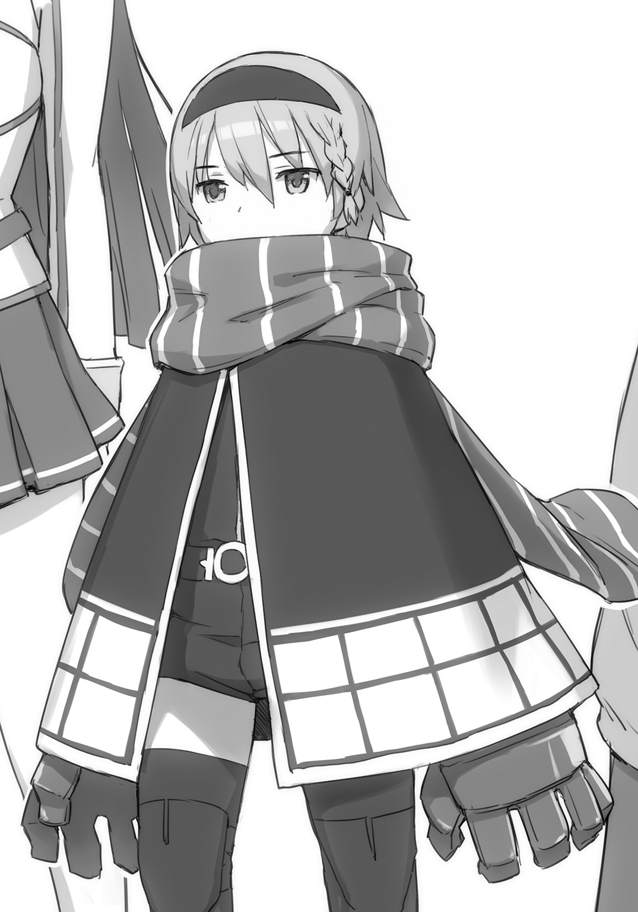

| 英雄教室 4 | |
| 新木伸 | |
この本は縦書きでレイアウトされています。
また、ご覧になる機種により、表示の差が認められることがあります。
ＣＯＮＴＥＮＴＳ
「ローズウッド学園の騒動」
「ソフィ」
 ダッシュエックス文庫DIGITAL
ダッシュエックス文庫DIGITAL
英雄教室４
新木 伸
第一章「ローズウッド学園の騒動」
第一話「生徒会長選挙」
○ＳＣＥＮＥ・Ⅰ「国王の寝室」
こんこん。手首を返して、学園長室のドアをノックする。
数秒待ってから、またもういちど――。
こんこん。
返事はない。
アーネストは、深く大きく息を吸ってから――。
「国王陛下。――アーネスト・フレイミングです」
やっぱり返事はない。
「はぁ」
大きく、ため息をついてから、ドアノブに手をかける。
「入ります。入ります......。入りますよー......？」
前に一度入ったことのある国王陛下の寝室に、そろりと、アーネストは頭の先から入っていった。
前のときと同じように、陛下の姿は、広い正方形のベッドの上で見つかった。ぐーぐーと寝息を立てて、大の字になって、本当に無警戒に寝ている。
「陛下。国王陛下」
まずは近づく前に声をかけてみる。
ぐー、ごー。
ずいぶん乱れたシーツの上で、裸の野獣――もとい、男性は、のんきにイビキをかいている。
「陛下。国王陛下」
もう一歩ほど近づいて、声をかける。
セイレーン女史から許可はもらってある。
容赦なく叩き起こしていいと言われている。
ちょっと楽しみ。
アーネストは伸ばした指先で、顎髭の上のほっぺを、つんつんとやった。
「う～ん......、むにゃむにゃ......、セイレーン......、やめたまえよ......」
完全に勘違いしている。
おもしろくなってきて、もっと、つんつんとやった。容赦なく、つんつんと、つっついた。
問題ない。許可は得ている。不敬罪にはあたらない。
「ふふふふ......、ういやつめー......」
国王が寝言を言った。
そして――。
がばっ、と、きた。
抱きついてこられた。
だがしかし――。これは前回、経験済み。
前回と同じ轍は踏まない。
国王陛下に、ぎゅーっ、って、やられると、まあ悪い気はしないんだけど。ブレイドが嫉妬するし。
よってアーネストは、さっと素早く身を躱した。
抱きしめた腕の中に女体がないことに気がつくと、国王は、ぱちりと目を開いた。
「やあ。アーネスト君。良い朝だね」
さわやかな顔と声でそう言う。
ほんの寸前まで寝ぼけきっていたことなど、おくびにも覗かせないが、照れを隠しているのだということは、もう、バレバレだった。
自分の何倍もの年齢の男性を「かわいい」と思ってしまって、アーネストはちょっとおかしく感じた。
「次の他校との親善会の進行内容についての資料です」
ようやく用件に入れた。ファイルを突き出す。
「ああ。うん。午後の執務のときに見させてもら――」
「――いえ。いま見てください。昨日中にご決裁いただけるはずでした」
「君はセイレーンのように厳しいね」
国王はしぶしぶ書類を受け取った。
「そういえば私はここの学長だったのだね」
「なんだと思っていらっしゃったんですか」
アーネストはそう答える。
国王はベッドに起き上がったまま、半裸のままで、書類に目を通しはじめた。
アーネストはまっすぐに立って、待っていた。
いっぱい生えている胸毛が、さっきから気になって仕方がない。
「交流試合は個人トーナメントではなく団体戦にしたまえ。他は特に問題ない」
ほんの十数秒ほどで、国王はそう答えた。
「はい」
彼女自身も迷っていた部分を指摘された。やっぱり。
国王が団体戦を求めた理由を訊ねるほど、愚かではないつもりだ。アーネスト自身も迷っていた部分――観戦や交流試合としての〝盛り上がり〟に関わることだろう。
しかし......国王陛下。
物凄い速度で見ていて、飛ばし読みだろうと思っていたら、とんでもない。将来、この凄い人に仕えられるのかと思うと、ぞくぞくした。
「それでは失礼します」
用件が済んだ。アーネストはそう言った。
ぎゅーっとやられないうちに、さっさと、退散しないと。――ブレイドが嫉妬するし。
「ああ。待ちたまえ」
退室しようと、ドアノブに手をかけたところで、国王に呼び止められる。
「そういうのは、普通、生徒会長の仕事だと思うのだがね」
「はい？」
なにを訊かれたのか、わからなかった。ばかな女だと思われないために、アーネストは必死に頭を回転させた。
「この学校に生徒会長はいないのかね」
「私が生徒会長みたいなものですが」
アーネストはそう答えた。学園の〝女帝〟――と、これは、皆が自分につけた名前であるが。自分で言ってたら単なる恥ずかしいやつであるが。昔も、そしてブレイドが来てからの今も、学園のことは、すべて自分が決定している。
「選挙で選ばれた者を生徒会長と呼ぶのだよ。恐怖政治の独裁者は生徒会長とは言わないね」
「きょ......」
言いかけた言葉を、アーネストは呑み込んだ。「恐怖政治」っていうところには反論したいところであった。だが、王の道――王道を、実際に歩んでいる者から言われれば、頭を垂れて聞かざるを得ない。
「選挙をやりたまえ」
「いえ。でもっ」
「やりたまえ」
「我が校にはそうした伝統は――」
「やりたまえ。やりたまえ。やーりーたーまーえーよー」
「あのですね」
手足をばたばたとさせる国王に、アーネストはげっそりとなった。
さっきまで覇王だったのに、いつのまにかシームレスで、単なるだだっ子となっている。
「君のようなキツい少女になじってもらうのもよいのだがね。どうせなら眼鏡で三つ編みで真面目っ子の生徒会長に、〝こんな分量の仕事も期日までにあげられないとは、その能力をいささか疑わざるを得ませんね〟とか、なじってもらってほしいのだー。私には新たな刺激が必要なのだー」
「そっちですか」
アーネストはため息をついた。つまり国王の個人的趣味だ。
なに？ なんなの？ 眼鏡で三つ編みの真面目生徒会長って？
セイレーン女史の苦労を、たぶん、千分の一ぐらいわかった気がした。
「それでは失礼します」
「選挙をするかね？」
「――考えておきます」
最後にそう答えて、アーネストはドアを閉めた。
○ＳＣＥＮＥ・Ⅱ「いつもの昼食」
いつもの昼食。いつもの食堂のいつものテーブル。
〝アーネスト組〟の面々は、食堂でランチのビュッフェを楽しんでいた。
いつものように、各自が面々、好きなものを好きなように食べている。
ブレイドは、これまたいつものように、カツカレー。
「カツカレーしか食わない」と思われるのが、少々癪ではあるのだが、うまいのだから仕方がない。ちなみに本当にカツカレーしか食わないわけではない。三食のうち二・五食ぐらいしか、実際には、食ってない。
「ねーねー。聞いて聞いてー」
アーネストがイェシカあたりをつかまえて、話を聞かせようとしている。だがイェシカはクレアとマリアとイオナを相手に、別々の話を同時展開中。
さすがのイェシカも３ＷＡＹまでが限度。それ以上は、キャパシティオーバーだ。
「なんなんだ？」
ブレイドがそう言うと、アーネストは顔を輝かせて、話を始めた。
「国王陛下ったら、ひどいのよ。――〝この学校に生徒会長はいないのかね？ 選挙で選ばれた人間を生徒会長と呼ぶのだよ。恐怖政治の独裁者は生徒会長とは言わないね〟とかなんだとか」
声色まで真似て、アーネストが言う。
〝国王ひどい〟という部分に同意を求める言葉だったのだが――。
テーブルにいた全員が、こちらを――、ブレイドのところは素通りして、アーネストのほうを向いて――。真顔で、力強く深々と、うなずいた。
３ＷＡＹで会話中だったイェシカも、顔をこちらに向けている。こくこくこくと、何回もうなずいている。
「え？」
アーネストは目をぱちくり。
皆に訊き返す。
「えと、陛下が......、ひどい？」
「ううん。――じゃなくて。陛下の言ったほうに、うなずいたんだけど」
イェシカは真顔で言った。
「え？ え？ え？ 生徒会長が......どうとかいう話のほう？」
「陛下はなんて言ってたの？ もういちど。パードン？」
「え？ ええと......、〝選挙やれ〟ってさ」
アーネストはそう言った。
「うん。うん。うん」
皆はまた、一斉にうなずく。
「いやー。まともなこと言うわー。陛下のくせにー」
うんうんうん。
皆は同意する。〝まともなこと〟のほうに同意なのか、〝陛下のくせに〟のほうに同意なのか、これは、どちらかわからない。
「なー。なー」
ブレイドはスプーンをくわえつつ、皆に訊いてみた。
さっきからわからないことが、ひとつあるのだが......？
「せんきょ、って、なんだ？」
「親さまはそんなことも知らないのか」
膝の上から、我が子が言う。
「おお。おまえはわかるのか」
えらい。えらい。
ブレイドは我が子の頭をなでくりなでくり。クーの頭は、いつも、撫でるのに手頃なところにある。
「皆のいう〝せんきょ〟とやらは、きっと、決闘の方法のことに違いないのじゃ。皆の話をきちんと聞いていれば、我でもわかることなのじゃ」
「なるほどー」
「じゃあ、せーとかいちょー、ってのは？」
「それは言葉の響きでわかるぞ。親さま。きっと一番コワイやつのことなのじゃ」
「マスター。私にお訊きください。ハイスペックな私には、完全かつ完璧に説明することが可能です」
イオナが言う。こいつに訊くと、ドヤ顔になって、褒めろ褒めろとうるさくなるので、ぜったい訊かない。
「すごいね。クーちゃん。だいたい合ってるよー」
クレアがクーの頭を撫でる。
ほら。合ってるってさ。
「私も撫でてほしいです。マスター」
おまえなんにも役に立ってないじゃん。
「――で？ なに？ やるの？ するの？ その〝せんきょ〟っていうの？」
スプーンで指して、アーネストに訊いた。
「や......、やるわよっ！ やればいいんでしょ!?」
「そっか。やるんだ」
ブレイドは言った。
わざわざやらなくたって、いちばんコワいやつなら、アーネストに決まっているだろうに。
○ＳＣＥＮＥ・Ⅲ「自薦他薦」
「じゃあ、いま話した通りなんだけど。生徒会長に立候補しようっていう人は、いる？」
午後の教練。
試練場での授業を差し置いて、生徒全員を前にして、アーネストからの通達が行われていた。
隅っこのほうで教官が待っている。「早くー」という顔をしているが、それを口にすると、女帝に正座させられてしまうので、黙っておとなしく待っている。
「もし誰もいないようなら、私から、陛下には〝いませんでした〟って、そう報告して――」
女帝が話を打ち切ろうとするので、何人かが、戸惑いながらも、小さく手を挙げかけた。
ぎぬろ。
久々に眼圧が飛ぶ。
最近すっかり物理的威力を持つようになったアーネストの眼圧は、衝撃で地上数センチをえぐりながら進んでいって、少数の立候補者を、縦回転させて、吹っ飛ばした。
「はい。いないわね！ じゃあ陛下には――」
「おい」
ごいーん。
「痛ったあぁぁい......」
ブレイドはアーネストの脳天に、げんこつを見舞っていた。
アーネストは頭を押さえてうずくまっている。
自分ひとり話についていけていないのもアレなので、イオナにドヤ顔することを許して、きちんと説明を受けた。
それによると――。〝せんきょ〟というのは、つまり、ガッコの中のちっちゃい国王を選ぶようなものだった。それはいっちゃんコワイやつが周囲を威圧してなるものではなくて、皆で相談して、全員が納得のゆく方法で決めなくてはならないのだ。それが〝みんしゅてき〟というものなのだ。
「だめだろ。それじゃ」
「だってえ......」
「だってじゃない」
「もうっ......、わかったわよ。はい。立候補する人っ？」
さっき手を挙げかけた数名は、さすがに懲りたのか、こんどは手を挙げようとしない。
「ほ、ほらっ。い、いないし？」
そう言うアーネストに、ブレイドは、またゲンコツを持ちあげてみせた。
「うーっ......」
アーネストは頭をかばってしゃがみこむ。
くすくす、と、どこかで笑い声があがったが、アーネストが、べそかいた目で、ぎぬろ――とやると、体育座りをした皆の間で、いくつかの縦回転が起こって、ぱたりとやんだ。
「じゃあ〝りっこうほ〟とかゆーのでなくて、なんだっけ？ 〝たせん〟だっけ？ 〝せーとかいちょー〟とかゆーのに、こいつ向いてるんじゃないかっていうのを、言うほうにしようぜ」
ブレイドはそう提案した。隣でイオナが「どやっ」という顔をしていたが、気にせずに、皆に言う。
「ええと......」
クレアが小さく指先をあげてくる。
ブレイドが指さすと、クレアは、うなずいて――。
「クレイ君」
「えええええっ!? 俺えぇっ？」
指名されたクレイは、自分の顔を指差して大声をあげている。皆のあいだからは、「ああ、そうそう、そうだよね」とか、声があがっている。
へー。クレイって、〝せーとかいちょー〟向きなんだ。
「おおお俺なんかより、もっと向いてるやつがいるだろ？ たとえば――ほらっ、ブレイドだとかっ！」
「俺？」
こんどは自分に飛び火した。ブレイドは自分の顔を指差した。
「ブレイド君はだめでしょ。常識ないでしょ」
手を振ってぱたぱたと打ち消したのは、イェシカ。ころころと笑っている。
失礼な。俺は普通。普通。ふつーだってばさ？
「じゃ、じゃあ――イェシカ！」
「あたしかい」
皆の中から、「あー、あるかもー」とか声があがる。
「え？ あるの？」
イェシカが自分の顔を指し示して、驚いている。
「いやいやいや、あたしなんかよりも――」
指名された人間が、つぎに人身御供を差し出して――、という連鎖が何コンボか決まったあとで、〝りっこうほ〟――ではなくて、他薦の人間が、何人か出揃った。
「じゃあ生徒会長選挙に出るのは、このメンバーで決まりね。私は当然。立候補するから」
アーネストが宣言する。
「せんきょ、いつやんの？」
「放課後やるわよ」
――と、アーネストが言ったとき。きーんこーんかーんこーん、と、授業時間を終える鐘が鳴った。
ずーっと立って待たされていた教官が、隅っこで、さめざめと泣いていた。
○ＳＣＥＮＥ・Ⅳ「投票終わって」
「じゃ。開票していくわよ」
皆がそれぞれ名前を書いた紙を箱に収めて、投票が終わったところで、アーネストがそう言った。
投票用紙はノートの切れ端。投票箱はそこらの空き箱。「形式なんてどうでもいいのよ。どうせ結果は変わらないんだから」――と、これは、アーネストの弁。
早く開票して、決まり切ったその結果を国王のもとに報告しに行きたいという顔をして、講堂の教壇に立っている。
ブレイドはその脇でアシスタント役をやらされている。黒板に書いてゆく係だ。
アーネストは箱に手を突っ込み、最初の一枚を引っぱりだした。
「アーネスト・フレイミング」
そこに書かれた名前を読みあげる。
髪を、ふぁさっとかきあげ、片足に体重を掛けて立ち、どやっ、という顔をする。イオナのそれはかなりウザいが、アーネストのこれも、なかなかにウザい。
「はよ次引けよ」
「じゃあ。つぎ。......クーちゃん？ 誰よこれ。クーちゃん厳密には生徒じゃないでしょ。他薦もされてないでしょ」
アーネストは笑う。皆も笑う。ブレイドは憮然としていた。
だめか。クーはだめなのか。我が子はけっこう賢いと思うのだが。本質をずびっと突くことを言ったりするのだが。
「どんどんいくわよ。つぎ。......魔王さま？」
え？ という顔でマリアが硬直している。三つ編みお下げの地味な少女、身のうちに別の人格を棲まわせている。魔王はふだんはマリアの中にいて、彼女が三つ編みをほどいたときだけ、表に現れてくるのだ。
彼女の場合は、生徒なのか、そうでないのか......。かつての魔王の血縁である彼女の立場は、学園預かりとなっている。国王自身が学園長をやっているために、そうした無茶も可能となるわけだ。大陸の覇王、八ヶ国連合の盟主が「責任はすべて私が取る」と言って、異を唱えられる者は、そうそういない。
「もう、みんなふざけてばっかり。ちゃんとやってよね」
アーネストはどんどん開票していった。
意外な名前が、またいくつか飛び出してくる。そのたびにアーネストは笑いを浮かべるが、その顔が、徐々に曇りはじめる。
開票が二十も進んだときには、アーネストの顔からは、すっかり笑いが消え――。
三十も進んだ頃には、無表情となり――。
五十に迫ろうかという頃には、一枚ごとに、「ちいっ」と、もの凄い舌打ちが響くようになり――。
さらにどんどん進んでいって、八十に届く頃には、魔物の顔となり――。
最後の一票。百九票目を開くときには、アーネストは、解脱しきって聖母の顔となっていた。
開票の結果。
アーネスト......二票。
クー......一票。
クレイ......一三票。
レナード......七票。
魔王......三票。
その他もろもろ、一票とか二票とかの名前が、数人ほどあった。
出てきた名前のなかには、意外な者も、それほど意外でない者もいた。他薦で出ていた人間とか、ぜんぜん関係なくて、みんなかなりフリーダムに投票していた。
そして、圧倒的多数を収めた人間が、一人いて――。
マリア......七二票。
記録的な大差をもって、マリアが選ばれた。
「わっ、わっ、わっ――わたしなんかがっ！ ど、ど、ど――どうしてえぇ!?」
立ち上がった少女は、三つ編みお下げを振り回して、慌てている。
「おめでとう。マリア。やっぱ......、恐怖政治って......、だめよね。み......、みんな。......ご、ごめんね？」
アーネストは柔らかい微笑みを浮かべて、マリアに言った。
百九票を開票してゆくうちに、山あり谷ありドラマありで、最後には、アーネストは皆からの評価を受けとめるに至っていた。
事実を認めることも、自分を改めることもできる。
度量はある女なのだ。俺たちの女帝は。
「でもなんで......マリア？」
「人の話をきちんと聞いてくれるからだろ。みんなのことちゃんと知ってるし。全員と友達なの、マリアだけだぞ？」
ブレイドは太鼓判を押した。戦闘の中枢となるのは、自分かアーネストだろう。それは間違いない。そして、この学園の平時の人間関係の中枢となるのは、間違いなく、彼女だった。
ブレイドは生徒全員の戦いかたのクセは知っている。だがマリアほど、皆の内面を熟知している者はいないだろう。この学園の一〇八人と一匹と一体（と二羽）は、全員、もちろんトモダチだ。しかし悩み事を相談できるぐらい親しいという意味では、おそらくマリアにかなう者はいない。ブレイドにくる悩み事相談は、「どうやったら強くなれる？」とか「どうやったら超生物を倒せる？」とかばっかりだ。恋愛も人間関係も、なーんも、こない。
「そうなの？」
アーネストはきょとんとしている。
「そうだよ」
ブレイドはうなずいた。
あー、わからんか。普段から観察してないと。
「――だからそういう結果がでたんだろ」
ブレイドは、アーネストを納得させるために、そう言った。事実はいい。事実だけを信じていれば、足元をすくわれることもない。
「そうね。事実は認めましょう」
アーネストも納得してくれた。さすが。
だけどなー。――と、ブレイドは思った。
うちの我が子も、全員とめっちゃ親しいんだがなー？ みんなのとこいって、だっこー、とかやってるんだがなー。だめなんかなー？ だめだったんだなー。事実からすると。
「だけど......。あはは。おっかしーの。ブレイドあなた、〇票よ？ 人望ないのねー。超生物のくせにーっ」
「うっせ。おまえだって二票だろ」
「私は二票ありますもの。〇票の誰かさんなんかとは、大違いですから」
よくくびれたウエストに手をあてて、アーネストは気取って立った。
ドヤ顔うぜえ。
「どうせそのうちの一票は自分で入れたんだろ」
「そうよ？ でももう一票は――。あ！ そうだ――！ もう一票入れてくれたの！ だれだれっ！ だれなのーっ!? もうっ！ ――愛してるーっ！」
アーネストは皆に向けて叫んだ。誰も名乗り出てはこなかったが――。
しかし、アーネスト......。気づいてないのね。
いつも日陰からそっと我が君を見つめるレナードは、今日もいつものように哀れだった。
第二話「お色気の目覚め」
○ＳＣＥＮＥ・Ⅰ「夜中の女子会」
アーネストの部屋では、いつものように夜の女子会が行われていた。
「ブレイド君ってコドモよねー」
イェシカが言う。お菓子が減る。
「ほんとそうよねー」
アーネストがうなずく。お菓子が減る。
「そこは......、いいところなんだけど。でもちょっと......困ることもあるかも」
クレアが控えめに発言する。お菓子がひかえめに減る。
「困る、っていうか。ムカつく？ 自尊心的に、ちょっと、傷つく？ ていうかー」
アーネストが憤然と言う。お菓子がごそっと減る。
「あー、お色気の術、通用しなかったもんねー」
「イェシカ。もっとすごいの教えてよ！」
「それはぁー、まだ、ちょぉーっと、アンナには、早いと思うわよー？」
「ちょ――それ......、ど、どんなのよ？」
ビビるアーネスト。
妖艶に微笑むイェシカに、オトナだーっ、とか思う。
「あやつの中身は五歳児ということで定評は固まっているからな。そして我もリアル五歳児であるから、お似合いというわけだ」
「ちょ――マオ！ なにちゃっかり言ってるのよ！」
今夜はマリアでなくて魔王のほうで女子会に参加。第二の人格である彼女が、マリアのなかに生まれてから、ちょうど五年。――五歳という意味だ。
「うん。なに。我は愛人でよい。正妻の座はおまえに譲ろう」
「ちょ――！ な、な、な――なに言ってるのよ！ せ、せ、せ、せいさい......とかっ」
ぼっ、と真っ赤になる。頰が髪よりも赤くなる。
「ねえねえ。いま五歳っていうことは、そのうち時間が経ったら、ブレイド君って、目覚めるっていうことかしら？」
「そ、そう......なるんじゃないの？ わかんないけど」
「そっか。そういえば、このあいだ嫉妬も覚えてたっけ」
イェシカはうなずいて考えこむ。
アーネストは〝嫉妬〟と言われて、どきっとした。あのときって本当に〝嫉妬〟だったのかな？ 〝嫉妬〟してくれたのかな？ でも仮に本当に〝嫉妬〟だったとしても、そこ止まりであるわけで――。
「もうっ。ほんと五歳児なんだから。あのお子様めっ」
唇を尖らせながら、遠くを見る目で、そう言った。
「でもブレイド君みたいなタイプって、いったん目覚めちゃうと、スゴいかもよー？」
〝経験豊富〟と皆から見なされているイェシカの、意味深な言葉があがった。
女子たち一同は、ごくりと固唾を呑んで詰め寄った。
「す、す、す......すごいって、なにが？」
「ナニが」
イェシカはさらりと答える。
「きゃー！ きゃー！ きゃー！」
しばらく悲鳴があがる。部屋中は大騒ぎ。
「もーやだー！ ばかーっ！ ......で、なにが？」
「だから。ナニが」
「きゃー！ きゃー！ きゃー！」
以後エンドレス。
女子会は大いに賑わった。
○ＳＣＥＮＥ・Ⅱ「昼の食堂」
「うっふ～ん♡」
ブレイドはカツカレーを食べている。
イェシカがその隣にやってきて、前屈みになって、体の前に回した両腕でもって、乳房を絞りあげるように強調している。
「うっふ～ん♡」
「なあ。そのかけ声はなんなんだ？」
ブレイドはスプーンを止めて、訊いてみた。
しばらく前から、その点が疑問だったのだ。
「だめ？ わかりやすくていいと思ったんだけどなー」
「いやだめかどうかわからないが。だから、そもそも、なんのためのかけ声なんだ？」
「悩殺的な、なにか？」
「悩まされているのは確かだが......。死ぬのか？ どうやってそれで殺すんだ？」
「あっはーん♡」
イェシカはポーズを変えた。小指を口元に含み、もう片方の手では、自分の髪を乱しにかかる。
「あっはん？ ......で。だからなに？」
ブレイドはきょとんとしていた。スプーンを口にくわえて、へんなポーズでへんな声をあげるイェシカを見つめる。
「なにやってんのよ！ イェシカ！」
やってきたアーネストが、トレイを放りだす勢いで、親友に詰め寄る。
「止めないでアンナ。ちょっとこう、ここまでスルーはないでしょ。女の子として、ここは、戦うべきところでしょ」
「戦わなくていいから！ 戦うところが違うから！」
「アンナも一緒に戦う？ 新しい術、教えるわよ」
「いっ......いらない！ いらない！ いや教えてほしいけど！ でもほらみんな見てるしっ！」
周囲を指差す。食堂の皆は、騒いでいるアーネストたちを、何事かという顔で見つめている。
ごはんは静かに食べましょう。
ブレイドは、話題が自分を離れていったようなので、カツカレーを食べはじめた。ブレイドはカツカレーが大好きではあるが、なにもカツカレーばかりを食べているというわけでもなく、じつのところ、三食のうち二・五食くらいしか食っていないわけではあるが――。今日の昼はたまたまカツカレーというだけである。本当に、いつも食っているわけではないのである。
「マスター。カツカレー大盛り。おかわりです」
「おお」
イオナがおかわりを持ってきてくれた。ブレイドは目の前の皿を、たった三口ほどで片付けた。
「クーちゃんには、甘口を」
「ありがとーなのじゃー」
クーは最近、自分でスプーンを持つようになった。
親さまが「あーん」とやらなくても、ひょいぱくひょいぱくと、自分で食べてくれる。いいこいいこ。
「ほーら、ブレイド君。こっち見てー。うっふ～ん♡」
「え？ まだ続いてたの？」
ブレイドはぎょっとして、横を見た。
もうすっかり自分から離れたと思っていたのに、まだ自分は、話題の渦中にいるようだった。
だいたいあれは、どんな暗殺術なんだ？
「これはもう、黙ってはおれんな。愛人として」
サラダ主体の食事をしていたマリアが、ふいっと立ち上がり、三つ編みをほどきはじめた。
妖艶に微笑む、魔王へと変わる。
主人格であるマリアに主導権はあるが、たまにこうして魔王が出ばってくることもある。
「こうでよいのか？」
なんか魔王がポーズを取っている。
「ちょ――マオ！ スカートあげない！ アウト！ それアウトだから！」
「魔族が肉体を顕示せずにどうする。こちらを見ろ。ブレイド」
うるさい。いま俺は忙しいんだ。
いまカツとカレーとライスを同時にスプーンにのせるので忙しいんだ。スプーンの上でバランスを取りつつ、三つを同時に口の中に放りこむと、奇跡のハーモニーが生まれるのだ。
そのことは、たぶん人類のなかで自分だけが知っている。
「ほら。クレアもやったんさい。やったんさい」
「え？ いやわたしはいいから――って！ きゃあ！ きゃあ！ きゃあ！」
「親さま。すごいぞ」
「そうか。すごいんだろうな」
「マスター。視覚スナップショットを撮っておきますので、あとでご利用であれば、ぜひハイスペック機である、この私にご用命を」
「ああ。ありがとうな。ハイスペック機」
ブレイドはひたすらカツカレーに集中した。まったく。なんなんだか。
「こ、こうかしら......？」
「ちがうちがう。アンナ。もっと前かがみに。もっと下から捧げ持つように」
「わ。ちょ。ちょっ。くるしい。くるしいっ。ムネっ、それ、くるしいからあっ」
アーネストの声まで聞こえてきて、ブレイドはちょっとだけ、そちらを見た。
「なにやってんの？ おまえ？」
イェシカに背中側から抱きつかれて騒いでいる。イェシカの手が胸のあたりにきている。揉んでる？ ぎゅーっと絞ってる？
だからさっきから、みんな、なにやってんの？
「ほら。アンナ。言ってみ？ ――あはん♡」
「い、いや――ちょっと、そーゆーのは――そこまではっ」
「じゃあ。言わせちゃる」
イェシカに耳たぶをかじられる。
「あはっ♡」
アーネストはへんな声をもらしている。
ブレイドは呆れきった顔で、なにかやってる女の子たちを見ていた。
まったく。もう。なんなんだか。
○ＳＣＥＮＥ・Ⅲ「テルマエにて」
テルマエの時間もお色気攻勢はつづいた。
「うっふーん♡」
「ちょ！ ちょ！ ちょ――ちょっと！ イェシカ！ 見えてる！ 見えてる！ 見えてるううう！ 具が！ 具がああっ!!」
「止めないでアンナ。いくらなんでもここまでスルーはないでしょ。一回、こっち向かせるくらいやらないと、女がすたる」
「ブレイド！ 見ちゃだめよ。大変よ。ぜったいこっち向いたらだめだからね！」
「見ねえし」
「ご安心くださいマスター。すべて視覚スナップショットに収めています。ご利用の際にはお申し付けを」
「ああ。ありがとよ。ハイスペック機」
「やめなさいよ。イェシカ。立ちなさいよ。だいたいなんなのよそれ！ どんなポーズよ！」
「これ？ 女豹のポーズ？」
どんなんだ？ 女豹のポーズって？
「こっち見んな！」
おこられた。
ブレイドは、ぷうとむくれた。
「ソフィ。貴女は参戦しないのですか」
「私はいいわ。ブレイドが幸せであればそれでいいの」
「いまブレイド、ぶんむくれているわよ？」
アーネストうっせー。むくれていねーよ。うっせー。
女豹のポーズとか、勝手にとってろー。
「なるほど。視覚心理戦においては勝機が薄いと判断したわけですね。賢明です。そしてアーネストは接触して触覚を侵食する手段に出たわけですね。ソフィ。貴女も視覚的刺激には乏しい側ですから、アーネストの身体動作を見習って――痛い痛い痛いですソフィ。こめかみに加わる加重が、私のメタル頭蓋骨の設計限界を明らかに超えています」
ソフィがイオナにおしおきを受けている。そっぽを向いて背中を向けていたって、それはわかる。
「もうっ、ブレイド。むくれてないの」
「むくれてねえし」
「ああ。もうっ。ほらほらっ。そこに寝て」
湯の中にある平たい岩のほうに追いやられた。
最近、アーネストは、なにかあると、よくマッサージをしてくれる。炎属性の気を持つ彼女のマッサージは、ほかほかとよく体が暖まって、すごく効くのだ。
「ったく。もう。なんなんだよ？」
ぶつくさ言いながら――。ブレイドは、割合、そそくさと、大岩の上に寝そべった。
〝女豹のポーズ〟とやらはわからんが......。
マッサージはいい。これはいいものだ。
○ＳＣＥＮＥ・Ⅳ「男子会」
「すまん！ かくまってくれ！」
廊下から逃げこんで、飛びこんでいった先は、クレイたちの部屋だった。
「なんだブレイド？ どーした――むぐっ」
「しいっ！ 静かに！」
クレイの口を塞ぐ。ブレイドは気配と気を殺しながら、廊下を駆けて行く足音に耳を澄ませていた。
気を完全に殺しているから、探知手段は「音」だけとなる。物音を立てさえしなければ、イェシカだろうがイオナだろうが、気づかれることはない。
複数人の気配が廊下を動く。「見た？」「いた？」「こっちにはいないわ」とか口々に言っている。
彼女たちの気配が、遠ざかってしまうまで、クレイの口を押さえ続けた。
同室のカシムは、自分で見事に気配を殺しきっていた。さすがアサシン。
ばしばしと、クレイが手でタップしてくるので――ブレイドは、ようやく彼を放した。
「ぷはあっ！ ――はぁっ！ 死ぬかと思った！」
クレイは荒い息をついている。
イケメンが鼻汁を流して台無しになっていた。
すまん。ほんとすまん。
ブレイドは顔の前に手をかざして、鼻汁まみれのハンサム顔を拝んだ。
「すまん。かばってくれ」
「それはいいが」
新しい鼻紙がパスされてくる。そちらを見もしないでクレイはキャッチした。カシムとクレイのチームワークは、いつも阿吽の呼吸というやつだ。こいつら結婚とかゆーのしちゃえばいいのに、というぐらい、息が合っている。
ちーん、とやってから、クレイはブレイドにその顔を向けた。
「ひとこと。言ってもいいか？」
「うん？」
疑問の返事だったが、クレイは肯定と受け取ったらしく――。
「ばくはつしろ」
「うん？」
「だから。ばくはつしろ」
「なんだそりゃ？」
「ばくはつしてくれ」
命令から懇願になった。
「なんだ？ 自爆技でも教えろってか？」
「あるのか」
「あるけど。使ったことはないなー」
使うと死ぬ。たぶん蘇生も復元もできないぐらい、木っ端微塵になる。
「あるんだ」
「ばくはつって、なんなんだ？」
「いや。いい。言ったから。もう気は済んだ」
「うん？」
なんだかよくわからないが。もういいらしい。
この部屋はクレイとカシムの二人部屋だ。一人部屋にいるブレイドは、物珍しげに、上下に重なった二段ベッドを見た。
「ところでお菓子はないのか」
部屋を見回す。なんか女子の部屋より殺風景だ。お菓子の器がないのだ。
「ん？ 菓子？」
「女子会だとお菓子が出るんだぞ」
「菓子......。菓子......。カシム。乾パンあったんじゃないか？」
「乾パン......、乾パン......、あった。あった。......けど、カビてた」
「黒いやつ？ 青いやつ？ 赤いやつ？」
ブレイドは訊いた。
「青カビだ」
「じゃあ食えるよ」
カビの生えた乾パンをまんなかに囲んで、三人で座って男子会を開く。
素敵なものがいっぱい並ぶ女子会と、なんだかちょっと光景が違う気もするが......。
これはこれで楽しかった。
「あ。それだめな。こっちはオーケーだ」
戦場でカビた携行食なんて、よく食った。食えるカビと、食えないカビの見分けが、つくようになった。誰でも勇者をやっていれば身につくことだ。
「ところで。わかっているなら、訊きたいんだけど......。いま、いったいなにが起きているんだ？」
「そこからかよ......」
ブレイドは真顔で訊いた。だが返ってきたのは、げっそりとした二人の顔だった。
「そう言うなよ。頼むよ。わかんないんだよ。なんでみんな、へんな声あげて、へんなポーズとって、へんなカオになって迫ってくるんだ？」
「へんなポーズって......」
「へんなカオって......」
「だから説明してくれよ」
「つまりだな......。あれは、おまえを誘惑しようとしているんだ」
「ゆうわく？ ......って、なんだ？」
「うっふん。あっはん。っていうやつだ」
「それはイェシカがよく言ってる」
「ばくはつしろ！」
クレイが叫ぶ。
「まあまあ。抑えろクレイ」
立ち上がった親友を、カシムが後ろから羽交い締めにしている。
「――ほらブレイド。誘惑っていうのは、たとえばだな、カオを赤くさせて、迫ってくるとか」
こんどはカシムが説明してくれる。
「クレアがよく顔を赤くしているぞ」
「てめえ！ ばくはつしろ！」
「抑えろ。抑えろカシム」
立ち上がったカシムを、こんどはクレイが羽交い締めにする番だった。
クレイはイェシカが好きなのだ。
カシムはクレアのことが好きなのだ。
この「好き」は、トモダチとして「好き」なのではなくて、もっと違う種類の「好き」なのであるということは、ブレイドにも、なんとなくわかってきていることだった。
「うーん。うーん。うーん」
ブレイドは腕組みをして、考えた。
「ひょっとして、あれか？ 女医からよくやられる、あれと近いのか？」
「なんだ？ あれって？ 女医って――、あの、保健室の女医さんか？ 名前知らないけど」
「あの人......エロいよな。なんか。こう。うまく言えねーんだけど。とにかく。エロいんだ」
「わ。わかるけど。同意するけど！ ......でも俺にはっ、イェシカがっ！」
カシムとクレイは二人で悶えている。ブレイドは話を続けた。
「その女医がな。しょっちゅう迫ってくるんだが」
「迫る？」
「ほら。俗に言う。〝交尾〟とゆーのを、俺に迫ってきてだな。だからそのたびに、俺は逃げ出して――」
「「ばくはつしろ!!」」
二人して首をしめてきた。ぐええ。
「しかし。おまえ。すごいやつだよな。尊敬するよ」
首を放してもらってから、クレイにそう言われた。
「だな」
カシムも同意する。
「だからなにが？」
「おまえ、なんにも感じないのか？」
クレイに真顔で訊かれる。
「だから、なにがだって？」
「そりゃもちろん、おまえをだしにして、みんなで、遊んでいるだけだろうとは思うけど」
クレイは答えてくんない。
「クレアはどうかわからないが、イェシカはそうだよ」
「うん。イェシカはどうかわからないが、クレアはそうだな」
クレイとカシムは二人してうなずきあっている。二人とも答えてくんない。
「きいてよ。きけよ。だから、なにがだって？」
「いや。ほら。その。なんていうか。イェシカとか女帝とか......、け、けっこう......、え、えっち......だ、だろっ？」
「えっち？」
はて、と、ブレイドは首を傾げた。
普通極まりない感性を持つ自分としては、ここで、いったいなにに同意しなくてはならないのだろう？ なにを感じなければならないのか？
「ばっか。クレイ。――エロいっていったら、魔王ちゃんに決まってんだろ。俺、テルマエのとき、......近づけなくてさ」
カシムが白状するように、そう言った。
「なんで？」
「だっておまえ......。大変になるだろ？」
「なにが？」
「ナニがだ」
「うーん......」
ブレイドは腕組みをしてうなった。なにが大変なのだろう？ なにが問題となるのだろう？ これは深遠な問題だ。
さっぱりわからないことが、問題だ。
「いや、俺は、魔王ちゃんも女帝もあれだと思うんだけど。特にイェシカとかイェシカとかイェシカとか」
「クレイ。おまえ。いま三回言ったぞ。そこは三回言うほど大事なところなのか。あと〝あれ〟とか〝それ〟とか言わないで、ちゃんと、具体的に教えてくれよ。指示代名詞禁止を提案する」
「無理だよ。そんな。はっきり言うなんて」
「だな」
またしても二人で同意を決めている。ブレイドは置いてけぼりだ。
「と、ところで......。み、見たのかよ？ おまえ」
「なにを？」
目的語を省略したり、代名詞にて置き換える会話法は、ぜんぜん慣れない。よくわかんない。
「イェシカの......、ほらっ、あれだよ」
「あれか」
考える。考える。考える。
そういえば、風呂のとき、アーネストがなにか叫んでいたような......？
「具か？」
「具？ なんだそりゃ？」
「俺もわからん。具とかゆーのは俺は見ていない。そっち向いてないから」
「なんで見ないんだよ。平気でいられるんだよ」
「だからなんで見るんだ。そこを教えてほしいんだが」
「もしおまえが見たのであれば、俺はおまえを斬らなくてはならない。具というのがなんだかわからないが。イェシカのそれを見たというのであれば、たとえ友人でも、俺は斬る」
急に据わった目になって、クレイは言った。情緒不安定だ。だいたい見てねえってゆーの。
「なあ。会話しようぜ？」
「ああ。そうだな」
クレイは剣の柄から手をはなした。
「ああそうだ。――おっぱいとかなら、よく見てるぞ」
見るっつーか、見せてくるっつーか。イェシカは。
「やはり斬ろう」
「俺。殺されてしまうのか。のうさつ、とかいうやつか？」
「悩殺かぁ......。俺もイェシカに悩殺されてみたいよー！」
クレイが言う。斬るのか斬らないのかどっちなんだ。――まあどっちかといえば、斬られないほうがいいが。
「俺！ 俺！ 俺！ クレアっ。クレアがっ......、クレアに......、の、の、の......悩殺されたいっ！」
「いや。クレアは悩殺してこないだろ。キャラが違うだろ」
「してたじゃん！ ブレイドに！ 初々しく清純に悩殺殺法でっ！」
「そりゃクレアはブレイドのことが好きだもんなー」
「はっきり言うなよ。知ってるけど傷つくよ」
クレイとカシムは言い合っている。
「俺も好きだぞ？ クレアのこと」
ブレイドは言った。
なんか一周して、最初のところにもどってきてしまった気がするが――。
「はー。こいつ。こうだもんなー」
「だな」
クレイとカシム。二人から、大きくため息をつかれてしまう。
うーむ。やはり〝ふつう〟は、難しい。
「悩殺ってどんな殺しかたなんだよ。それだけでいいよ。教えてくれよ。具体的には、俺、どう殺されんの？」
「イェシカは......、やっぱり......脚がいいんだよなー」
「なにいってんだよ！ ケツだろケツ！ イェシカは！」
脚派のクレイとケツ派のカシムが戦っている。
「きけよ。きいてよ」
「いやケツもいいけど。やっぱふくらはぎが......」
「ふくらはぎ？」
クレイは脚派でなくて、ふくらはぎ派だったようだ。
「あと、俺的にはいつも出ているおへそまわりだとかが......。ほ、ほら、イェシカって、ちょっと動くと、腹筋、浮きでるじゃん？」
「腹筋？」
ちがった。クレイは腹筋派だ。
「いやさすがだね!? クレイ先生は通だねっ!?」
カシムも同意を示す。カシムも腹筋派だ。腹筋派が現時点における最大派閥だ。
「茶化すなよ。カシムおまえ。......クレアについては、どうなんだよ？」
「いや。髪で」
「髪？ 髪か！ おまえそこか!? そこなのか!?」
クレイが驚いている。髪派はそれほどレアな趣味であるらしい。
「なー。なー。髪って？」
「わ！ わるいかよ！ 髪にハアハアしてどこが悪いんだっ!?」
「なー。ハアハアって？ どんな技だ？ なんでハアハアするんだ？」
ブレイドは訊いた。ぜひ〝ハアハア〟を身につけておきたい。平均的男子の必須スキルのようなので――。
「普通！ するだろ？ するよな!? ハアハア！」
「いやー。よくわからなくてー」
まじわからん。
「だからハアハアだよ！ わかれよ！」
「いやー。カシム......、おまえ......。髪でハアハアできるとか、俺、尊敬する」
クレイも〝ハアハア〟に関しては、かなりの腕前であるらしい。やはり男子の必須スキルのようである。――これはぜひ、覚えねば！
「いや。たとえばさ。ぎゅっと抱きしめて。ベッドに寝かせたとするじゃん？ するじゃん？」
「うおおー！ し――！ したらっ!?」
「そしたら、あの長い黒髪が、こう、ふぁさ――って、シーツの上に広がるんだ。扇状にっ！」
「お、扇状かっ！」
「そして俺は！ キラキラ光る彼女の髪とっ、そそ、その柔らかな体の上に覆い被さって行って――！ 行ってえぇ！ 行ってえええええええ！」
「うおーっ!!」
「うおー？」
よくわからないなりに、ブレイドは、とりあえず声だけ真似てみた。
......ぜんぜんわからん。
○ＳＣＥＮＥ・Ⅴ「おねむの時間」
「親さまー。ねむねむなのじゃー」
「ああ。うん」
ブレイドは生返事。
小さな背中がこちらを向いている。ブレイドは我が子の髪を梳かしてやっていた。
就寝前の恒例行事だ。
はじめの頃、そのまんま、なんもしないで寝かしつけていたら、アーネストたち女子一同から親失格とか怒られた。いいじゃん、そのくらいー、とか、軽くふてくされて言ってたら、親権を剝奪されそうな勢いでどつき回された。よって、寝る前のあれやこれやの儀式は、必須条項となって、きちんとやるようにしている。
髪を梳かしたら、あと、ツインテールに結んでやって、それから、角にはヤスリをかけてやって――と。ドラゴン娘のお手入れをしてやる。
「マスターに手ずから髪を梳かれるということは私の身にもいずれ起きうる事態なのでしょうか。もしもマスターの手でアンテナの調整などされてしまったら、私はいったいどうすればよいのでしょう。どきどき」
部屋の隅で正座をするイオナが、起きうるはずのない事態に対して、無駄な考えを巡らせている。
ブレイドを〝マスター〟と慕うイオナは、自分の部屋を持たず、ブレイドの部屋の片隅にすっかり居着いてしまっていた。部屋の隅の三十センチ四方がイオナの居場所だ。用事のないときには、そこで正座して過ごしている。まえは一晩中突っ立ったままだったが、さすがにブレイドも違和感を覚えて、正座をさせている。一ミリも動かず朝まで同じ場所で同じ姿勢でいたりする。
そんなイオナの視線を気にもせず、ブレイドはクーの髪を梳かし終えた。
「ほい。おわり」
「んー」
クーはゆらゆらと揺れている。だいぶおねむになっている。
背中に下ろした髪を、右と左のツインテールにまとめてゆきつつ。ブレイドは、クレイやカシムたちに教わったことを頭の中で反芻していた。
そういえばー。こいつも、雌だったけなー。クーで実演してみることにする。
「えーと。髪は。ふぁさ、だったっけ」
結びかけたツインテールを、いっぺんほどいた。背中で、ふぁさ、と広げてみる。
「んー？ なんだー？ 親さまー？ ほどくのかー？」
「扇状が大事なんだっけな」
〝ハアハア〟に至るルーティンには厳格な手順があるらしい。ブレイドはその手順を厳密に守った。
「えーと。そしたら。ぎゅっ、って、やるんだっけかなー」
クーをこっちに向かせて、ぎゅって、抱きしめた。
「わははは。親さま。くるしいのだー」
「んで、覆い被さるんだっけか」
クーをベッドのシーツの上に押し倒す。話に聞いた通り。金色の髪がシーツの上に扇状に広がった。
へー。綺麗だなー。たしかに。
「どうしたのだ？ 親さま？」
「んで、ハアハアして、うおおー、だっけか？」
よくはわからないが、息を荒くして覆い被さる。ハアハアと口で言って、うおおー、とも言ってみた。
「あははは。親さまが野獣なのだー」
うーん。わからん。
形だけ真似してみても、やはり、わからん。
「おまえも髪長いっけな」
部屋の隅っこで正座をしているイオナを呼びつける。こいつも雌ではないが、雌型だ。
イオナはいそいそとやってきた。ちょっといまいましいが、これも、〝ハァハァ〟を身につけるため――。
クーのときと、おんなじように、ふぁさっと髪を広げさせる。
「正確に言えばこれは放熱索なのですが」
ぎゅってやって、ベッドの上に押し倒す。クーとは色の違う緑の髪が、扇状に広がる。
「もしお望みであれば......。私にはそうした機能も付いています。ハイスペック機ですので。大変にハイスペックです」

「ちょっと黙ってろ」
「はい。命令ですね♡」
ハアハアして、うおおー、と、言ってみた。
......。
............。
..................。
わからない。やっぱり。わからない。
と、そのとき――。
とんとん――と、ドアがノックされた。
「ねえブレイド。いる？ 起きてる？ さっき悪ノリしてたの謝りにきたわ。もう追いかけ回さないから、部屋に入れてくれる？ ――はいるわよ？」
アーネストが部屋に入ってきた。
ブレイドはイオナとクーと、二人に覆い被さったまま、首だけをねじ曲げて、アーネストを見た。
彼女はドアのところに突っ立ったまま、口をぽかんと半開きにして、こちらを見つめていた。
「なにやってんの？」
妙に感情の欠落した声で、アーネストはそう言った。
「いや。ハアハアを身につけようとしているんだが」
「はあ？」
アーネストは、ぽかんとした顔で、間の抜けた声を返した。
「親さまが野獣なのだー」
「機能的に問題ありません。ハイスペック機ですので」
「ブレイド。あのね。間違っていたらごめんね。クーちゃんとイオナを襲っているようにしか見えないんだけど」
「髪がふぁさ、で、扇状が大事で、ぎゅーってやって、そしたら押し倒してハアハアするんだ」
「私の......、思い違いとか、か、勘違いとかでも......、なかったみたいね」
いつも腰に下げている愛剣を、アーネストは抜刀した。
「――死になさい！ この外道！」
斬りかかってくるアーネストの――その腕を取って、ベッドの上に、ぽーんと放り投げた。
「な、なにっ！ な、なんなのっ!?」
手足を縮めて身をかばうような姿勢で、アーネストは騒いでいる。
ブレイドはアーネストに言った。
「なんかドキドキしないんだよ。クーだとだめなのか。イオナだともっとだめなのか。アーネスト。おまえだと、どうなんだろう？」
「えっ？ えっ、えっ？ ええっ？」
ブレイドはアーネストに手を伸ばした。
「や。ちょ！」
「ほい。ふぁさ」
髪をほどく。もともと長い髪だ。彼女はそれを背中に伸ばしている。髪留めと髪飾りを取って、背中に広げさせる。
扇状。扇状。扇の形が大事。
髪をほどき終えたら、つぎは――。
「ほい。ぎゅー」
「ちょ！ ちょ！ ちょおお――っ!?」
抱きしめられて、アーネストが騒いでいる。
「んで。押し倒す」
ブレイドはアーネストを押し倒した。その身の上に覆い被さった。
彼女の赤い髪が、シーツの上に扇状に広がっている。とても綺麗だ。
そして顔がすぐ近くにあって――。その目が、うるうると、涙をはらんでいるのも、よく見えた。
「や。だからっ。ちょ――こ、心の準備がっ......」
「すこし黙っていてくれ」
「だめ......、だめよブレイド......こんなのだめ......」
アーネストは首を弱々しく振っている。
えっと。えっと。
このあと、どーすんだっけ？
そうだ。ハアハアして、うおー、だった。
荒い息をアーネストの――剝き出しの首筋に、吹きかける。
ハァハァ。
うおー......？
「だめ......、やめて......、だめ......」
アーネストは抵抗している。逃げられないように、もっと、ぎゅーっと......。
「だめって......、言ってんでしょおおおおッ!!」
突如、野太い咆哮があがった。さっきまでの、「いや」とか「だめ」とかいうのと、ぜんぜん声色が違って、ぶっとく――咆えた。
それと同時に、ぶん殴られる。
アッパーを食らって、ブレイドは軽く一メートルは宙を舞った。
「バカ！ バカ！ バカ！ 信じらんない!? 死んじゃえバカ！ ブレイドのバカ！ バカ！ バカ！ ほんとバカ！」
何度もバカバカと言って、アーネストはドスドスと歩いて、憤然と部屋を出て行ってしまった。
「いってえ......」
顎を押さえながら、ブレイドは、しばらくうずくまっていた。
なんでぶん殴られたのか、よくわからない。
今日はわからないことばかりだ。
まあアーネストは、いつだって、よくわからない理由により、暴れていたりするわけだが。
「マスター。心拍数の上昇がみられます。体温も若干あがっています」
「お？」
「精密診断が必要な場合には、このハイスペック機の私にお申し付けください」
「いや。病気じゃないから。......たぶん」
クーとイオナのときには、なんにも感じなかったが、アーネストのときには――。
ちょっと、ドキドキしていた。
「うおー」
ブレイドはそう言った。
いまの気分を口にしてみた。「うおー」がふさわしいと思った。
なるほど。これが「うおー」か。
すでにぐっすりと眠っているクーの、握りしめた手のひらを、つんつんとつっつきながら、ブレイドは物思いに耽っていた。
ちょっと笑いが浮かぶ。ふふっ。アーネストのやつ。なにあんなに慌ててんだ。ばっかでー。
ブレイドはまたひとつ、「ふつう」を身につけた。
第三話「勇者王登場」
○ＳＣＥＮＥ・Ⅰ「とある実戦的な訓練」
いつもの午後。いつもの第二試練場。いつもの肉体を動かすほうの午後の教練。
クレイ、カシム、クレア、イェシカの連合軍を相手に、多対一における戦いかたを伝授していたとき――。
国王のやつが、取り巻きの美女たちを連れて、試練場に入ってきた。
誰が最初に気づくかなー、と思って、クレイの真剣とクレアの撲殺メイスとカシムの毒ナイフとイェシカの七色の鉄扇をすべて同時に軽々と受け流し続けていたら、やはり、最初に気がついたのは、アーネストだった。
「アテンション!!」
女帝の怒号が飛ぶ。
生徒たちは、直前の姿勢のまま、ぴたりと止まった。
ブレイドはおでこの十センチ手前で止まるとげとげメイスを見つめていた。クレアがブレイドの頭蓋を割りにかかっていたところだったが、寸止めされている。すげー、あそこから寸止めできるんだー。なら寸止め不能の勢いにすれば、もう一段階威力あがるよなー？ こんど言っとこ。
「ほら。ブレイド君。いこっ」
クレアに手を引かれてしまったので、ブレイドは皆のうしろに、しぶしぶと並んだ。
「今日は皆によい知らせがある！」
国王は開口一番、そう、ぶっ放した。
その言葉を聞いた瞬間、皆は、げっそりとした顔になる。
だから気づくの遅いって。
俺なんか、国王来た瞬間に逃亡しようとしていたよ？ クレアに捕まってしまったけど。
「こんどの〝実戦的な訓練〟は、すごいぞ！ なにしろ――」
そこで国王のやつも、皆のテンションの低さに気がついたようだ。
「どうしたのかね。飛躍的なレベルアップは嬉しくないかね」
飛躍的にレベルアップするということは、大変な無理難題に挑まされるということで、それがどれだけ無茶苦茶なのかということは、過去数回の〝実戦的な訓練〟によって、皆も身にしみるほどわかっていた。
「どうかね？ どうかね？ 聞きたくはないかね？」
満面に笑みを浮かべながら、国王は揉み手をしている。
皆の顔から表情が消えうせる。
この笑いが、なによりも雄弁に物語っている。これから起きることのすべては、国王の〝個人的趣味〟であるのだと――。
「おお！ よし！ そうだ！ ――ではこうしよう！ こんどの訓練の成績優秀者には、〝勇者に訓練してもらえる権〟を進呈しよう！」
うおっ！ なんてことを言いだしやがるんだ。このオッサン。
――が。
皆のしらけきった顔は崩れない。
「陛下。それよくおっしゃいますけど。本当に、勇者様がいらしてくれるのですか？」
アーネストが言った。国王に疑わしげな目を向ける。
しかし......。様？
「もちろんだとも」
八ヶ国を騙し仰せた覇王の笑みで、国王は請け負った。しかしアーネストは騙されなかった。
「そもそも勇者様って、生きていらっしゃるんですか？ 魔王と相打ちになった後、見かけた者はいないって、もっぱらの噂なんですけど」
いや。俺？ 生きてるよ？ ここにいるよ？
「ああ。それに関しては断言しよう。彼は生きている。彼は永遠だ。なぜなら彼はッ――勇者だからだッ！」
くわっとばかりに目を見開いて、唾をまきちらして国王は叫ぶ。
ああ。はい。生きてますとも。ここにな。
「では。勇者様はご存命であるとして――。魔王との戦いで重傷を負われたと聞きました。現在は療養中であるとも。人前に姿を現さないのは、それが理由であるのだとも」
アーネストの追及は続く。
「ああ。うん。だいぶ回復しつつあるようだぞ？」
「伝聞調なのは、なんでですか」
「あ。ああ。うん。彼はだいぶ回復しているね」
「勇者様がご存命で、回復しつつあるのだとして、単なる一生徒である我々のもとに、わざわざ稽古などつけに来ていただけるのでしょうか。それがたとえ国王陛下の命令であっても」
「な、なにを言う。私と彼は友達なのだっ！ 私の頼みであれば、彼はなんだって聞いてくれるのだ！ なぜなら我々はッ！ ――友達だからだッ！」
いや。ないわー。
そもそも。友達。ちがうし。
皆の白い視線が、ドスドスと国王に突き刺さる。
アーネストなど、腕組みして、睥睨している始末。
国王はだんだんと小さく、しょぼくれていった。覇王のオーラが消え去って、単なる無精ひげのオッサンに見えはじめた。
「――で！ ではっ！ こうしよう！ 今回は特別に！ 褒美の前払いをしようではないか！」
「え？ それって......」
アーネストが興味を示した。
おいおいおい。
ブレイドは慌てた。何を言いだすんだこいつ――!? このオッサン!?
「そうだ！ 彼に――勇者に、まず皆の稽古をつけてもらおうではないか！ そうして、私と彼とが友達であることを証明しようではないかっ!!」
「本当なんですか？ 本当に勇者様がっ......!?」
だからアーネスト。おまえ。そこ。〝様〟っての、なんなんだよ、〝様〟っての？
「本当だとも!! これまで私が噓をついたことがあったかね!? ワハハハハハハハ――ッ!! 期待して待っていたまえよーっ!! ワーハハハハハハハハ!!」
国王の覇王笑いが、第二試練場に、高々とこだまする。
あーあ。約束しちまいやんの。
あーあ......。
しーらねっと......。
○ＳＣＥＮＥ・Ⅱ「覇王の土下座」
「頼む。このとーりだ！」
国王が、なんと、頭を下げている。
大陸中に名を響き渡らせる、前大戦の功労者。人類側を一つにまとめきり、八ヶ国連合の盟主でもある、ギルガメシュ・ソウルメーカーが、なんと、頭を下げている。
こいつとは長い付き合いであるが、頭を下げた場面を、ブレイドは一度として見たことはなかった。
「いや。ふつうにヤだし。おまえが勝手に約束しただけだし」
「彼らに約束してしまったのだ！ なんと言えばいいのかね！」
「ごっめーん、無理だったぁー、てへぺろ、とでも言えばいいんじゃね？」
「君は私を噓つきにしたいのかね」
「うん」
ブレイドは即答で返した。したい、っつーか、おまえ、噓つきじゃん。
皆も、こいつの本性をもっと知ったほうがいい。
アーネストとか。最初はあんな汚物でも見るような冷たい目をしていたのに、「約束」が出たとたん、ころりと信じて騙されてしまっている。約束が破られて、もういっぺん裏切られれば、こいつの本性をようやく正しく理解するはずだ。
「頼む！ 頼む！ 頼むと言ったら頼む！」
「いやだ。いやだ。何度も言ってるが絶対にいやだ」
ブレイドは断固として、そう言った。
部屋にいるのは、ブレイドと国王のほか、セイレーン女史一人だけ。
その彼女は、始終、くすくすと笑っている。本当に楽しそうな顔をして、ブレイドと国王とを見つめている。
国王のやつも、彼女にだけは、こんなみっともない姿を平気で見せる。
まあブレイドにだって、みっともない姿を見せられる相手の一人や二人くらい......。
でもアーネストには、ちょっと見せたくないなー。ソフィにだったら、どんな姿を見せても、受け入れてもらえる確信がある。ぜんぜん平気だ。
「頼む。頼む。頼む。頼むっ。私の男を上げさせてくれ」
「いやだ。いやだ。いやだ。断るっ。勝手に約束すんな。男を下げろ。噓つきにされて反省しろっ」
国王が頼みこむ。ブレイドが唾を飛ばして拒絶する。
セイレーン女史が、くすくすと笑っている。
「わかった。どうしてもだめだというなら。こちらにも考えがあるぞ」
「な、なんだっていうんだよ......？」
ブレイドは怖々と訊いた。
「これは東方より伝わる、伝統的な懇願法だが」
国王はそう言った。
両膝を床につく。そして両の手も床につく。
国王がいったいなにをしようとしているのか、ブレイドは理解した。
その東洋の懇願法とやらはブレイドも知っていた。〝土下座〟というものだ。
「まてまてまてまて！」
「いいや。待たんね。君が首を縦に振ってくれないのでは、仕方がない」
こいつが――。王の中の王が――。覇王が――。ギルガメシュ・ソウルメーカーが――。
それだけは――、やってはならない。
誰に対しても――、いや――、特に自分に対してだけは――！
「待て待て待て！ 待て待て待て待てーっ！」
「なにかね？」
「誰も断るとは言ってないだろ！」
「君はさっき確かに言っていたがね。断ると」
二人。無言になる。
くすくすと笑い声だけが響く。
「なにか作りますか？」
鈴を転がすような声が響く。
「ああ。私には四十年物のアレを開けてくれ。彼には果実のジュースを」
国王のやつは、さっさと立ち上がると、ソファーにどすっと体重を沈ませた。
ほーら。やっぱり。するわけないじゃん。するフリだけじゃん。俺。まんまと引っかかったじゃん。
やっぱり土下座させてやればよかった......。
美人の手から、ジュースをもらった。国王の向かい側に腰掛けて、くぴくぴと飲む。
「それにしても......だな。問題がひとつあって......だな。俺が勇者だったってことが......、バレちまうじゃん」
「おや？ バレるとなにか困ることでもあるのかね」
「ないけど」
自分が元勇者だということを知っても......。皆は、まだトモダチでいてくれるだろうか？
「ふはは。せっかく引き受けてくれる気になったのだ。いじわるをするのはやめておこう。では訊くとするが。バレない方法があるとすれば、問題は、ないのかね？」
バレない方法？
どうやって？
「それは当日のお楽しみといこうではないか」
国王は、「私に任せておけばすべて心配ない」という顔をした。
あーあ。みんな騙されるんだよ。この顔にー。
俺もだけど。
○ＳＣＥＮＥ・Ⅲ「勇者王」
いつもの午後。いつもの第二試練場。
いつもの教練と違うところがあるとすれば、ブレイドが皆の中でなくて、前に立っているということだ。
いつもより数十センチほど高い目線から、皆を見下ろしている。みんなの頭のつむじがよく見える。
ブレイドの身長は、いま、三メートル以上もあった。
勇者時代の動甲冑を着ていた。〝着る〟というより、〝乗る〟というほうが近い物体だが、まあ鎧は鎧だ。他に言いあらわしようがない。
傍目には、いまブレイドは、身長三メートルもある偉丈夫として見えているはずだ。
青く輝く神秘金属に包まれた巨大な鎧だ。人が思い描く「勇者」というイメージを体現したデザインであると、国王は言っていた。ブレイド自身には、よーわからんのだけど。
『鎧の具合はどうですか。勇者様』
鎧の中だけに聞こえる音声で、イライザの声が、突然、響いた。
「それはやめてくれ」
ちょっとびっくりしたものの、ブレイドはきょろきょろすることもなく、口元に笑みを作って返した。
驚いた理由は、勇者の正体が、まずイライザに速攻でバレていたことが一つ。あと声が聞こえてきたことがもう一つ。
まあイライザはこの鎧を修復してくれた人間だ。遠隔で話せる仕掛けでも仕込んでいたのだろう。
ブレイドがかつて愛用していたこの鎧は、前大戦の中で失ってしまった装備のひとつだった。原型をなくすほどに破損したままの状態で、王立宝物庫の奥底に、再び封印されていた。
それを引っぱりだしてきて、戦闘には使えないまでも、着て動ける状態くらいまで復元したのが、イライザ・マクスウェルという天才だったわけだ。
『では超生物氏。皆が訓示を待っています。声はボイスチェンジャーでそれっぽく変えてありますんで、遠慮なく、どうぞ』
「ああ」
イライザと話すのを終わりにして、外部音声へと、切り替える。〝ぼいすちぇんじゃー〟ってなんだ？ まあいいか。
「あー......。テス。テステステス」
とりあえず、なにか話す。おお。声がぜんぜん別人だ。なんか太くなって、大人の声だ。なんたらちぇんじゃー、というのは、これのことか。
しかし......。皆の見つめる目が痛かった。
みんな、まんまるに開いた目を、キラキラと輝かせて、自分の言葉を一片でも聞き逃すまいと待ち構えている。
「あー。俺が勇者である」
「はっはっは！ どうかね！ どうだね！」
国王が隣にやってきて、肩を抱きにかかってくる。
オッサン。うぜえ。
「どうだ！ 本当だったろう！ 彼は本当に来てくれただろう！ 私と彼――勇者王とは、マブダチだったろう!?」
おい。勇者王になってんぞ？ 〝王〟が増えてんぞ？ どうでもいいけど。
「はい。国王陛下。おっしゃる通りでしたわ」
アーネストは花の微笑みを浮かべた。
「――では、勇者様のお話を聞きたいので、ちょっと、下がっていていただけますか」
花の笑みのまま、物凄い圧力を国王にぶつける。「ひい」とか小さな悲鳴をあげて、国王は下がっていった。
「あー。俺が勇者王である」
ブレイドは言った。
なにを言えばいいのか、わかんないことに気がついた。勇者時代にも、こうしてこの同じ鎧を着て、こうやって同じように、皆の前に引っぱり出されたことがあったが――。横には国王がいて、喋るのは全部、あいつの役目だった。
「あー。俺が勇者王である」
ブレイドは同じことをもう一度言った。なにを言えばいいのか。まったくわからない。
「あ......、あのう、勇者様？」
アーネストが困っている。ブレイドも鎧の内側で困っている。
「勇者様？」
「俺が勇者王である」
「いえそれは何度も聞いております。......あの。鎧はお脱ぎにならないのですか？ お顔を拝見したく思うのですけど」
「ん？」
アーネストは顔を赤らめて、上目遣いになって、言ってきている。
体の前で合わされた手で、複雑な印を結んでいる。――じゃなくて、あれはただ単に、もじもじとやっているだけか。
『おや女帝も意外と乙女なところがありますね』
『アーネストは以前から勇者様に憧れていました。夜の女子会において、七二・三パーセントの確率で話題にあがります。聴覚デバイスの特性に不可逆変化が起きるほど聞かされています。古代語における表現では〝耳にタコができる〟といいます』
最初の声はイライザ。次に割りこんできたのはイオナ。
なんで割りこんでこれる？
『ハイスペック機ですので』
思った瞬間に、そう答えられた。訊いてねえし。
しかし。おいおいおい。困るよ？ 鎧脱いだらバレちゃうじゃん。てゆうか。さっきは気にしなかったけど、なんで、イライザにも元勇者だってことがバレてんの？
イライザには鎧を修復してもらっただけで、着用するところまでは、手伝ってもらっていないんだけど。中の人が誰なのかは、知らないはずなんだけど。
『天才ですので。頭脳がハイスペックですので』
イライザ。おまえいまドヤ顔してるだろ。イオナと同じ顔だろ。見なくてもわかるぞ。
『前々からそうじゃないかと推理はしていましたけどね。でも確信できたのは、国王から伝説の機械化鎧の修復を命じられて、着用者の身体スペックのデータを渡されたときですかね。気づかないでいるほうが、むしろ困難というものでしょう。この身体スペックに該当する生物がもしいるとしたら、それは〝勇者〟と呼ばれる存在しか考えられません。それは超生物氏――貴方です』
そういうもんか。でも全盛期のたった一八パーセントなんだが。
『超生物すぎるんですよ。疑似重力緩衝機構不要とか。主動力源の復旧も不要。本人の気で稼働させるからあれもこれもいらんとか。どんだけ非常識なんですか。どうしたら生身で縮退炉を凌駕できるんですか』
いやしらんけど。俺。ふつーだけど。
『生身の人間がそんなもん着たら、全身の骨格がまず保ちませんよ。ほんの数秒で気を吸い尽くされて干からびてミイラになりますよ』
そういや、呪いの鎧とか言われてたっけなー。この鎧。
『ところで女帝がまだ乙女やってんですけど。なにか答えてあげなくていいですか？』
ん？
見下ろすアーネストは、もじもじとやっていた。
ブレイドが――ではなくて、〝勇者王〟が何も言わずに、何十秒も黙りこんでいたものだから、アーネストは間が持てなくて、困り果てているようだった。
ブレイドも困っていた。脱げとか言われたってっ、俺っ、困るしっ。
『勇者様を困らせてしまったみたいです......。すいません。先ほどの失言。取り消させてください』
アーネストは、しおらしい顔で、そう言った。指で拭った目の端には、きらりと、光る粒があって――。
えーっ!? 泣く!? 女帝が泣くーっ!?
「い。いや。少女よ。違うのだ。これは違うのだ。脱げぬ理由があってだな......」
そう言いわけをした。
考えろ！ 考えろ俺！ 三秒で考えろ！
『戦闘力を抑えるための拘束具とでも言っておけばいいんじゃないですか』
それだーっ!!
イライザの言葉がヒントとなった。
「これは鎧ではない。我の溢れる戦闘力を抑える役を持つ拘束具なのだ。よって脱ぐことはできぬ。もしも脱いでしまえば、付近一帯に巨大なクレーターができあがってしまうだろう」
むかーし、戦ったやつに、こんな口上を述べたやつがいた。実際にはそんな強くなくて拍子抜けだったが。前置きが長いので試しにワンパン入れてみたら、それだけで終わってしまった。戦闘は始まりさえしなかった。
その口上を、そのまんま、口にした。
「そ、そうなのですか......。それは失礼しました。勇者様はまさに規格外であらせられるのですね」
「う、うむ......。わかればよい。少女よ」
ブレイドは手を伸ばすと、アーネストの頭を、ぽんぽんと軽く撫でた。この鎧は、中の人の動きを正確にトレースして、精密に動く。ぐしゃっと頭蓋骨を握り潰してしまうことなく、頭を撫でることだって可能だ。
「当学園にも、少々、規格外の男がいるのですけど。勇者様ほどではないですね」
アーネストは微笑んだ。ブレイドは、うえっとなった。カンベンしてくれ。
「――って、ねえ、そういえば？ ブレイドどこいったのよ。せっかく勇者様にお会いできるっていうのに、あいつ、なんでいないのよ。バッカじゃないの？」
アーネストは後ろに顔を向けて、仲間たちにそう言っている。
「どうしたかな？ 少女よ」
ブレイドは慌てて、アーネストをこちらに向かせた。ブレイドはいまここにいるわけだ。いないことで騒がれると、大変、まずい。
「ああ――いえ。こちらのことです。申し訳ありません」
アーネストはこちらを向いてそう言った。ほっとしたのも束の間――また後ろの仲間たちに向いて言う。
「――ねえ誰か。ブレイド探してきてよ。勇者様に稽古つけてもらえるのに、いなかったら、人生の半分損しちゃうわよ？」
「少女よ」
ブレイドは勇者王として語りかけた。なんとしてもアーネストにこっちを向いてもらわねばならない。
「アーネスト......です」
こちらを向いたアーネストは、ぽっと顔を赤らめて、そう言った。
「ん？」
「私の名前は、アーネスト・フレイミングといいます」
もじもじ。
「ん？」
「ですから、名前を呼んでいただけると......、その、光栄です」
もじもじ。もじもじ。
あー。そういうことか。
「では其方をアーネストと呼ぼう。しかと記憶した」
ブレイドは重々しくそう言った。勇者王としての口調も、なんか慣れてきた。こんなような口調で話すやつが、敵側にいた。四天王という連中のなかの〝一番の小物〟とゆーのが、ちょうど、こんな感じだった。
「呼ばれちゃった呼ばれちゃったー！ 勇者様に名前覚えてもらっちゃったー！ いぇい！」
ぶいっと、指のサインを突きつけて、アーネストが皆に言う。
あっち向いているときにはいつものアーネストで、こっち向いているときには、すごくしおらしい、まったくの別人だ。「誰これ？ なにが起きてんの？」って思うぐらいに、違う女の子になっている。
ブレイドは鎧の中でため息をつきつつ、視線をソフィに向けた。
きっと鎧もため息をついて、視線を彼女に向けたはず。この鎧は着用者の動きを忠実にトレースして動く。しばらく着ていると、自分の体が身長三メートルの巨人となったように錯覚してしまうほどだ。
戦場でこんなもん、なんに使うのかといえば、戦闘初期の増設ＨＰ扱いだ。一週間くらい続く戦闘の後半には、鎧はどうせボロボロのガタガタになっていて、脱ぎ捨てて、そこらにうっちゃっておくことになる。ぶっちゃけ鎧を着ないで生身で戦ったほうが強かったりする。この機械化鎧は、普通の人間が英雄並の力を発揮するためのもので、英雄以上の者が着ると、逆に英雄レベルに力を制限されてしまうのだ。だが戦闘序盤で体力を温存するには、たしかに役に立つ。まったく体力を使わずに英雄級の力をふるうことができる。オートモードにして暴れさせておいて、睡眠をとることもできる。
ソフィはブレイドと視線を合わせて、こくりとうなずいて返してきた。なんに対する肯定なのかは、ちょっとわからない。まさかため息の理由に同意されたわけではないだろうが......。だが「わかっているわ。だいじょうぶ」というソフィの顔を見ると、すこし安心できた。
「誰かがブレイドを探しにいかないと」
ソフィが言う。それに答えたのはイェシカだった。
「ああ。うん。ブレイド君。ブレイド君ね。じゃあ、あたしたちが探してくるから。アンナは教えてもらっていればいいんじゃない。――ほら。いくわよ。クレイ。カシム」
「あ......、いや、俺たちは......」
「え？ あんたたちも？」
「だ、だって――ゆ、勇者様だぞ？ 本物だぞ？ そりゃ俺たちじゃ未熟すぎるかもしれないけど。教わったって意味ないかもしれないけど。だけど――」
「いや。いいけど」
イェシカはもじもじやってる男子たち二名の言葉を、手で遮った。レナードと連れだって、見つかるはずのない「ブレイド」を探しに行く。
立ち去り際に、こちらに向けてウインクを一発。どんな意味なのかは、わからない。
残ったのは、クレアと――クレイと、カシムと。
『おや。けっこう気づかれていないと言いますか。それとも、けっこうバレてると言うべきなんですかね』
イライザが言う。
ソフィのうなずきとか、イェシカのウインクとか、その意味を、ブレイドは理解した。バレないように皆でサポートしてくれるという意味だった。
そうすると......。バレていないのは......？
ブレイドは足元を見た。
一メートル少々の高低差を経て、キラキラと目を向ける乙女と少年たち。
キラキラ☆乙女の筆頭は、アーネストだ。
「勇者様。今日は稽古をつけていただける約束ですよ？ ......国王陛下から約束されたときには、あまりのことに信じられなくて......。もしフカシこいてたらどうしてくれようかしらあのオッサン――とか、そう思っていたんですけど。不敬にあたらないように合法的におしおきする方法を七つめまでは考えていたんですけど。ぜんぶ無駄になって、本当によかったです」
キラキラした顔で剣呑なことを言う。うん。本当によかった。
さて。生徒たちに教えることになった。
「ではまず。山を砕ける技の出し方から伝授しよう」
「勇者様。それはちょっと私たちには早いです」
「む。そうか」
「そうだ。破竜系っ、破竜系っ、あれ教えてください。ブレイドしか――ああブレイドっていうのは、うちの超生物の小僧なんですけど。そいつしか使えなくって。だけど教え方が雑で、わたしたち、よくわかんないんですよ」
「では。三の太刀。破竜摧滅から――」
「勇者様。勇者様っ」
構えに入って実演しようとすると、止められた。
「そんなの私たちには無理です。一の太刀からお願いします。破竜......ええと、破竜穿孔とかいうやつで」
「む。一の太刀か......」
鎧を着ていると、気をつけないと何もかも何倍にブーストされてしまうから、三より下の太刀は出しにくいんだけど......。
「一の太刀ならば......、こうだ」
指一本を、誰もいない方向に向けて、ぴんと弾いた。
それで生身で出すのとおんなじぐらいの威力が発生した。具体的には、地面に大穴が開いた。人を三人ぐらい埋められる穴だ。戦場ではよくその目的のために使う。
「溜めて。ねじって。ぎゅわってやって。ばん――だ。わかるな」
「いえ。ちょっと......。ていうか。勇者様？ なんかうちのポンコツ超生物と教えかたが......、似ている......ような気が？」
「い。いや。そ。そんなことはないぞっ」
ブレイドは慌てた。もっとちゃんと教えなければ。――って、いったい、どうやれば？
最高に詳しく教えたつもりなんだけど。あれでできないのだとしたら、どうやって、できるようにすればいいんだ？
「あ。できた」
そう言ったのは、クレイだった。
剣から放った一発は、地面をすこしだけえぐっていた。ドラゴンの装甲を貫通して手傷を負わせるという、本来の威力からすれば不足だが。まがりなりにも破竜穿孔が発動している。
「なんで！ ずるいわよ！ クレイ！ どうやったのか教えなさい!! ――教えてっ!!」
「溜めて。ねじって。ぎゅわわってやって、どん、だった」
「どこが違うのよ」
「ぎゅわっ、じゃなくて、ぎゅわわわってやるのと、最後、ばん、じゃなくて、どんっていう感じなのかな」
「わかんないわよ」
「その魔剣がよくないんじゃないか？ 炎属性がのっちゃうだろ。普通の剣でやったほうがコツがつかめるかも？」
「《アスモデウス》――あんたのせいだって」
アーネストが愛剣をばしばしと叩いている。
「感覚でいうとさっきの言いかたになるんだけど。理屈でいうなら、まず気の圧縮方法が独特なんだ。普通の溜めかたじゃなくて、スピンを加えながら溜めていくというか。そして放出の段階でも、コツがあって――」
「ふんふん。――それでそれで？」
皆の求めに応じてクレイが説明する。
よかったー。理論派がいてくれて。なんかうまいこと説明してくれた。
特別訓練の終わりまでには、それなりの人数が、半端な威力の破竜穿孔を打てるようになっていた。
「勇者様ーっ♡ 勇者様ぁーっ♡ みてみてーっ！ 私も打てるようになりましたー♡」
アーネストが見境もなく連発している。
「おお。其方はなかなか筋がよいな」
すっかり板に付いた勇者喋りで応じる。
だが見境もなくぶっ放すのはやめたほうがいいな。流れ弾が一発、二発、こちらにも飛んできたが、指で弾いて軌道を逸らせた。
そろそろ夕暮れどき。
天井のさらに上――天空のほうから、ぎゃあああ、ぎゃあああ、と、アインとツヴァイの騒ぐ声が聞こえてくる。この王都では、怪鳥の鳴き声が夕暮れを告げる合図となって久しい。
勇者王の長い長い一日は、ようやく終わりを告げそうだった。
○ＳＣＥＮＥ・Ⅳ「いつもの昼食」
「貴方。なんで来なかったのよ。なんで逃げ回っていたのよ。ほんとばか」
いつもの昼食時。
ぱくぱくとカロリー補給をしながら、口を動かすその合間に、アーネストがブレイドに言ってくる。
「べつに勇者なんて珍しくねーし」
ブレイドもクーの口にスプーンを突っこんでやりながら、その合間に、アーネストに言う。
「なにそれ負け惜しみ？ ばっかじゃないの」
「バカって言ったほうがバカ。......だいたい、負け惜しみじゃねーし」
ほんと。そういうのと違うのだ。
当日はブレイドもノリノリで、〝勇者〟の役割を演じていたわけだが――。
何日か経ってみれば――。いや、正確には、特別訓練が終わって、鎧を脱いだ瞬間から――。
ずうーっと、後悔と反省を続けていた。
〝勇者王〟なんて名乗っていたし......。なんで〝王〟なんだ？ いつ王になった？
やらかしてしまった感が強い。
黒歴史――という言葉があるらしいが。まさにそれだ。ブレイドにとって、特別授業での出来事は、忘れてしまいたいトラウマになっていた。
アーネストが、きゃーきゃー言うたびに、生傷を抉られるようで、非常に、きっつい。
不機嫌に見えているのは、そのせいなのだ。けっして不機嫌なわけではないのだが......。
もうそろそろ、勘弁してください......。
おねがいします......。
「きゃーきゃー騒がないでくれ」
「いつ私が騒いだっていうのよ？ 騒いでなにがわるいのよ？ あの勇者様なのよ。伝説の勇者様なのよ。きゃーのひとつくらい出るでしょう。きゃーきゃー♡」
これみよがしに、アーネストは、きゃーきゃーと言う。ブレイドは罰ゲームでも受けている気分で、それを聞く。
「ねえねえ。聞いて聞いて。そういえば私、勇者様に壁ドンされちゃったー」
「壁ドン？ なんだそれ？」
覚えがなくて、ブレイドは訊いた。だいたい〝壁ドン〟の意味すらわからない。
「壁のとこに、ドンって手を突くの。女の子。逃げられなくなっちゃって、どうしようどうする？ ――ってなっちゃうやつ」
「私がサルベージした古代の文献においては顕著な表現形態でした。なお古代の視覚メディアのご用命は、このハイスペック機の私のところまでよろしく」
「いつ勇者がおまえに壁ドンしたんだ？」
ぜんぜん覚えがない。本当に覚えていない。
「勇者様がつまずいて。壁とのあいだで、ドズンって――。いや私、潰されちゃうかと思った」
「それ、いま言った壁ドンとちがうだろ。壁ドズンだろ」
ばからしい。ぎょっとして損した。
「ねえ？ ブレイド」
アーネストは、急にブレイドのことを見つめてきて――そう、訊いてきた。
「なんだよ？」
「嫉妬......、しないの？」
「あぁ？」
ブレイドはアーネストをねめつけた。
するか。いつした。何月何日何時何分何秒だ。
もう二度とやんない。
勇者王は二度と出てこない。あいつは死んだ。
決めた。決めた。絶対。決めた。
「ばーか。ばーか。ばーか」
「うふふふっ......」
ブレイドがどれだけ悪態をついても、アーネストは笑っていた。
第四話「ブレイドの休日」
○ＳＣＥＮＥ・Ⅰ「いつもの診察」
「はい。おしまい」
いつもの検査が終わる。裸のお尻をぽんと叩かれて、ブレイドはズボンを引き上げた。
「なんで泣くの？」
さめざめと泣いているブレイドに、女医は訊く。いつも訊く。
「女にはわかんねー理由だよ」
ブレイドは言った。いつも言う。
「......で？ どーなんだよ？ 上がったの？ 下がったの？」
女医の診察を受けるのは、週に一回の恒例行事となっていた。
以前は――この学園に入学したすぐの頃には、もっと頻繁だったが、最近では週一に落ち着いている。ブレイドがさめざめと泣くのも、週一回だけとなっている。
診察の結果、全盛期の何パーセントまで出していいのかを聞くことになる。
女医の告げるその数字は本当に正確で、「出すと死ぬ」と言われているラインを、ほんのすこしでも超えると、これが、本当に死ぬ。
魔王戦のときには、一度、超えてしまった。本当に死んだ。
一度死んだら、ステータスが半分になった。ここ最近は、いろいろリハビリに勤しんでいたのがよかったのか、若干、数値が上がってきている。
数字が上がるのがいいのか、下がるのがいいのかは、ブレイドにとって、悩ましいところだった。
ブレイドとしては、一般人により近づくことができるので、このまま下がりつづけてくれても一向に構わない。むしろウェルカム。だが回復を願う人たちがいる。その想いに応えたいという気持ちもあって、そうすると、上がっていったほうがいいということになる。
とんとん、と、爪を塗った指先で、女医は机の上を叩いていたが――。
「すこし下がったわね」
「......え？」
「まえはずっと一八パーセントだったけど。今週からは一七パーセントかしら」
「え？ え？ え？」
ブレイドは目をぱちくりとやった。意外だった。このところは、なにも無理をしていない。下がるような理由は見当たらないはずなのだが......。
「貴方。ちゃんと。休んでる？」
「え？」
「休息はちゃんと取ってるのかって、訊いてるの」
「寝てるよ？」
ブレイドはそう答えた。
なんと。毎晩寝ている。
なんと。布団の上で寝ている。
最初の頃は、柔らかい布団というものに、ぜんぜん慣れなくて――。
だってそんなもんの上で寝たことなんて、過去の人生において一度もなかったし。
――なので、ベッドの下に潜りこんで寝ていたくらいだ。床との狭い隙間が、妙に居心地がよいのだ。クーが来てからは、しかたがないので諦めて、柔らかな布団の上で眠るようにしているが......。
「寝てるぞ」
ブレイドは自信を持って、そう断言した。
「睡眠だけを言ってるんじゃないわよ。ほかになにを休息のためにしているの？」
「え？ え？ え？」
ブレイドは混乱した。寝ることのほかに、休息って......なんだ？ ほかになにかあるのか？
「......はぁ」
女医はため息をついた。
「医師としての命令です。ちゃんと休息すること。それが今週の処方箋よ」
「わかんねーよ」
「なにをすれば休息となるのか。それを考えること。それも処方箋のうちよ」
「だから。わかんねーって」
「はい。はやく行く。......行かないと。襲うわよ？」
ブレイドはすぐさま退散した。〝襲う〟というのはアレのことだ。〝交尾〟とやらを求められてしまうのだ。
○ＳＣＥＮＥ・Ⅱ「いつもの食堂・ソフィのターン」
「どうしたのよ？ ブレイド？ まさか食欲ないとか？」
スプーンを上唇と鼻の間に挟んで、腕組みをして考えていたら、アーネストにそう言われた。
なんだ。俺がカツカレーを食わないでいることは、そんな心配するほどの異常事態か。
「まさか貴方が考え事とか？」
だからなんで〝まさか〟が二連発になるんだ。俺が考え事をしているのは、そんなにおかしいか。
「なに悩んでるのよ。言いなさいよ」
「言わねー」
「なにむくれてるのよ」
「ブレイド。どうかした？ ――悩んでいることがあるなら。私に聞かせて」
「いや。実はな――」
「――ちょ！ なんでソフィだと素直に言うのよ！」
アーネストはむくれている。はじめっからソフィみたいに訊いてくれれば、ブレイドだって素直に答えるのだが。
「女医に休息を取れ、って言われたんだが......。休息って、どうしたらいいのか、わからなくてな」
「そう」
ソフィは聞いてくれる。そこには否定も肯定もなく。ただ聞いてくれる。それが心地よい。
「なによ。そんな簡単なことで悩んでいたの？ ばかじゃないの」
アーネストはダメ出しをしてくる。
「その〝休息〟ってのを、どうすれば取れるのか、考えていたんだよ」
「ちょ！ 無視――!? 聞いてよ！ 話にまぜてよ！ もういじめないからー！ ばかにしないからー！」
いじめているのと、ばかにしているのは――それ、自覚あったんだ。
「なになに？ どーしたのー？」
「ブレイド君。悩み事なんですか？」
イェシカとクレアもやってくる。
「水くさいなブレイド。俺たちに訊いてくれよ」
クレイとカシムとレナードもやってきて、いつもの席にどかどかと座る。
「魔王さんにかわります？」
マリアは三つ編みに手をかけて、魔王ちゃんにチェンジするかどうか思案中。
「いや。そんな大したことでもないんだけど。世間一般的にいうところの〝休息〟っていうのが、よくわかんないっていうだけで」
「？？？」
皆の顔を見て、もうすこし説明が必要だと思った。
「だから〝休む〟っていうのは、いったい、どういう状態なのかと......。俺、休んだことないから、わかんなくて」
「マジなの？」
「まじ」
ブレイドは、こくんと首を折ってアーネストに答えた。
「あんたどんだけ規格外なのよ。超生物なのよ」
「おまえ。すぐ叱るし」
「ブレイド。だいじょうぶよ。おかしくないわ」
「もう。ソフィはすぐ甘やかすし」
アーネストとソフィがブレイドを挟んで見つめあっている。
どちらかっていうとアーネスト式よりソフィ式がいい。甘えんぼさんのほうがいい。
「あのぅ。よくわからないんですけど......。女医さんから、休むようにって言われたんですよね？ じゃあ、休めばいいんじゃないんですか？」
クレアが小首を傾げている。黒髪がテーブルの上に流れ落ちている。黒髪フェチのカシムがじいっとその髪をガン見している。
「ほら。ついていけてない娘がここにもいる。ブレイド。もっとちゃんとわかるように説明しなさいよ」
したよー。俺ー。説明してるんだけどー。
「だからな。俺はその〝休息〟とかゆーの？ それ。一回もやったことないんだ。いつもいつも戦っ――いや、忙しくて、鍛錬してるか、鍛錬の結果を試しているか、だいたいどっちかで」
「ええっ？ 十七年間不眠不休で？」
「い、いや。さすがに寝はするけど......」
自分はいったいなんだと思われているのだろう。超生物扱いがひどすぎる。睡眠をとらずに戦闘を続けるのは、いくらブレイドとはいえ、一四日間ぐらいが限度だ。また一ヶ月三〇日間のうち、合計八時間は寝ないと、さすがに倒れてしまう。一日で割ると、それはおよそ一五分間程度になるわけだが。
つまり連続する戦闘の中で、一時間につき三〇秒くらい、意識を落とすことはある。
もちろん、そういうときに戦う相手は、熟睡時の集中力で事足りるような相手に限る。強敵と戦うときにはさすがに無理だ。
「えと。じゃあ......。〝眠〟はあるけど〝休〟がないから、不眠ではないけど、〝不休〟ではあるんですね」
そうそう。それそれ。
クレアがようやく理解してくれた。いちばん普通っぽい子が理解してくれた。アーネスト組の全員も理解にいたってくれたようだ。
「でも女医が言うには、寝るのは休むのとは違うんだとさ」
「そうですよ」
クレアはうなずいた。やはり違うようだ。しかしクレアが〝こくん〟とやって黒髪が揺れるたびに、カシムがごくりと固唾を呑んでいるのだが。どんだけ黒髪スキー？
「マスター。そんなことは簡単です。敵がくるまで、最低限のセンサーのみを残して、他をすべて待機状態に落とすだけです」
「それは待機であって休息じゃないだろ。あと人類には実行不能だろ」
「そうして待機状態に落ちて待っていると、マスターがやってきてくれるんです。うふふふふふっ」
「またぶっ壊すぞ」
「私の体験が参考になるかわからないのだけど......」
ソフィが言った。ブレイドはイオナに向けていた表情から、がらりと変わって、真摯な顔をソフィに向けた。
「......私は、ブレイドに休暇の過ごしかたを教わったわ」
「え？ いつ？ 俺が？」
「ええ。〝普通の青春〟を過ごすために、ブレイドが〝デート〟に誘ってくれたわ」
ソフィは、わずかに表情をはにかませて、そう言った。
「ああ。あったわねー」
「尾行したわねー」
「懐かしいですね」
アーネスト、イェシカ、クレアの三人が揃ってうなずく。
ああ。あのときの尾行者の気配三つは、この三人だったのか。でもなんで尾行なんてしてたんだ？
ソフィは手帳を取り出した。
「あのときの記録があるわ。それによれば、もっとも効率の良い休暇の過ごしかたは......、一〇〇〇集合。一〇〇一挨拶および本日の行動確認。一〇〇三移動開始。一〇三〇まで市内を散策。一〇三〇より一一〇〇までパーラーにて休息。一二〇〇より昼食。以後の予定は昼食時に伝達する」
ソフィが読み上げている間、皆の食事が、ずいぶん進んだ。
「あ？ 終わった？」
アーネストが訊く。
「まだ続くわ」
「そっちはいいから。――それたぶん違うわよ？」
「だめ？」
「だめ......でもないけど。でもねえ――」
「え？ あたし？」
アーネストから流し目を送られたイェシカが、ぎょっとした顔をする。
「えーっと、えーっと......、ち、ちょおぉっと、窮屈すぎないかなー？」
「窮屈？」
「クレア。パスっ」
「ええっ？ わたしっ？ えーっと......、えーっと......、ほ、ほら。あまりスケジュールが、きちんきちんとしていると、大変だし、街の反対側まで屋根の上を全力疾走とかしちゃうと......、その、疲れちゃうよね？」
「そう？ むしろ楽よ？」
「ままま、マリアっ――ぱすっ！」
「ええっ？ わたわたわた、わたしですかっ!? ええとええと。ええと」
パスを受けたマリアが、三つ編みを振り乱して慌てている。
「魔王ちゃん。――ぱすっ！」
三つ編みを解いて――中の人に、セルフパスを決める。
「だめだな。話にならん。まったくだめだ。新兵強化訓練のブートキャンプではないのだぞ」
さすが魔王。言いにくいことを、ズバリと言い放つ。
「だめなのね」
ソフィはしゅんとなった。
ブレイドもしゅんとした。
だめだったんだ。
「あーほらほら、ブレイドまで落ちこんじゃってる。マオ。あなた言うだけ言って、アフターケアもなしなわけ？」
「魔族は真実しか口にせん。虚言は人の得意分野だ」
〝ソフィ式〟は、試すまでもなくだめだとわかって、その日の昼食時間は終わりを告げた。
○ＳＣＥＮＥ・Ⅲ「とある放課後の街中・クレアのターン」
「おーい。まだ買うのかー」
「あと一軒！ もう一軒だけですからっ！」
そろそろ日も傾きつつある夕刻の街中。店が立ち並ぶ大通りで、ブレイドは、はしゃぐクレアの後ろを歩いていた。
先鋒・ソフィが戦う前から惨敗したので、次鋒・クレアのターンとなっていた。
〝デート〟という処方箋が、クレア式である。
どんな仕組みで、どのように、休息に繫がるのか、ブレイドにはまったくもってわからないのだが、休息の初心者である以上、導師たちの指示には、唯々諾々と従うまでだった。
ブレイドが両手に提げている紙袋は、クレアが買いこんだ品々だ。ブレイドは荷物持ちだ。行く先を決めるのはクレアだ。何を売っているか、ブレイドにはまったくわからない店に、次々と飛びこんで行っては、戦利品を手にして帰ってくる。
貯まっていたお給料を使う機会がなかったとかで、クレアは散財を大いに楽しんでいる。
ローズウッド学園の生徒には給料が出る。新米の兵隊よりも、ぜんぜん高い給料が出ている。
訓練と授業が忙しくて、遊ぶ間もなく、使う機会はあまりない。ブレイドなどは、もらった王国通貨を、ぜんぶ缶カラに入れて、部屋の隅に置きっぱなしだ。
クレアはいまそれを服とか靴とかアクセサリーとかぬいぐるみとかに換えている。ブレイドはそれを持つ。
クレアは、はしゃぎっぱなし。ブレイドは積載過多の状態。
これって、なんだかあんまり休まらない気もするのだが......。
ちら、と、後ろにくっついてきている顧問団のほうに目をやってみる。
「あー、だめだわー、はしゃいじゃってるわー。あれはー、二度目のデートには誘われないタイプだわー」
イェシカが言う。
「えっ？ そうなの？ だめなのあれ？ 楽しそうでいいんじゃないの？」
アーネストが言う。
「いい？ アンナ。デートっていうのは自分が楽しんじゃったらだめなの。相手を愉しませるものがデートなの」
「そ、そうなの......？」
アーネストがイェシカに感心したような目を向ける。オトナだーっ、とかいう目で、イェシカのことを見返している。
「ブレイド君。見たんさい。いま。どういう顔してる？」
「ママとはぐれて途方に暮れてる迷子」
「――でしょ？ だめでしょ。早く帰りたがってるでしょ。二度目のお誘いはないでしょ」
「そ、そうかも......」
皆の話を聞いていると、どうもこれは失敗であるようだが......。
いや。これがクレアの〝処方箋〟であるのなら、どんなに罰ゲームにしか思えなくても、最後まで付き合う覚悟であるが。
「おまたせ！ ブレイド君！」
クレアが店を出てきた。
「じゃ、ごはん食べにいこ」
「うん！」
ブレイドは顔を明るくさせた。
やったー。ごはん。ごはん。ごはんだー。
もう腹ぺこだー。
「ごはんはね。いいお店があるの。前にみんなで行ったよね。ほら。大きなプリンの出てくるところっ」
「い、いや......」
ブレイドは、首を横にゆっくりと振った。
その店なら知っている。スペシャルでゴージャスでデンジャラスなプリンの出るところだ。クレアはいま「大きい」と言ったが、あれはとてもそんな通常の語彙で表現できるようなものではない。
バケツ一杯のプリンを目の前に出されて、いったい、どう戦えというのか。アーネストでもソフィでもクレアでもない、無力な一男子に過ぎないブレイドには、あのバケツに入れられたプリンが、とても完食可能な物体に思えないのだが。
「どうしたの？ ブレイド君？」
「い、いや......」
「いこっ。ブレイド君。ポイントカードにハンコたまってるから、あのプリンも、食べられるよーっ」
「やだ......」
ブレイドは後じさった。
ダッシュの瞬間まで、目を離さず――。そして目を離した瞬間には、もう、後ろも見ずに駆けだしていた。
「いーやーだー!!」
「あっ！ ちょ――ブレイド君！ ブレイド君！ 待ってー！」
「逃げた」
「逃げたわね」
「逃げたわ」
路上に取り残された面々は、口々につぶやいた。
先鋒・ソフィは戦う前から敗北していたが、次鋒・クレアは逃亡されるぐらいの惨敗を喫した。
○ＳＣＥＮＥ・Ⅳ「いつもの修練・アーネストのターン」
「じゃあ、今日は、休息日だから。軽く流していくわね」
「おう」
お互いに向き合って、準備運動。
腕をぐーっ、反対の腕も、ぐーっ。
ローズウッド学園には、なんでか、授業のない日が週のうちに一日ある。午前も午後も授業がないので、一日中、修練に明け暮れることができるのだ。
昔の女帝時代は、ひとりぼっちで厳しい修行をやっていたアーネストだったが、いまはブレイドと一緒にトレーニングをしている。
他の皆が、なんで一緒にやらないのかわからない。「きっつい」というのがその理由なのだが、べつに、たいしてきっついことはやっていない。病みあがりの元勇者にもやれる程度のことしかやっていない。
「じゃ。やりま――」
アーネストが言いかける。その言葉が終わりきらないうちに、ブレイドは、彼女の喉元目がけて、剣の刃先を滑り込ませていった。
ひゅっ。
当然のように、アーネストは首を振って、必殺の一撃の軌道上から、自分の喉をずらす。
言葉の途中で意表をついて斬りつけたことは、べつにルール違反でも、なんでもない。
はじめの合図が掛けられる前から、立ち会いは始まっている。口上の途中だからといって敵は待ってはくれない。「油断」という言葉は、ブレイドが日常としていたレベルの戦いでは、そもそも存在していなくて――。油断しきっているその状態でさえ発揮できるそれを〝実力〟と呼ぶのだ。
「ちょっと。髪の毛何本か切れちゃったでしょ」
切っ先は避けられても、髪が一筋残って、それが切られてしまったのだ。
「おまえ、油断してると、そのうち丸坊主になるぞ」
「丸刈り！ いま女の子を丸刈りにすると言った!?」
アーネストは憤った。手数が五割増しになる。
ブレイドの昔の知り合いに、戦争のさなかでも綺麗なままの女剣士がいたが。泥も返り血も浴びずに戦うには、それだけの技量が必要だ。
「丸刈りにするとは言ってないが、丸刈りになるぞ、とは言ったな」
「おなじことでしょ！」
鋭い突きが来る。
同じだけの鋭さで、ブレイドは突き返す。
アーネストは紙一重で避けて――。紙一重であったために、取り残された髪が、また数本、犠牲となった。
「また切った！」
アーネストは叫ぶ。怒りにまかせて切りつけてくる。
「なに！ 貴方そういうの好きなの！ 丸刈り!? ツインテとかポニテとかならべつにかまわないし！ ショートとかでも、もしどーしてもってゆーなら考えなくもないけど！ 丸刈りはいやよ！ 絶対にいや！」
「いやなら避けないとなー」
ブレイドは。斬る。斬る。斬る。
アーネストは。避ける。避ける。避ける。......が、だんだんと避けきれなくなってきて、剣で受けはじめる。
かっ、かっ――という、軽い接触音が、がっ、がっ、と重たい打撃音になり、がきん、がきん、と、明らかに受け流しに失敗した致命的な音になっている。
普通の剣であれば、この音がしたら、たったの何回かで使い物にならなくなる。アーネストの使う魔剣《アスモデウス》はまったくのノーダメージだが、ブレイドに支給された並の名剣は、この立ち会いのうちに、限界を迎えそうだ。
「ちょ――！ ちょ！ ちょっ!? ちょっとは手加減しなさいよっ！」
「手加減してたら訓練にならないだろー」
とは言いつつ、手加減はしている。
アーネスト相手だと、手加減が、きちんと手加減となってくれるので、すごく助かる。アーネストを含めて上位クラスの人間は、みんなそうだ。下級クラスの子たちを相手にするときには、本当に、気を遣う。どんな力加減でやればちょうどいいのか、まったくわからない。
たまにはディオーネあたりと、手加減しないバトル訓練でもするかなー。でも第二試練場の結界全開でも保たないだろうから、どっか、人気のない山脈にでも行かないとだめだなー。山の形を変えちゃってもいいような場所に。
あ。今夜の夕飯。なんにしよ。
やっぱ。カツカレーがいいかなー。
「ふっ、ざっ、けんっ、なーっ！」
アーネストが怒号を放っているので、ブレイドは相手をよく見た。
「ん？ どうしたアーネスト？」
「そっちがその気なら！ こっちだって本気出すわよ！ 《アスモデウス》！ 我が意に従いて敵を燃やし尽くせ！ ――業火招来！」
アーネストは天を衝いて剣をさしあげた。その頭上に、紅蓮の火球が生み出される。
昔は、それほどの火球を生み出すために、一〇八人全員の気を集めて、何分も掛かっていたわけだが――。それをほぼ一瞬にして生み出している。
「お？ 新技か？ 新技か、それ？」
ブレイドは期待した。
どのくらいの威力があるものなのか、あえて避けずに確かめてみようかなー、とか、そう考えた。
「はあああぁ！」
技が放たれる。
アーネストの頭上にあった火球は、ブレイドに向けて――ではなくて、なんと、アーネスト自身に向けて、落っこちた。
どっぱん。とか。水音がした。
あまりの熱量に、彼女の足元の地面が溶解して、溶岩化した、その音だ。
いつもの炎の魔人化とはプロセスが違う。
《主よ。さすがだ。気づいていたか。炎の魔人と化した際の戦闘力は、その初期熱量に比例しうるということを。そして主よ。見事なり。変態時の苦痛もまた、初期熱量に比例することを――》
《うっさい！ だまってろ！》
魔剣の賞賛を、主は一言をもって退けた。
《我はこの状態のことを炎の魔人２と――》
《だっさ！ 却下！》
魔剣のネーミングを、主は一言をもって却下した。
いつもよりも明らかに熱量の高く――しかもマジギレしている《炎の魔人２》を前にして、折れかけた剣の一本だけを手に、ブレイドは不敵に笑った。
今日はおもしろそうだなー。
＊
激闘は十数分間も続いた。
「はぁ......、はぁ......、はぁ......、どうなの......、まいった、って、言いなさいよ......」
剣を杖がわりにして、アーネストはようやく立っている。肩口あたりから、まだちょろちょろ火は出ているが、ほとんど変身は解けてしまっている。
ブレイドのほうは地べたにへたりこんでいる。今朝おろしたばかりの新品の制服が、もうぼろぼろだ。
「まいったって......、言うのは......、おまえのほうなんじゃ......、ないのか......」
ブレイドは答えた。
びっくりした。息があがっている。
アーネストの特訓につきあっているとき、彼女が喋りにくそうにしていることがよくあるが、それがなんでなのか――いま、わかった。
すごいすごい。実戦でもないのに息があがっている。
なるほど。息があがっているから。喋りにくいんだ！ そっかー！
「まいった。まいった。......疲れたよ。ほんと」
ブレイドは言った。これ以上続けるのは億劫な感じだ。もっともアーネストのほうも、続けるのは無理だろうが。
「じゃあ。今日は。引き分けってことでいい？」
アーネストは、にっこりと笑った。疲れ果て、土埃まみれになってはいるが、ブレイドはその顔を綺麗だと思った。
「ああ」
ブレイドも笑いかけた。
「ねーねー。お取り込み中のところー。悪いんだけどー。本来の目的って、なんだったっけー」
イェシカの声がかかる。特訓中、皆は勢揃いして、ずっとギャラリーをやっていた。
「特訓？」
「ちがうでしょ」
「え？ あれ？ ええと......」
アーネストが首を捻る。その顔が、段々と青ざめてゆく。
「あの......、えっと......、ブレイドの......、その......、休息で」
「そうよね？ それがこんな、立って歩けないくらいまで疲れ果てさせちゃって、どーすんの？ これ休息になるの？」
「いや。あの。でも。だって」
アーネストは、右と左の人差し指をつきあわせた。
「だって。だって。だって。だって」
「だってじゃないの」
親友にぴしりとやられて、アーネストは半べそになった。
「だって！ 私！ これしか知らないんだも！ ずっとずっと自分にも厳しくしてきたから！ 休んだことなんかなくて！ お菓子とか甘いものとか知ったのもつい最近で！ だから仕方がないんだも！」
「あー。そっか。しかたないわよね。アンナ。......よしよし」
親友になでなでとやられて、アーネストは全泣きになった。
その二人を見て、ブレイドは――。
女ってすぐ泣くなー――とか、思っていた。
男は泣いちゃだめって、むかし、誰かに言われて、俺、ずっと、なにがあっても泣かないでいたんだがなー。このあいだの誕生日のときには、ガン泣きしたけど。
「......なんだ？ もう終わったのか？」
声がしたので、そっちを見やる。
試練場の隅で昼寝を決めこんでいた魔王が、むくりと身を起こすところだった。
「おー。それ。いいなー」
ブレイドは言った。魔王は試練場の片隅に、ふかふかで、もこもこの、柔らかそうな敷物をしいて、その上に優雅に寝そべっていた。
「ん。こいこい。勇者」
手招きをされる。
「勇者やめ」
ブレイドは言った。
だいじょうぶ。皆はアーネストをなだめるのに忙しくて、誰も聞いてない。
ブレイドは魔王の隣に行って、ラグの上に体を横たえた。魔王が二の腕を与えてくれて、それが枕となる。絡みついてくる彼女の手足が布団がわりで......、人肌でちょうどよい温度で、暖かくて......。
ぐう。
疲れていたので、ブレイドは、すぐに眠りに落ちた。
「だって！ だって！ 知らないんだも！ 休息なんて取ったことないんだも！ ブレイドを休ませてあげたかったけど！ わた――わたじいっ！ ごれじがっ......、じらなぐでえええ――ん！ えーん！ えん！ えん！ ええ――ん！」
「よしよし。......ほらブレイド君も。なにか言ってあげてよ。アンナ涙と鼻水でひどいブスになっちゃってるからこれ直せるのもうブレイド君だけよ――って。......あらあら」
「しいっ......。いま寝たところだ」
魔王が人差し指を唇にあてて、皆に言う。
愛人の微笑で、眠るブレイドの寝顔を見つめる。
ぐずっていたアーネストが、鼻をすするのをやめる。「ずるい」と一言をもらす。
「我もー。親さまとお昼寝するのじゃー」
とててっ、と走っていったクーが、魔王とブレイドの間に、ちょこんと収まる。
「マオはお昼寝の達人ね」
イェシカが腰に手をあてて、ため息をもらす。
「アンナ。どうする？ これ？ 叩き起こす？ 愛人にいいとこぜんぶ取られちゃったわよー。参戦もしてないマオが優勝ってことで、これ、いいのー？」
「いい」
アーネストは、ぐしぐしと鼻をこすって、そして言った。
「ブレイドが、幸せなら、それでいい」
彼女が言う通り、ブレイドは、幸せそうな寝顔で昼寝を決めていた。
○ＳＣＥＮＥ・Ⅴ「いつもの診察」
「はい。おしまい」
いつもの検査が終わる。裸のお尻をぽんと叩かれて、ブレイドはズボンを引き上げた。
「だから、なんで泣くのよ？」
さめざめと泣いているブレイドに、女医は訊く。
わかってて、わざと訊いてるんじゃないかと、たまに思う。
使用済みのゴム手袋が、ゴミ箱にぽいと投げこまれる。
それを目で追いつつ、ブレイドは訊いた。
「......で？ どーなんだよ？ 上がったの？ 下がったの？」
〝休息を取れ〟という処方箋を、うまく実践できた気がしない。むしろ普段より酷使したよーな。
「あがったわよ」
「え？」
「一パーセントだけだけどね。これなら、また一八パーセントに戻していいわ」
「え？ え？ ......なんで？」
「私の言いつけにしたがって、ちゃんと〝休息〟したからでしょう？ ......そうだ。ご褒美あげましょうか。気持ちのいいコト、していかない♡」
ブレイドは退散した。さっさと逃げ出した。
廊下を歩きながら、後ろ頭を、ぽりぽりとかく。
休息って......、やっぱ、わからん。
第五話「カツカレー最後の日」
○ＳＣＥＮＥ・Ⅰ「いつもの昼どき」
いつもの昼どき。いつものカツカレー・タイム。
うめー！ カツカレーうんめー！
ブレイドはいつものように、カツカレーをかきこんでいた。
さくさくのカツとルーとライスと、その三種を同時に口に放りこんだときの三位一体のハーモニーは、まさに絶品でっ――!!
がつがつ。
この料理考えた人――マジ天才!!
がふがふ。
一皿目を素早く平らげて、はふぅ、とため息をつき、さて、二皿目を取りに行こうかと、席を立ったところで――。
ブレイドは、食堂内にできている、人だかりに気がついた。
いや――。女子ばかりだから、女子だかりか。
「きゃー！」
「おめでとうございます！ きゃー！ きゃー！」
食堂のオバちゃんを取り囲んで、女子たちが、なにやら黄色い悲鳴をあげている。
「オバちゃん。カツカレーおかわり」
女子たちの髪と背中とお尻との間に、強引に割りこんでいって、ブレイドは皿を差し出した。
「あいよ！」
オバちゃんは快く皿を受け取ってくれる。オバちゃんはいつでも快くメシを食わせてくれる。
「もう、ブレイド！ なんなのよ、その関心のなさ！ カツカレーにしか興味ないって顔して！ ひどいのね！」
アーネストに指を突け付けられて糾弾された。
ん？ なんだ？ 俺はいったいなにに関心を持たなくちゃならないんだ？
「あいよ！ 大盛り！」
皿が戻ってくる。オバちゃんはなにも言わないでも、いつも大盛りにしてくれる。
「マダムも！ こんな薄情なやつ、ほうっておけばいいんです！」
「まあまあ。ご飯を美味しそうに食べてもらえるのって、料理人として、最高の幸せだしねえ」
ほっぺたに手をあてて、うっとりとつぶやく。
オバちゃんはそういえば、けっこうな美人だということに、ブレイドはたったいま気がついた。美醜の見分けというものは、ブレイドにとっては、ひどく難しいところではあったのだが......。
アーネストとソフィとクレアとイェシカと魔王とイオナと、あと女医とか、国王親衛隊お姉様勢などが、美少女や美女と評されているところから類推を働かせて、こういう顔形をしていれば「美しい」とされるということを推理することは――このハイスペックな元勇者の、普通きわまりない平凡な感性にとっては、造作もないことだった。
「あいた。......なぜ私は、いま頭にゲンコツを落とされたのでしょう？」
イオナが言う。
「いや。なんとなく」
ブレイドは答える。
「でもマダム。料理人の幸せもいいですけど。女の幸せも素晴らしいと思います！」
「そうよねえ」
ほっぺたに手をあてて、オバちゃんは、うっとりとつぶやく。
自分の糾弾から話題が逸れてくれた。
ブレイドは、女子たちの集団にまぎれこんで、立ったまま、カツカレーを食っていた。
うめー！ カツカレーうんめー！
「あんまり騒がないでおくれよ。この歳で恥ずかしいのよ。結婚だなんて」
「ん？」
「恥ずかしくないです。皆の心の英雄――じゃなくてっ。マダムはもっと自信をもってください。ぜんぜんそんなことないですよ。マダムは若いです。お美しいです。仕事に生きる女性は素晴らしいです」
アーネストが力説する。
「あとほら。まだ結婚するかどうか決まったわけでもなくて......。プロポーズされただけだしねえ」
と、オバちゃんは手を見せる。指にきらっと光るものがついている。指輪だ。
オバちゃんが指輪をしてるところを、はじめて見た。わざわざ付けているということは、あれはなにか魔力でも備えた指輪なのだろーか？ 包丁の切れ味が何倍にも増すとか？ シチューのはねっかえりを完全防御できるとか？
さっきから耳慣れない言葉が飛び交っている。
〝ケッコン〟って言葉だ。
「オバちゃん。ケッコンすんのか？」
「いやだよ。もう。あんたまで。まだわからないよ」
オバちゃんはころころと笑う。料理が美味いと褒められたときみたいに、嬉しそうに笑う。
「ところで。〝ケッコン〟って......、なに？」
ブレイドはそう訊いた。
素朴な疑問を、素朴な気持ちで訊いてみた。
その途端――。
「このおバカっ！」
――アーネストにどつかれた。
「そんなことも知らないで！ 貴方！ 話題に参加してたわけ！ 帰りなさい！ おととい来なさい！ あっちいけ！ ――ハウス！」
「ひでえなぁ」
アーネストに犬ころ扱いをされている。
「いいっていいって。この子はこういう子なんだし。――はい。おかわりだね。また大盛りにしてもいいかい？」
「ん。うまうま」
カツカレーの大盛りをもらって、ブレイドは席に引き上げた。どうも自分には関係のない話題であったらしい。
「でもねー。結婚するのもいいんだけどねー。気がかりなことが、ひとつだけ、あってねー」
「なんですか？ 気がかりなことって？」
アーネストが訊く。私たちにできることならなんでも――という顔で、身を乗り出す。
「ここの食堂のことさね。まあ、あたしの仕込んだやつらがいるから、料理の味は落ちないと思うんだけど。ひとつだけ、弟子たちじゃ作れない料理があってねー」
「ええと。それは？」
「あれさね」
オバちゃんの顎が、ついっと、こちらに振られる。
「ん？ ん？ ん？ なんか俺の話、してる？」
ブレイドは皆のほうに顔を向けた。
なんでか、大注目を浴びている。
「誰も貴方の話なんかしていないから。黙って黙々と食べてなさい」
「もぐもぐ」
ブレイドは言われた通りにカツカレーを食べた。
うめー！ カツカレーうんめー！ この料理考えたやつ！ マジ天才！
「あれはあたしが古代の文献を見て、再現させた料理でねー。レシピを書いてやらせても、なんでか、おなじようにいかなくてねー」
アーネストたちとオバちゃんが、なにか話しこんでいる。
ブレイドはひたすらカツカレーを食べていた。
うめー！ カツカレーうんめー！
「私が退職しちゃうと。あの子。あれ食べられなくなっちゃうじゃない？ どうにかなっちゃうんじゃないかって......。それが心配でねえ」
「そんな大袈裟ですよー。ブレイドだって、いくら大好きっていっても、そんな......」
ブレイドはカツカレーを食っていた。なんでか。今日のカツカレーは抜群にうまい。涙を流してカツカレーを食っていた。
泣きながらメシを食ったのは、これで二度目だ。一度目は、このあいだの誕生日プレゼントのスペシャル・カツカレーだった。結局、いつも、カツカレーだった。
俺！ 俺俺俺！ この料理一生食ってく！ 三食に二食は、これを食って生きてくー！
感涙しながら食いまくり、食い終わり、四皿目のおわかりをもらおうと、オバちゃんのほうに皿を差し出したところで――。
「......ん？」
オバちゃん含め、アーネスト含め、女子一同、全員の視線が、自分に向いていることに気がついた。
あれ？ なんで俺、注目されてんの？
○ＳＣＥＮＥ・Ⅱ「いつもの夕どき」
「夕ごはん、夕ごはん～っ、夕ごはん～～っ♡」
ブレイドは、歌を口ずさみながら、夕食の列に並んでいた。歌っているのは「作詞作曲・俺」の「夕ごはんの歌」だった。
ビュッフェ形式の食堂で、皆の列に並びつつ、いつものように、カレーとルーとカツをよそおうとして――。
「え？」
ブレイドは愕然となった。
ない。どこにもない。カレーがない。カツがない。ライスはある。でもカレーがない。カツがない。どこにもない。
「ああブレイド。今日と明日はカツカレー、おやすみよ」
「え？」
「なによ。その顔？ 一食抜いたぐらいで死にゃしないでしょ？ いくら貴方がカツカレーが好きっていったって、三度三度食べているわけじゃないんだし......。ねえ......。ちょっと？ だいじょうぶ？」
お説教をしていたアーネストが、心配そうな顔になって、かがんで覗きこんでくる。
「あ、ああ......。だ、だいじょうぶだ......。そ、そうだよな。オバちゃん。ケッコンとかするんだよな。そしたら、カ、カ、カツカレー......作れなくなるんだっけな。ち、ちゃんと聞いてたよ......。だいじょうぶだよ......」
「今日と明日はマダムは婚約者の人とデートで、まだ辞めるのは先だけど――って、ねえ？ 本当にだいじょうぶ？」
「い、いや......。だ、だいじょうぶだ......」
ブレイドはゆっくりと首を縦に振った。
アーネストにはそう言ったが、大丈夫であるかどうか、自分でも、自信がない。強度の精神攻撃をくらったときのように、頭がくらくらとする。物をよく考えられない。
カツカレー以外の食事をトレイによそった。なにを盛りつけたのか、記憶に残らなかった。なんでもおなじだ。カツカレーでないのなら。
席について、食べはじめる。
心配そうな顔でずっとついてきていたアーネストが、隣に座ってくる。
ブレイドは機械的にスプーンを往復させて食事をした。血管の内側がふつふつと泡立っているようで、味など、まったくわからなかった。
「ねえ、ちょっと......、本当にだいじょうぶ？」
アーネストが顔を寄せて言ってくる。返事をできずにいたら、ぐいっと、手で顔を挟まれて、アーネストのほうを向かされた。
「ねえ。こっち見て」
「俺......、残りの人生、どうしたらいいんだ？」
「ちょ――そんな？ そんななのっ!? 人生の半分なくしたみたいなカオして――カツカレー食べられないことが、そんなにショック!?」
「半分？ ばか言え。全部だ。全損だ」
「ぜんぶ!? 人生の愉しみ!? カツカレーで一〇〇パーセント!!」
「ああ。だいたいそのくらいだ」
確信をもってブレイドは答えた。
「ったく。もうっ......」
アーネストはブレイドの頭を解放した。ブレイドの頭は落っこちて、ごちんとテーブルに激突した。
頭を持ちあげる気力も湧かないので、そのままでいた。
カツカレー......。もう......。食えないんだ......。
はああぁぁぁ......。
「もう、落ちこんでないの。ブレイド」
アーネストが背中をぽんぽんと叩いてくる。
「――私たちが、なんとかしてあげるからっ♡ ......ねっ！」
アーネストの声が、ゆっくりと脳に染みていった。
〝私たち〟......？
ブレイドは努力して頭を持ちあげて、重たいまぶたをよく開いて――そして、見た。
女子一同がいた。クレイとカシムも隅っこのほうにいた。
皆、ブレイドを見て微笑んで、うなずいてくれている。
「え？ なんとかって......、どう......やって？ 俺......、カツカレー......食えんの？」
「まかせなさい！ 女子力なめんな！」
アーネストは胸を叩いて、そう言った。
○ＳＣＥＮＥ・Ⅲ「女子力の目覚め」
「じゃあ。皆で手分けしてやっていきましょう。マダムのレシピは人数分あるわね。その通りにやればできるから。私たちにはできるから。大丈夫だから！ 自分たちを信じて頑張ってゆきましょう！」
アーネストが陣頭に立って皆を激励する。
エプロン姿の女子一同は、こくりと、決意のうなずきを返す。
一人、並の女子よりエプロンの似合う男子――クレイが混じっているものの、女子の誰も違和感なく受け入れている。
「待て。正妻」
皆が調理に取りかかろうとしたところを――魔王が止めた。
「そ、それやめなさいって！ わた――私べつにそんなんじゃないしっ！」
「皆で調理するよりも。個々でやったほうがよいのではないか？」
「なんで？ みんなでやったほうがいいに決まっているでしょ？」
「考えてもみろ。やつを満足させるカツカレーを作った者は、やつの胃袋を摑むことになるのだぞ？」
「え？」
アーネストはきょとんとしている。目をぱちくり。
その背中の後ろでは、女子たちが猛然と動きはじめていた。
個人個人で、別々に、調理の準備に取りかかっている。
「ちょ！ ちょーぉおっ！ なんで！ みんななんでっ!? ――みんなでやりましょうよ！ ねえちょっと！ みんな聞いてってば！ ねえ聞いて！ 聞いてる!? 聞いてよー!?」
アーネストがいくら叫んでも、皆、脇目もふらずに調理に必死。
「はっはっは。おい正妻。おまえもうかうかしていると、足元をすくわれてしまうぞ」
「だからそれやめなさいって！」
「では我も料理に取りかかるとしよう」
「マオ。あんた、料理なんてできるの？」
「チェーンジ！ マリアモードっ！」
魔王はいそいそと三つ編みを編みだした。右を編んで左を編んで、左右二本の三つ編みお下げが完成すると、顔つきががらりと変わる。
「え？ あ？ あれっ？ ええと......。これは......。お料理すればいいんですか？」
控えめで遠慮がちの第一人格――マリアが表に現れてくる。
目の前の調理道具と材料を見て、手早く現状を認識。
慣れた手つきで、材料をさばきはじめる。
マリアは、学園の学業のほうでは目立たないが、家事百般・免許皆伝の腕前。
「ちょ！ マリア！ あなたべつにブレイドとかどうでもいいでしょ!? 胃袋摑む必要なんて、ぜんぜんないでしょっ!?」
「ええーっ？ ブレイドさんにはお世話になっていますし。恩返ししたいですし。......あと、意外とそうでもないかもしれませんよ？」
微笑みに込められるその意味に、アーネストは戦慄した。
「みんな女子力高すぎ！ ちょ――誰か手伝ってよ！」
皆。黙々と自分の作業に挑んでいる。周囲は皆。敵。と言わんばかりに。
アーネストを助けようとする者は、誰も、いない。クレイさえも手伝ってくれない。
半べそをかきながらも――。アーネストは、人生初の料理にとりかかった。
＊
「できた......、ような......気がするんだけど」
鍋の中にぐつぐつと煮える謎の物体。
紫色の煙をあげる凶悪な物体を見つめながら、アーネストは、力なくつぶやいた。
肉と野菜と小麦粉とスパイスと。レシピにあった材料はすべて投入した。材料的、成分的には、カツカレーと同一のはずだ。
なのに、なんだろう。この溢れるばかりの〝食べちゃいけない感〟は......。本能が強烈に拒絶する。
これを食えば死ぬ、と、アーネストの野性の勘が、そう告げている。
「あたし。毒耐性けっこうあるから。それ。試食しようか？」
親友であるイェシカが、そう、のたまった。
「毒!! はじめから毒物扱い!?」
「ああほら。鍋の底から。漏れてる漏れてる」
イェシカが鍋を指差す。なぜか鍋の底あたりから、物体が流れ出して、コンロの火でじゅーじゅーいっている。
「えっ？ わあ!? きゃあ!? なんでなんでなんでー!? なんで鍋に穴が開いてんのよーっ！」
「金属も溶かすほどか。ものすごい毒よね。だめね。やっぱ死ぬわ」
イェシカが呆れ声をだす。
「あー。超生物氏が毒で死ぬか試すのも一興ですね。なるほど。毒殺ですか。それは考えていませんでした」
自称――灰色の脳細胞を持つイライザも、なぜか調理室にいて、毒物の検証をしながら、そう言った。
「殺――って！ 殺したりしないわよ！ しないもん！ わた――私はっ！ ブレイドの役に立とうと思って――!! だって――!! だって――!!」
アーネストは調理室の床にぺたんと座りこんだ。膝とお尻が汚れるのもかまわず、髪を振り乱して、盛大に取り乱す。
調理室には女子しかいないので、遠慮はないし、甘えもあるし。クレイは女子力が高いので、あれは、女子扱いだし。
「わた――わたしだって！ ブレイドにカツカレー作ってやりたかったんだもん！ だけど料理なんてしたことないし！ みんな一人でやっちゃうし！ わたしのこと交ぜてくれないし！ わたし！ 見よう見まねで自分でなんとかやってみたら、こんなのできちゃうし！」
「見よう見まねで、通常の食材から毒物を作れるなら、ある種の才能よねー」
「あとで解析しますね。ひょっとしたら超生物も倒せるかも」
イェシカが呆れたように言い、イライザが感心したように言う。
「殺さないも！ 毒じゃないも！」
ついに、泣く。
直前までのは、皆の同情を買うための、ある種、戦略的半べそだったが、こんどのは全泣きだ。戦略的に泣いているうちにだんだん本気になってしまった。
「休息のときにも、こうだったけど。アンナって、こういうとき、ほんと、役に立たないわよねー」
「ん。やはり私が正妻になるべきか」
イェシカが言う。魔王の声が同意する。
親友とライバルとに追い打ちをかけられて、一片くらいは残っていた打算も、すべて消し飛んでしまった。
「びえええええ――っ!!」
「ああ。もう。よしよし。ほら。涙拭いて。鼻拭いて。はい。ちーん」
「立て。そして戦え。この我のライバルたることを示してみせよ」
甘やかす側と、厳しく励ます側と、二人のサポートで、アーネストはようやく立ち直った。
○ＳＣＥＮＥ・Ⅳ「試食」
「ど、どうかしら......。み、みんなで作ってみたうちで、出来のいいものを、いくつか持ってきてみたんだけど......」
夕食にはだいぶ遅くなってしまった夜の食堂。
テーブルの上には、いくつもの皿がずらりと並べられている。
すべてカツカレー。普通の見栄えのカツカレーから、ちょっとアレだがいちおうカツカレーに見えるものから、マダムのカツカレーと見栄え的には遜色のないものまで、いろいろなレベルのものが混在している。
だがすべてカツカレーであるところは同じだった。
「カツカレーだ」
椅子に座らされたブレイドは、ぼんやりとした顔で、目の前の料理を見ていた。
「そうよ。カツカレーよ。ブレイドがカツカレーを食べたいっていうから、みんなして作ったんだから。カツカレーなんか。いつだって食べられるんだから。だからマダムの結婚を邪魔しちゃいけないの。マダムの最後のチャンス――げふんげふん！ じゃなくて！ 女性として幸せを摑もうとしている人を、自分たちの都合で引きとめたりしたら、いけないのよ。――わかって？」
「......」
ブレイドはぼんやりと皿を見つめている。
「食べないの？」
「......」
アーネストに言われて、ブレイドは、適当な一皿を選ぶと、食べはじめた。いちばん出来の悪かったやつだ。
「どう？ おいしい？ ――これ誰のだっけ？」
「あ。わたしの......」
「クレアの？ けっこう料理ヘタだったのね」
おまえが言うか。――という目が、アーネストに突き刺さる。
ブレイドには女子たちの視線やりぶすまの意味はわからず、ただカツカレーを食べていった。
皿を空にする。からん、とスプーンを置いて。
次の皿を引き寄せる。
「あっ。それ私のです」
マリアが言った。ブレイドは黙々と食べた。空にする。次の皿。
「ああ。それ。あたしのー♡」
イェシカが言う。両手で♡を作って愛情注入してくれる。
空にした。また次の皿。
「マスター。マダムの技量を測定限界まで完璧に再現しました。この私のハイスペックな機能にとっては造作もない――」
空にした。また次の皿。
「あ。それ俺の――」
クレイが言う。空にした。また次の皿。
どんどん食べた。どんどん空にしていった。
「す、すごいのね......。どんだけ食べるのよ」
「いや。アンナ。あんたが言うか。カロリーベースで毎日この三倍は余裕で食べてるでしょ」
ブレイドは、ついに全部を食べきった。
からん、と、スプーンを置く。
「ど、どうだった......？ 二番目のは......、かなり、いい出来だったと思うんだけど......？」
「おまえの作ったものではなかろう。それはマリアの――」
「みんなで作ったの！ いいの！ それで！ ――で、どうだった？」
アーネストが訊いてくる。
ブレイドは――。
ブレイドは――。ぽろぽろと、泣き始めた。
「うえっ！ な、泣く――!? そ、そんなに美味しかったとか――!?」
「ちがうんだ......。ちがうんだ......。これはカツカレーなんだけど......。カツカレーじゃないんだ......。ハーモニーが......。三位一体が......」
「なに言ってるのかわかんないわよ!? カツカレーでしょ!? カツカレーよね!? そりゃ私のは危険な物体Ｘだったけど!? みんなのはちゃんとしたカツカレーよね!? いったいなにが不満なのっ!? 言え――！ 言いなさいよ――！ 言えッ!?」
襟首を摑まれて、がくがく、ぶるぶると揺さぶられる。
あーねすとは、らんぼうです。
「どうどう。落ち着け。正妻」
「アンナ。チョーク。チョーク」
首を放してもらって、息が吸えるようになってから、ブレイドは皆に笑顔を向けた。
「ありがとう。わかってるよ。みんなで作ってくれたんだろ。すごい感謝してる」
「べ――!? べつに！ お礼言ってもらいたいわけじゃ......、な、ないんだからね！」
「ブレイド君。もっと言ってあげて。アンナ頑張ったんだから」
「ちょ――！ イェシカ！ それは内緒で!?」
「アーネスト。ありがとうな。やっぱおまえ。俺のいちばんのトモダチだよ」
「ふにゃあああぁぁぁん......」
アーネストは急に、腰砕けになって、その場にへたり込んでしまった。
「なんだ？ どうした？」
「あーブレイド君。気にしないで。ちょっとイッちゃってるだけだからこれ」
「？？？」
○ＳＣＥＮＥ・Ⅴ「再チャレンジ」
「はい！ そこ！ サボらない！ キリキリ作る！」
皆を監督する立場で、アーネストは、ぱんぱんと手を叩く。
昨日、カツカレー作りに参加していなかった女子たちが、強制連行されて、カツカレー作りに従事させられていた。
参加しなかったというよりは、遠慮していたという側なので、女子たちは、強制連行と強制労働にも、嫌がる顔の一つも見せず、きゃいのきゃいのと賑わいながら、むしろ楽しげに、カツカレー作りに勤しんでいた。
「なんで私がこんなことを......」
ひとり文句を言う少女がいる。女子のなかでも、いちばん小柄な少女だった。
「こんな暇あったら研究していたいですよ。昨日の毒物の分析だって終わってないのに......」
イライザが、ぶつぶつ文句を垂れながら、ぐっちゃぐっちゃと、食材を謎の物体に加工していた。
「べつに私は、超生物氏なんて、どーでもいいですし。恋愛とか。わかりませんし。だいたい。こんなちんちくりんのブサイクを相手にしてくれる男性なんて、いるはずがないですし」
「なにいってるの？ イライザ、貴女けっこう可愛いわよ？」
「か――可愛くないです！ ぜんぜんないですから！」
イライザは叫ぶと、ぐっちゃぐっちゃと食材をかき回しにかかった。
――と。
「ねえ？ それ？ ......煙、出てない？」
「え？」
イライザのかき回している正体不明の物体Ｚから、煙が噴き出していた。
「え？ え？ え？」
煙はどんどん勢いを増してゆく。なんか爆弾が爆発する前のような――。
「待避ーっ!!」
女帝の号令に、皆は、反射的に従った。調理中の者も、おしゃべり中の者も、全員が驚くほど速やかに動いて、部屋を退出する。
その直後に、爆発が起きた。
衝撃が収まり......、ばらばらと降り注ぐ破片も一段落した頃に、アーネストは、隣で伸びているイライザに言った。
「なんで爆発するのよ!! どう料理すれば爆発するのよ!!」
「毒にするような人に言われたかないですね!!」
○ＳＣＥＮＥ・Ⅵ「再び試食」
「また食うのか......」
目の前にずらりと並んだカツカレーを見て、ブレイドはつぶやいた。
昨夜、二十数皿を食った。
そして、翌日となった今夜も、また二十数皿が並べられていた。
えらい数だ。
いつも何皿もおかわりをしているが、それだって、せいぜい、四皿か五皿で、二十数皿を食うのは、限界を通り越して罰ゲームに近い。
「今日はね。ソフィでしょ」
アーネストが指折り数えて、名前を呼ぶ。
「料理はしたことなかったけど。ブレイドのために覚えたわ」
ソフィが無表情に言う。絆創膏いっぱいの指で、不格好なカツの載った、なんとかカレーに見えなくもない物体を出してくる。
「あと、クーちゃんでしょ」
「親さまのために我慢したのじゃー。ヒミツのお肉が入っているのじゃー」
ヒミツのお肉のカツが載ったカツカレーが出てくる。
「私も。ブレイドのためならヒミツのお肉くらい切り出せるわ。ブレイド。すこし待っていて」
「いやいやいやいや！ いいから！ 普通のお肉で充分だから！」
へんなところで張りあうソフィをブレイドは引き留めた。
「あと。イライザでしょ」
「べつに私はこんなイベントどうだっていーんですが。早く研究に戻らせてくれないですかね。味の保証も、ましてや超生物氏の口に合うかどうかなんてまったく保証もできませんが」
三角巾とエプロンの端を、揉み揉みとしながら、イライザが言う。
ブレイドがなにも言わないでいたら、ちら、と、上目遣いで見上げてきて――。
「もし、こんなんでも食べてくれるなら。......まあ、どうぞ」
三角巾が、くしゃくしゃになる。
ブレイドは食った。
皆の気持ちに応えるために、誠意を見せた。
具体的には、二十数皿を完食した。
げっぷが出た。なんか体型が変わってしまった。お腹がぷっくりと出っぱった。ズボンのベルトがしまらなくなった。
「......どう？」
皆を代表して、アーネストが訊く。
「なんか。ちがう」
ブレイドは素直なところを口にした。皆の誠意に応えるために、自分も正直に告げることにした。
「やっぱり......、だめなのね」
アーネストがため息をつく。
「だいたいマダムの秘術は解析不能なんですよ。九九・九九九九までは解析可能でも、残りの、〇・〇〇〇〇一の違いで、事象レベルで決定的な違いが現れるんですよ。あんなの科学じゃないですよ！ どんな錬金術ですか！」
「やっぱり......。だめなのかな......。そういえば、お弟子さんたちにも再現できないって言ってたし......」
「ん......」
ブレイドはうなずいた。
あのカツカレーをもう食えないということはショックだが――。
マダムが〝ケッコン〟とかゆーので、幸せになるためなのだから、ブレイドは我慢しなければならなかった。ワガママを言って、床に寝転がって手足を振り回して、「いやじゃん！ いやじゃん！ カツカレー作ってくんないといやじゃん！」――と、全力でダダをこねることは、元勇者として造作もないことであったが、それをやってはならないということはわかる。
「いいんだ。俺。だいじょうぶだから。あれがなくても。平気だから」
男の子には、我慢しなければならないときがあるのだ。昔、誰かが、ゆってた。
それはいいとして――。
ブレイドは、ただひとつ残った疑問を、皆に訊いてみた。
「なあ？ ケッコン――って、なんなん？」
「ブレイド！ ハウス！」
おこられた。またおこられた。訊いてみるのもだめだった。
理由も知らずに我慢しなくてはならないのだ。男の子は。
ブレイドをなおも叱ってこようとしていたアーネストであったが――。
振り上げた指を突きつけて追い打ちすることもなく――。ぽかんと、食堂の入口のほうに顔を向けていた。
「え？ あれ......、マダム？ どうしたんですか？ 今夜もデートじゃ......？」
「あれ？ みんなどうしたんだい？ まだ夕飯食ってないのかい？」
マダムが立っていた。口調はいつもの通りだが、その格好は、まるで別人。アダルトで綺麗な格好をしている。
「いえ。あの。マダム......？ デートは？」
「ああ。これね」
マダムは左手の薬指に付けていた指輪を抜き取ると、ぽーんと、肩越しに放り投げた。
「え？ ええええーっ!? ちょ――指輪ああぁっ!?」
「ああ。これ。もう任務終わったからいいんだってば」
「いやよくないです！ ――っていうか？ ええと......、なにかあったんですか......？ 今日の、その......、デートで？ え？ 任務？」
アーネストはおそるおそる訊く。
触れてはならない話題と本能的に察してのことだったが――。
だがマダムは、あっけらかーんとした顔で、ドレスのお腹を、ぱーんと叩いた。いつもならそこはエプロンの巻かれている場所だ。
「ああ。いいのいいの。そういうんじゃないから」
けらけらと笑う。
「――最近、王都に、イケメンの結婚詐欺師が出るって話があってねー。うちの調理場の若い娘がひどい目に遭わされたのよ。だからとっちめてやろうって思ってね。国王に言って、志願したってわけさね。――ええと、囮捜査とかいうやつ？」
「え？ え？ え？ ......でもマダム。あんな嬉しそうに......？」
アーネストは目をぱちくり。話についていけていないという顔をする。
「敵を騙すにはまず味方からって言うでしょ。どこでバレるかわからないから、あんたたちにも本当のことは秘密でさー」
「オバちゃん。あぶないぞ」
ブレイドはそう言った。
そもそもケッコンの意味がわからないし、話の流れはほとんどわからなかったが......。食堂のオバちゃんが、なんか犯罪捜査に関わったということだけはわかった。
「あらいやだ？ 心配してくれんのかい？ こう見えても、あたし、昔はそれなりに鳴らしたクチでね。――まあ英雄さんたちには敵わないけどさ」
「オバちゃん、強いんか？ こんど俺とヤるか？」
「あらあら？ それはどっちのお誘いだい？」
「？？？」
意味がわからない。試練場で試合するかっていう意味で言ったのだが。
「あんたにはこの冗談は、まだ早かったみたいだねえ」
「あの。マダム。......それで、もう終わった、っていうのは？」
「いやあね。ちょーっとイケメンで、いい男で、あたしも、くらーっと来たりはしたんだけどね。何度かデートしたら、案の定、尻尾を出しやがったもんだから。今夜。とっちめてやったのさ。――もう二度と、結婚詐欺が出来ないようしてやったさー」
そう言って、にかっと明るく笑う。
なにか原因不明の背筋の寒さを感じて、ブレイドは、その正体を知ろうとして、周囲に目を向けた。
女子の七割ぐらいが、ふっふっふ――と黒い笑みを浮かべていて、男子のきっちり一〇割が、なぜか、股間を押さえて、ぷるぷると震えていた。
「なあ。オバちゃん。カツカレー」
「ああ。なんだい。腹ぺこなのかい。待ってな。いまオバちゃんが、うーんまい、カツカレー作ってやるからね」
「大盛りで頼む」
スプーンを振り回して、顔を輝かせて、催促をする。
「あいよー」
「ちょ――！ ブレイド！ 貴方まだ食べるの――？ お腹だって――そんなに出っぱって!?」
「ん。入るところ。べつだし」
スプーンを口にくわえて、そう言った。
「ああ......。まったく、もう......。私たち。マダムに......、ぜんぜん、勝ててない？」
アーネストがなんか言ってる。がっくりと力尽きて、床にぺたんと座りこんでいる。
ぱんつ汚れるぞ。
ブレイドは、ただひたすらにカツカレーが楽しみだった。
第二章「ソフィ」
Ａｃｔ．１「暗殺者たち」
○ＳＣＥＮＥ・Ⅰ「いつもの試練場」
いつもの午後の授業。いつもの第二試練場。
練習に専念する皆を、ブレイドは高いところから見渡していた。
フリー練習に近い形で、おのおのが技を磨いていた。最近は下位クラスと上位クラスは合同なことが多い。単に上位クラスの者が下位クラスの者に教えるというだけでなく、上位クラス一名と下位クラス数名が戦うとか、一対多数、あるいは、格上や格下との戦いを経験するなど、色々な意味で、色々な練習が行われていた。
全部アーネストの発案だ。生徒会長はマリアになったが、学業面での実権は相変わらず女帝がお握りあそばされている。
「ちがうわよ。貴方にだいぶアドバイスもらったわよ」
「え？」
横に並んでいたアーネストが、そう言ってくる。見つめていた相手が急に言うので、ブレイドはぎょっとなった。
「私が困ったとき。訊くと。答えてくれるじゃない。いつも的確なアドバイスくれるじゃない」
「俺......。いま、なんか口にして言ってたっけ？」
「言ってないけど。私のこと見たでしょ。あと。みんなの練習風景見ていたでしょ」
「ち、ちがうぞ。褒めてなんかいないぞ。ばーか。ばーか。ばーか」
「もう。ばかっ」
読まれたのが悔しくて言い返してやったが、アーネストはぜんぜん斬りつけてこない。なんか嬉しそうなカオをして、ほっぺたを押さえている。
ちぇっ。つまんねーの。
「じゃいいよ。ソフィとヤるから」
みんなが見える高いところから、とん、とん、とーんと、三回着地して降りて行き、皆の中にソフィを探す。
「ド、ラ、グ......スマアァァッシュ！」
とことこ歩いていたら、横合いから、轟――と、強烈なエネルギーの塊が飛んできた。
「おーい。気をつけろー。あぶないぞー」
はじき飛ばしたあとで、ブレイドはそう言った。
「標的とのあいだに割りこんできたお前が悪い」
肩に担いだ剣を、とんとんとやって、そう言い返してきたのはクレイ。このあいだ破竜系一の太刀・破竜穿孔に開眼した。
〝勇者王〟としてやってきたときに、破竜系・一の太刀の撃ちかたを、皆に伝授したわけだが――。〝見て盗め〟が相場の英雄業界のなかで、これ以上ないほど懇切丁寧に、手取り足取り教えたのだが――。
具体的にいえば――。「溜めて。ねじって。ぎゅわってやって。ばん」であるのだと、もう、そんなところまで、なにもかもすべて一切合切、秘伝のすべてを教えてしまったのだが――。
使えるようになったのは、クレイやアーネストを中心とした、たった数人だけだった。
魔人化すれば火球も吐ける怪獣女のアーネストはともかく、クレイのほうは、最近、覚えたてで嬉しいのか、しょっちゅう無意味にぶっ放している。
「あとべつに危なくないだろ。直撃したって、どうせ、平気なんだろ？」
「まあそりゃそうだが」
クレイに言われ、ブレイドはうなずいて返した。
破竜系一の太刀、破竜穿孔は、竜種の装甲を破ってダメージを与えうる技とされている。つまりその威力は竜種の外皮どまり。ブレイドが普段から無意識のうちに張り渡している気の防壁はそれ以上の強度があるから、熟睡時に直撃を食らっても、おそらくはノーダメージ。
死んでるときでもなければ防壁は自動展開されるから、つまり、死んでさえいなければ、この程度の技で、ダメージはうけない理屈である。
しかし超生物扱いが酷すぎる。
きっとクレイのやつ。あれ。わかってて狙ってきたよな。かよわいポンコツ元勇者を的に使うなよー。
「きゃー！ クレイ！ もっと撃ってもっと撃ってー！」
「あ、ああ......、でもあと何発かだけだよ？」
「撃って撃ってもっと撃ってもっともっとー！」
最近、クレイにはファンができた。女の子にきゃーきゃー言われて、キャパシティを超えて連発して、毎晩、げっそりと頰までこけて、死体のように眠るはめになっている。なにをやっているんだか。
さて。ソフィの姿は......？
クレイにきゃーきゃー言ってる女の子たちの端っこで見つかった。
まさかクレイにきゃーきゃー言ってないよな？ もしそうなら俺はクレイを斬らなければならない。――とか思ったが。
ソフィはいつものように無口かつ無表情で、技をぶっぱなすクレイを静かに見つめている。
「ソフィも撃てるようになりたいのかい？」
何発目かをぶっぱなしたクレイが、いきなり振り返って、ソフィにそう声をかけた。
ブレイドは座視していた。
俺が教える――とは、言いださず、じっと見つめていた。
なにか違和感を覚えていて――。その違和感の正体を自分に問いかけているところだった。
ソフィは首を横に振ったが、クレイは、いいからいいから、と、ソフィを強引に引っぱって前に連れ出した。
「溜めて。ねじって。ぎゅわわってやって、どん――なんだ」
そこ。正確には、ぎゅわわ――でなくて、ぎゅわっ、だし。どん――でなくて、ばん、なんだが。ぎゅわわ、と、どん、だと、練り上げる前に暴発気味になってしまって威力が落ちる。かわりに発動させやすくなるわけだが。
ソフィはクレイのしつこさに負けたのか、構えを取る。いつもは素手のソフィだが、今日は背丈ほどもある大剣を手にしている。
「どらぐ。すまっしゅ。」
ひどく小声で、覇気のないつぶやき。
だが技は発動した。ぎゅわっと圧縮された気の超螺旋が、ばんと撃ち出されて、大地を抉りながら、のたうつ大蛇のように伸びてゆく。
的として据えられていた魔法金属の鎧を打ち砕いた。
立派な破竜穿孔だ。
クレイのなんちゃって破竜穿孔とはえらい違いだ。きちんと本来の威力が発揮されている。
ひゅう、と、クレイは口笛を吹いた。
「やっぱすごいな。ソフィは。一度で身につけた。あと俺のよりぜんぜん威力が強い」
なんの屈託もなくクレイは賞賛した。クレイのそういうところが、ブレイドはすごいと思う。女子の「きゃー」は、ぜんぶソフィに行ってしまったが、ブレイドは心の中でクレイに「きゃー」と賞賛を送った。
......が。
なんだろう。もやもやする？
もやもやの原因は、クレイがソフィに声をかけたからではないらしい。
だったら......、なんだ？
「みんな。離れて」
ソフィの声がした。
前にいるソフィからでなく、その声は、後ろから聞こえてきた。
――えっ？
ブレイドは振り返った。その脇を、青い残像が駆け抜ける。
金属の打ち合う音が響く。ブレイドはもういちど振り返った。
ソフィが殴りつけていた。――ソフィを。
大剣を持ったソフィと、いつものように素手のソフィとが――戦っていた。
「えっ？ えっえっ？ ソフィが......二人？」
クレイが混乱している。ブレイドは、もう、そのときには立ち直って、行動を起こしていた。
ソフィを――〝本物〟と思われるほうのソフィの援護に回る。
「ブレイド。いいわ。これは私の戦いだから。貴方は私が守る」
片方が――素手のソフィがそう言ってくる。ブレイドが援護しようとした側だ。
その言葉で、ブレイドは彼女が本物だと確信した。〝助けて〟と言わない側がソフィだ。〝貴方を守る〟と言う側がソフィだ。
「ソフィの......分裂技？」
「ちがうだろ」
寝ぼけたことを言っているクレイの足元に破竜穿孔を叩きこんだ。土がふきあがって、その爆発で皆が正気に返る。
避難して距離を取る者。武器を取って駆けつけてくる者。
大剣と籠手の打ち合う金属音が数十回続くうちには、上級クラスの腕に覚えのある者たちによる包囲網ができあがっていた。
「ちっ......！」
偽ソフィが舌打ちをする。と同時に、地面になにかを打ち付けた。
ぼわん、と煙があがる。偽ソフィの姿は煙にまぎれてすぐに見えなくなった。周囲で包囲網を作っていたブレイドたちのところにまで、煙は広がった。
脇を駆け抜けて行く気配を感じたが、ブレイドは、あえて止めなかった。
ソフィが動かなかったからだ。見逃していたからだ。
煙が晴れたとき、偽物の姿は、当然、消えていた。
「なんだったの......？ いったい？」
アーネストが言う。
さあ。――と、ブレイドは肩をすくめた。
ソフィを見やると――。
彼女は、その青い瞳を、どこか遠くに向けているばかりだった。
○ＳＣＥＮＥ・Ⅱ「アジト」
その青い人影は尾行者の気配がないことを確認すると、錆びた鉄扉をきしませながら開いた。
建物の中に灯りはなく、薄暗かったが――。高いところにある割れた窓から、わずかな陽光が差し込んでいた。その光によって、倉庫内の暗闇が、鋭く、切り取られている。
そこは廃棄された倉庫だった。
そして彼女たちのアジトだった。
気配はなくとも、姿はあった。
視覚だけに頼って、よく見れば――、光に接した闇の側に、膝を抱えて座る者。壁に寄り添って立つもの。足を投げ出してぺたんと座りこむ者。
ほんの一週間で、よくこれだけの個性が芽生えるものだ――と、１のナンバーを持つ彼女はそう思った。
識別のために、彼女は〝アン〟という個体名を与えられていた。失われた古代の言語で「１」を意味する言葉である。
「帰った」
仲間たちに向けて、〝アン〟は言った。
「１は任務に失敗」
さっそく皮肉が飛んでくる。
長い槍を携えて、壁に背中を預けた３――〝トロワ〟が、マフラーに隠した口元で言った。いつもネガティブな指摘をするのが、トロワの個性だ。
「今回の任務は状況を確認するための潜入偵察。その面においては成功を収めているわ」
アンは事実を淡々と指摘して返した。
トロワの哀愁漂う皮肉に対して、こちらもなにか皮肉で返してやりたかったが、皮肉というのは、自分――１にとっては、未習得のスキルだ。
「面倒だぜ。正面から殴りこんで、みんな殺しちまおうぜ。うん。そう。もう殺すしかない」
２が言った。金棒をぶんぶんと頭上で振り回してから、前方に突き出して、ぴたりと止める。
ドゥは彼女たちのシリーズのなかで、一番の怪力の持ち主だ。その異様な筋力は、どこのパラメーターをどういじれば発生するのか、まだ解明されておらず、他の個体には、その特質は反映されていない。筋力を得た副作用なのか、かわりに頭脳の出来がお粗末で、そのがさつな性質は、戦略を練るのには、まったく向いていない。
「姉さん。かわいい子。いた？ 殺し甲斐のある？」
巨大な鎌を持って、にっこりと微笑むのは、４だ。なぜかこの個体だけ「姉さん」という言葉を使ってくる。その言葉で呼ばれると自分たちの関係が姉妹というものだと錯覚する。カトルは姉妹たちのなかで感情表現が最も豊かだ。いつも楽しそうにしている。ただ他の姉妹同様、喜怒哀楽と呼ばれる感情反応のうち、いくつかがすっぽりと欠け落ちているところは同じだった。たとえばカトルの場合には楽があるが、怒と哀は欠落している。
「きゃははは！ 破壊っ！ 破壊っ！ きゃははは！」
けたたましい笑い声が響く。５だ。ぺたんと座りこんだ幼女は、神鉄の籠手で床をがつがつと砕いている。嬉々として破壊している。こちらは喜怒哀楽のうちの〝喜〟の担当。
他の姉妹たちの姿形はほぼ等しいが、サンクだけは身体年齢が違っていた。培養槽から出されるタイミングが早すぎたのか、それとも培養過程で栄養でも足りなかったのか、それとも原材料の不足か、他の姉妹たちの半分ほどの体重しかない。
精神は、がさつなドゥにも増して単純な作りで、あるのは、破壊を喜ぶ単純な感性だけだ。
「アンは任務に失敗。根拠を提示できないのがその証拠」
トロワが言う。哀しげな声でなんの希望もないように言う。アンは〝苛立ち〟という感情をはじめて覚えた。
――なので、言った。
「サンク。破壊してよし」
「きゃは！ 破壊！ 破壊！ サンクはトロワを破壊する！」
ぼっこん。ぼっこん。がったん。がったん。
格闘スキルの持ち主と、槍使いとが、倉庫の中で暴れた。
アンからサンクまでの五体は、育成期間が短かったために、武器スキルは一種類ずつしか習得していない。アンは大剣。ドゥは金棒。トロワは槍。カトルは鎌で、サンクが格闘だ。
「アン。任務成功なら、根拠の提示を。......痛い。......痛い。......サンク。痛い」
トロワがまだ言っている。サンクが半分ぶらさがりながら関節技を極めている。関節を破壊しにかかっている。
「痛い。サンク痛い。痛い痛い――痛いって言ってんだろ！ このビチクソがぁ！」
トロワが本気で槍を使いだした。
「どうだった？」
ドゥとカトルの二人が、アンに訊いてくる。
「教えてもらった」
アンはそう答えた。
「？？？」
二人は理解できないという顔。
しかたがない。アンは立ち上がると、まず、ドゥのところに行った。頰を両手で挟んで顔を固定すると、唇を合わせた。
粘膜接触による経験情報の伝達――。同じ遺伝情報を持ち、同じ調整方法によって生み出された彼女たちだけの間で可能な、情報伝達方法である。
他の個体の経験を、自己の〝記憶〟として受け入れることができる。
アンは次にカトルと唇を合わせた。なぜかこいつは気分を出して、舌とか入れてくるので、すこし嚙んでやった。
トロワとサンクはまだ喧嘩中。汚い言葉を撒き散らして槍を振るうトロワの顔を固定して、唇を合わせる。じたばたと暴れるが、伝達完了までは放さない。
「ちゅー」
最後のサンクは、こちらはトロワと違ってまったく抵抗しない。むしろ率先して自分から唇を合わせにくる。
アンの経験情報が、皆に染み渡っていった。
アンの言った――〝教えてもらった〟の意味を、皆が理解する。
「これよ」
アンは、なにもない床に向けて、破竜穿孔を撃った。
教えてもらったのは、これ。この技。
「違うでしょ」
周囲四方向から、一斉に、破竜穿孔が飛んできた。
爆風にもみくちゃにされながら、アンは思った。――なぜ？
Ａｃｔ．２「同じ顔をした姉妹」
○ＳＣＥＮＥ・Ⅲ「いつもの試練場その２」
いつもの午後の授業。いつもの第二試練場。
ブレイドたちは、いつものように練習をしていた。
皆はそれぞれ、レベルの近い相手と組んでいる。ブレイドはいつものようにアーネストと実戦形式の稽古だった。
アーネストの相手ができるのは、ごく限られた人間だけだ。しかも刃引きした剣でなく、抜き身の魔剣を使って、アーネストが本気で斬り込める相手となると、ブレイド一人だけに限定されてしまう。
ああ。いや。......もうひとり、ソフィがいないこともないが。ソフィはいま留守だった。
前回、ソフィの偽物がやってきたときに、本物のほうのソフィがどうしていたのかと訊いてみたら、「ねこが。いた。」と返ってきた。
それがどういうことなのか、皆でだいぶ悩んだ末に出た、現時点における最新の仮説は、「猫を追いかけていた」というもの。
事実、ソフィが猫を追って、家々の屋根を飛び渡っている様が目撃されている。
そして今日もソフィはいない。
――なので、ブレイドたちは〝ソフィ〟がやってくるのを、のんびり練習を続けながら待っているわけだった。
「うお。こりゃすごい！」
クレイのそんな声が聞こえてきて、ブレイドは、そちらに目を向けた。
「ブレイド――油断してると首が飛ぶわよ！」
「ああ。うん。そうだな」
首筋に滑り込んできた刃先を、そちらを見もしないで、カキンと弾いた。
油断していたくらいで首が飛ぶようでは、勇者なんてやっていられない。――もう勇者じゃないけど。
「なんですか。なんですか。超生物氏も、このイライザ・マクスウェルの新発明に関心があると？」
イライザはこっちを向いて得意そうにそう言った。
「ないけど」
「よろしい。ではご説明しましょう」
「なんなの？」
ようやくアーネストが斬りつけるのをやめてくれる。
二人で、とことこと、イライザのところに行く。人だかりの後ろでよかったのに、一番前まで、押し出される。
「色々、試作してみたんですよ。剣タイプは、ロングソードに、レイピアに、グラディウスとか。あと撲殺メイスタイプに、ガントレットに、ああこれはソフィさんに」
「いまはいないよ」
「そうですか。じゃあ後で」
「ところでなんなんだよ。その武器。あまり変わったように見えないんだけど」
違いといえば、どの武器にも根本のところにシリンダー状の物体がついていることだ。
「超生物氏の瞬間・破竜饕餮六連発に着想を得まして――」
「俺えぇ？」
ブレイドは自分の顔を指差した。
「――そこ。話を遮らない。学者と技術者の自慢を遮る行為は万死に値しますんで。今後覚えておいてくださいね」
しかられた。
「じゃあ、せんせー。これはなんでしょうかー？」
ブレイドは手を挙げてそう言った。
「いい質問ですね。そこのシリンダー状のところには、このカートリッジが装塡できます。カートリッジは、六個まで、装塡が可能です。本当はもっと装塡数を増やしたいところですし、マガジン式の装弾機構も設計中ではありますが、現在はまだ先行試作品なので、六発までです」
放っておくと、なんだかどんどん、理解のできない専門的な話になっていってしまいそうだ。軌道修正をすることにする。
「――で。なんに使うの？」
「いい質問ですね。つまり。気を練らなくてもよくなります。――正確には、練った気を溜めておけるようになります。戦闘中に気を練れるとか、自前で装塡可能なんていう超生物氏はおいておいて、通常の人間にとっては、戦闘をしながら気を練ることは難しいことなわけです」
「難しいのか」
「ですが。皆。静止状態で、じっくりと集中すれば、充分な量の気を練れるわけです。ああ私はできないですよ？ 実技は苦手なんです。学者と技術者になにを期待してるんですか」
「期待してないけど」
「練った気をこのカートリッジにチャージしておけば、戦闘中、任意のタイミングで、指先をただ動かすだけの操作により、発動が可能なわけです」
「なるほど。すぐに技をぶっ放せるわけかー」
「はい。ご理解いただけましたでしょうか」
イライザはにっこりと笑った。褒めて褒めて。という顔をしている。尻尾でもあったら、ぶんぶんと力いっぱい、ちぎれんばかりに振りたくっているところだ。
さっそく試している者がいる。
鉄扇タイプの武器は、あれはイェシカ専用。
七色、それぞれ違う精霊力を、それぞれ別々カートリッジに込めて、火、氷、風、雷――などと、四連発で放っている。
「ブレイド君！ これすごいよー！ すごい！ すごい！ 今までよりずっと楽に技が出せる！ ねえ鉄扇は、これ、あたし、もらっていーの!?」
「ええ。他にも皆さん。どれが自分専用かわかりますよね？」
イライザは得意満面だ。
「私の。ないんだけど」
「《アスモデウス》氏に悪いですから。作っていません。それに女帝は変身すれば火球が連発可能じゃないですか」
「そうだけど。――って！ ちがうから！ ええっ!? ちょっ――なに!? そのネガティブ発言!?」
今日のアーネストは、《アスモデウス》をばしばしとぶっ叩くかわりに、撫で撫でとやっている。主とその魔剣との間で、いったいどんな会話がかわされているのやら。
新発明の機能を、ブレイドはだいたい理解した。
なるほどー。小技が連発できるってことだなー。
あれ？ でも？ それってべつに、道具に頼らなくたって、できることでは？
そう思ったので、その素朴な疑問を、イライザにぶつけてみることにした。
「だけどそれ？ なんの役にたつの？」
「黙れ――この腐れ超生物めがッ!!」
うわぁびっくりしたぁ！
イライザが急に別人のようになって、怖いカオで、唾を飛ばして罵ってきたので、ブレイドは驚いた。
「人が！ 超生物に追いつこうとしてるんです！ イケナイ科学とイケナイ技術の力まで使って、天然モノの超生物に、人工の力で追いつこうとしているんですよ！ それを言うにことかいて、なんの役にたつの？ ――ですか!! だから貴方は超生物っていわれるんです!!」
「わかった。わかったから。なんかしらんけど。謝るから――」
嚙みついてきかねない剣幕の小動物を、ブレイドはなだめにかかった。
あともう一人――。ちっちゃいイライザの隣で、こくこくこくと、首を縦に振りたくっている〝ソフィ〟に対しても謝った。
「ああ、ソフィ。来たか」
こくこく。
「おーい。ソフィが来たぞー」
ブレイドは皆に言った。「えっ？」と振り返ってきた皆に、目配せをする。
皆は近づいてこない。ブレイドだけがソフィの相手をする。
「さあ今日はなにをするかなー」
腰に手をあて、胸を大きく張って、ブレイドはわざとらしく、そう言った。
今日のソフィは大鎌を手にしていた。
ちなみに昨日のソフィは巨大な金棒。一昨日のソフィは槍。最初の日のソフィは大剣だった。
「ソフィ。今日はなにを覚えたい？」
ブレイドはソフィに希望を訊いてみた。
唇に指先をあてて、ソフィはしばらく考えていたが、ややあって――。
「交尾？」
――と、そう言った。
「それはだめだなー。俺ー。しらんしー。だいたいそれは昼間っからするもんじゃないらしいぞー」
なんか後ろの外野のほうで、「しらないんだ！」とか、驚きの声がいくつか上がっていたようだが――。なんでだ？
ソフィはまた、ぷっくらとした唇に指先をあて、かんがえはじめた。
あ。この子。ソフィより。唇が厚い。女医くらいあるぞ。
「なら。殺しかたがいいかな」
「よし。じゃあ殺しかたの練習をしよう」
またまた後ろのほうで、「いいんだ!!」とかざわめきが上がっていたが――。なんでだ？
「うん。しよう」
ソフィはにっこりと笑った。なんかその笑顔が......エロい？ 最近、すこしは「エロい」がわかってきたブレイドは、なんか性的に微笑むソフィに、そこはかとなく「エロい」を感じた。
「じゃあ。殺すわよ」
「おう。こいこい」
ぶうん、と大鎌が振るわれる。そこには必殺の勢いが込められていた。その軌道上に首を置いていたら、すっぽん、と撥ね上げられた首が数メートルも飛び上がっていたところだ。
自分に本物の〝殺意〟を向けてくる相手と剣をまじえながら、ブレイドが考えていたことといえば――。
あー。和むわー。
勇者時代の日常的感覚だった。だいたい、こんなんだ。
違和感をまったく覚えない。
殺意のない剣をまじえている、いまの日常のほうは、まだちょっと違和感が残っている。もちろん、殺さない剣はよいものであるし。殺して解決することは、自分はもうなるべくしないと、そう誓ったわけでもあるが。
「......殺せない。......ちゃんとやって」
避け続けていたら、ソフィに叱られた。
「いやー。しかしなー。ちゃんとやったら、俺、殺されちゃうしなー」
「じゃあ。殺して」
性的なカオでソフィが言う。胸元――おっぱいか――に、自分の手をあてて、どきどきと赤らめたカオで言う。
「いやー。もう、そうそう殺すわけにもいかないしなー」
「なにやってんのよ。もう。ブレイド。私が替わるわよ。――ソフィ。いらっしゃい。今日はなに覚える？ フェイント？ 高次剣術？ ――ああ。でも。鎌か。――ねえ！ 誰か鎌使い、いなかったっけー!?」
アーネストが皆に訊く。一〇八人、武芸百般が揃っているが、さすがに鎌使いは一人もいないようである。
「アーネスト・フレイミング......。貴女はべつにターゲットじゃない」
「あはは。アーネスト。おまえ。フラれたぞ」
「ばかね。こういうのは、フラれたっていわないの」
「わかってるよ。比喩ってやつだよ」
「ええ？ ほんと？ 貴方。本当に意味わかってるの？ フラれるって意味？」
「つきあう、の、逆だろーっ」
「じゃあ、つきあうってなにか、言ってみなさいよ」
「え？ ええと......。なんだっけ？ で、でーと？ ......とかしたり？」
「ほーらみなさい。ぜんぜんわかってない」
「わかった！ 交尾だ！ 交尾すんだろ！」
「もう......、ばかっ。死になさい」
アーネストは頭を抱えている。あれ......、ちがった？
「フラれる......は、つきあうの逆。つきあうは、デートおよび交尾をすること」
「なあ。おい。ソフィがメモ取ってるぞ」
「ああソフィ。それ違うから。間違いだから。......でもないのかしら。あながち？」
「どっちなんだよ」
「ねえソフィ。こんど座学の時間に来る？ 午前中なら座学もやってるわよ」
ソフィは取っていたメモから顔をあげた。こくこく、と、何度もうなずく。
「......あ。ソフィ来た」
ブレイドは試練場の入口のほうに顔を向けていた。
ソフィがもう一人――こっちは本物で。
その本物のソフィは怒りのオーラを発しながら、ずさっ、ずさっと歩いてくるところだった。
歩みはそのうちに、ダッシュへと変わった。全力疾走になって、ソフィはガンガンと迫ってくる。
左右の拳が、がっしーん、と打ち鳴らされる。
完全にヤル気のソフィは、やってくるなり殺す勢いで、こちらにいるソフィに殴りかかった。
巨大な鎌を操って受けに応じる。あんな――重心もおかしな取り回しの利かなそうな物体を、ソフィは器用に操った。それに対してソフィは拳を振りかざして鉄拳制裁で――。
自分でもこんがらがってしまいそうなので、本物のソフィと、性的なソフィと呼ぶことにする。
本物のソフィは練習というよりも実戦の気迫で、性的なソフィを追い詰める。
性的なソフィも善戦はしていたが、本物のソフィのほうに、やはり余裕がある。
「今日の子は、けっこう強いわねー」
「そだなー」
隣に来たアーネストに、ブレイドは言った。
一昨日の槍使いはすぐに逃げ出していた。
「おっと」
ぶうんと振られた大鎌を、ブレイドはかわした。
戦いながらも、隙あらば、ブレイドを狙って一撃を繰り出してくる。
そんなことやっているから、ますます、本物のソフィに追い詰められてゆく。
「貴女の相手は私よ」
本物のソフィが言った。性的なソフィは、観念すると――。
「あ。逃げた」
「逃げたな」
どのソフィも逃げ足は速い。あれはちょっと追いつけない。本物のソフィも追うのを諦めて立っている。
ソフィは――一人になった本物のほうのソフィは、その方向を、しばらくじっと見つめていたが――。やがて、ふう、と大きく息を吐き出した。
そしてブレイドに向く。
「ブレイド。貴方は私が守るわ」
「これで何人目だったっけ？」
ブレイドはアーネストに話しかけているところだった。
「――ああ。ごめん。ソフィ。なんか言ったか？」
ぷいっと、ソフィは怒ったように行ってしまった。あいかわらずの無表情だから、怒ったかどうかは定かではないが。
「いち、にい、さん、四人目よね」
アーネストが指を折り曲げて数えている。
「あら？ ソフィは――どうしたの？」
歩み去るソフィの背中に、いまごろ気づいて、アーネストがそう言った。
「はて」
ブレイドは考えこんだ。肩に担いだ剣で、とん、とーんと肩を叩いてみても、わからないものは、わからなかった。
○ＳＣＥＮＥ・Ⅳ「食堂にて会議」
「ねえ。いったい。なんなんだと思う？」
ぱくぱくと健啖ぶりを発揮しながら、アーネストが言う。
直径五センチくらいあるような、ハムと言うべきボリュームのソーセージが、物理法則を無視するかんじで、むぎゅっと一口で消える。
サラダのほうもレタス一個分ぐらいあるような量が、減るというよりも消滅するかんじで、ぱくぱくと消えてゆく。
「さあなー。わかるのは、最低、四人いるってことだけだよなー」
ブレイドもカツカレーをかきこみながら、そう言った。
最近、発見した。カツカレーは食べ物でなくて、これは飲み物だ。ずぞぞっと一気に吸いこめば、飲むように食うことができるのだ。素早くおかわりに行くことができる。
「クレアたちは？ 意見は？」
アーネストが訊く。
「......えと。すごいね、って」
「すごい？ なにが？」
アーネストがきょとんとしている。
「クレイは？ なんか意見ねーの？」
「いやあ。教え甲斐があるなぁ。......って。どうせなら全員で来てくれればいいんだけど」
「そうそう。彼女たち。熱意があるのよね。ブレイドを殺す気迫で打ちこんでいるわよね」
「ああ。俺ほら。ここ切れたよ。一ミリぐらい殺されたよ？」
ブレイドは頰を見せた。今日の鎌使いの技は鋭くて――。避けたつもりが、わずかにかすっていた。
「ああ。そんなん。唾付けときゃ治るわよ」
「付けるなよ？ ばっちいから」
「ばっちい!? いまばっちいって言ったぁ!?」
「なーなー。いまの俺の悩みを聞いてくれ。俺。トモダチ。いま一〇八人いるだろ。彼女たちみんな、トモダチになってくれたら、一一〇人超えちまうぞ？ どうしようどうする？」
「マスター。そこには私が含まれていません。現在の学園の生徒数は私を含め一一一人と二羽です」
「ちがうよ。俺入れて一〇九人と一匹と一体と二羽だろ。おまえは一体のほうだろ。あとトモダチになった覚えはないぞ」
「そうですね。マスターと私は主従の関係です。いわばトモダチよりも恋人よりも深い関係です」
「言わねえし。深くねえし」
「みんなうちのガッコに通っちゃえばいいのに。なんで同じ顔がいくつもあるのかわかんないけど。陛下に言えば、ソフィの一人や二人や四人や五人くらい、べつに、ねえ」
「いやー。アンナ。......それはどうかなー？ もうすこし、考えようよ？ なんか変でしょ。さすがにこれ」
「え？」
イェシカに言われ、アーネストは目をぱちくりとさせた。
「ブレイド君がこうなのは、いつものことだけど......。アンナまでブレイド君に似てきちゃった......かなっ？」
「え？」
こんどはクレアも言う。親友二名にダメ出しをされて、アーネストは、ぎょっとした顔で居住まいを正している。
「やーい。アーネスト。おまえ。なんかバカにされてるぞー」
ブレイドは笑った。よくわからないが、アーネストが皆から呆れられているのだけはわかった。
「あんたが言うな」
アーネストは背筋をぴんとさせた。髪をなでつけ、超大盛りの皿を、自分の前から脇にのけて――。そして皆に顔を向け直した。
「ええと......。現在、進行中の異常な事態に対して、なにか意見なり、見解なりのある者は？」
ぽんこつ大食いモンスターのモードから、きりっと取り澄ました女帝モードになって、アーネストはそう言った。
遠慮気味に手を挙げてきたのは、下級クラスの子たちだった。
「あのぅ。わたしたち。言っていいですか......？」
「どうぞ。言って」
「あの......、端から見てるとわかるんですけど......。そのぅ......。あの人たち、ブレイドさんを殺すつもりでやっているような......」
「私も。いつも殺すつもりで斬りつけてるんだけど？」
「俺も俺も」
「ふ。むしろ殺す」
「こいつを殺すのはこの私だということを忘れるな」
アーネストが言う。クレイが言う。レナードが据わった目になって言う。魔王もマリアから急速チェンジしてアピールする。
「いえ......、あの......、ごめんなさいごめんなさいごめんなさい」
下級クラスの子たちは、かしこまってしまった。
「あんまりおどかすなよ。怖がってるだろ」
ブレイドはアーネストに言った。
「ええっ？ 私ぃ？ 私――叱られてんの？」
ほかに誰を怖がる？ おまえは泣く子も黙るローズウッド学園の怖い怖い女帝だろう。
ブレイドは肩をすくめると、女生徒に先を促した。
「えっと......。あの......。そういうのじゃなくて......。その......。本当に殺しにかかっているような......」
「殺す？ ブレイドを？ なんで？ どうして？ いえ、それよりも......、そもそも、どうやって？」
〝どうやって〟のところを特に強調してアーネストは言う。殺害不能が前提であるらしい。
「いや......待てよ？ そう考えてみると、すべてが嚙み合わないか？」
そう言ってきたのはクレイ。顎に手をあてて、真顔で考えている。
「ええと......。ちょっと待って。整理してみるわよ？ ソフィのそっくりさんたちは、なぜか、本物のソフィと入れ替わるようにして現れる。そして、いつもブレイドに対戦を挑んで、殺す気迫で攻撃している。この一連の事実から導き出される、もっとも蓋然性の高い結論といえば――」
アーネストは、天井を見上げた。
そこに答えが書いてあるのかな――と、ブレイドも、つられて天井を見上げた。
「ブレイドが暗殺者に狙われてるっ!?」
「そうかもな」
ブレイドはうなずいた。
「ちょっと！ 大変よ！ なに落ち着いているのよ！」
アーネストに、首を、がくんがくん揺さぶられる。
よせよ。カツカレーが食えないだろ。
「すこしは慌てなさいよ！ ブレイド！ 貴方！ 暗殺者に狙われてるのよ！」
と、アーネストが叫んだ、そのとき――。
ずざーっと、つんのめって――。前方に向けてすっ転んで、派手にヘッド・スライディングを決めている者がいた。
ソフィだ。
トレイの上にのっていた昼食のメニューのほうは、空中を優雅に舞っていたが、四人か五人くらいかの手によって、無事にキャッチされた。
「ソフィ。どうした。顔。だいじょうぶか？」
ブレイドは手を貸して、ソフィを起こしてやった。
「だいじょうぶ。ずっこけただけ」
鼻の先端を赤くして、ソフィは言った。ちなみにこれは本物。剣も槍も金棒も鎌も持っていない。
「なんでずっこけてたの？ ソフィでも、驚いたり、ずっこけたりするんだ」
アーネストが言う。ソフィはそのアーネストの顔を、じいっと正面から見つめ返して――。
「皆が暗殺に気づいていないということを......。いま、知ったから」
「え？」
アーネストが固まる。
「私。ちゃんと言っておいたほうが......よかった？」
ソフィが言う。アーネストが慌てる。
「い、いえ――！ べ、べつに言っておいてもらわなくたって――！ だ、だいじょうぶよ！ ちゃんと！ わ、わかってたから！」
「俺はわかってたよ」
大声で取り繕おうとしているアーネストと対照的に、ブレイドは静かな声で落ちついて言った。
「えっ？」
ソフィを除く全員が固まった。
「え？ 知ってたの？ わかってた......って？」
「そう言ったけど」
「いつから？」
「そりゃ最初からだな」
ブレイドは当たり前のように、そう返した。様子のおかしなソフィが、じつはそっくりさんで、偽物であることがわかって――もやもやが晴れて、すっきりしたときからだ。
「じゃあなんでそんなに落ち着いているのよ！」
「え？」
「暗殺者に狙われているのよ！ すこしは慌てなさいよ！」
「えーと......？」
ブレイドは考えた。
「親さま。命を狙われているのか？」
膝の上のクーが、折れそうなぐらい首を上に向かせて、訊いてくる。
「そうらしいな」
「親さまは美味いのか？」
「いやそれはどうだかわからないが」
ファイト＆ビクトリー＆イートが、魔獣の世界の常識だ。どの魔獣も他の魔獣から命を狙われており、倒されたら食われる。
クーの言っている話は非常によくわかるのだが、アーネストの言ってる話のほうは――。
「ああ！」
ブレイドは急に理解した。ここは驚くか慌てるかすべきところだったのだ！
勇者時代の常識にとらわれすぎていた。暗殺者の数人を随行して各地を転戦してゆくのが、勇者の日常というものだった。そういえば勇者を辞めて一般人になってから、暗殺者、きてなかった！
すげえ！ いま気づいた！
......ということは。俺のすべき反応は!?
「俺！ 暗殺者に狙われているヨー。よわったナー。こまったナー」
クーの腕をとって、ばたばたと動かして、暗殺者への恐れを表現してみた。
皆の白い目が突き刺さってくる。とっても痛い。
「だいじょうぶよ。ブレイド。私が守るから」
ソフィがそう言って、ブレイドの肩に手を置いてくる。
彼女一人は、この場の雰囲気にまったく呑まれていない。
ブレイドは自分の身のことなんかより、ソフィがやけにシリアスなことのほうが、ずっとずっと心配なのだったが......。
Ａｃｔ．３「お、も、て、な、し」
○ＳＣＥＮＥ・Ⅴ「ＶＲの日」
お菓子の野原に、気持ちのいい風が吹く。
青空にもっとも近い庭園は、いいお天気で――。
今日は、まったくの血まみれ日和だった。
空を見上げると、ぐるぐる渦巻きの太陽が昇っている。ちなみにこの世界における太陽は、渦巻きキャンデーの形をしている。
第一試練場が仮象訓練の場となって久しい。
この世界は、どれほどリアルで、どれほど現実そっくりであっても、じつは現実ではない。神代の時代の〝かがく〟とやらの技術を一部復元して作った、新式の訓練装置なのだった。
お菓子の木や、お菓子の家があったり、太陽が渦巻きキャンデーだったりするのは、この仮象世界が、あまりにもリアルすぎるために、現実と錯覚しないための仕掛けだった。
現実では、木の幹がバームクーヘンだったり、池がチョコだったり、レンガがクッキーだったり、花がそのまま食べられるキャンデーだったり、木の実のかわりにマシュマロがなっていたりはしない。
現実とは違う部分をあえて作ることで、ここが仮象現実であるというフラグを立てているのだった。
ここを訪れる者たちの現実の肉体は、本物のほうの青空庭園で横たわっている。
この場所で起きることのすべては、いわば夢のようなものであり、起きればすべて〝なかったこと〟になるのだ。
「おい。アーネスト。――食うな」
「んが？」
尻を蹴飛ばす。おかしを口いっぱいに詰めこんだアーネストが、その顔で振り返ってくる。
土でさえ、さくさくのチョコパフで、そのまま食べてしまえるのだ。この世界は。
「......もぐもぐ。......ごっくん。――いいでしょ。いくら食べたって太らないんだし」
「地面がなくなる。......お？」
ブレイドは遠くを見つめた。
「おー。来たかー」
皆に連れられてきた〝ソフィ〟に、目を向ける。
「今日のソフィは、なんだか、ちっこいなー」
「サンク」
「ん？」
「私は。サンク。ソフィではない」
「そうか。サンクっていうのかー。名前あるのかー。よかったなー」
ブレイドは言った。ブレイドは一歳（推定）まで名前を持っていなかった。
「サンクっていうのは、古代の失われた言葉で〝５〟って意味だったと思います」
イライザが言う。なるほど、と、ブレイドはうなずく。
「そうか。五番目なのか。じゃあ四人じゃなくて、みんなで五人だったんだなー」
サンクと名乗ったちびっこは、こくこく、とうなずいている。
「それで全員かー？」
こくこく。
ちびっこはうなずいている。訊けばなんでも答えてくれそう。
遠くでとりまく女子たちが、うずうずした顔になっている。「かわいー」と身もだえしている。いまにも飛びついて、ぎゅー、とやりたい顔でいるが、皆、自制している。
現在〝作戦〟は進行中だ。
「だけど、いいのか？ それ言っちゃって。ソフィになりすまして来てたんじゃないのかー？」
「......はっ。だめだった」

ちびっこは言った。いま気づいたという顔だ。
女子たちの何人かが、腰砕けになった。膝を震わせて、その場にしゃがみこんでしまう。
前の四人ならともかく、このちびっこサイズでは、どうしたってなりすましは無理だろうと思うのだが......。
ちなみに、前の四人に関しては、同志諸氏による「判別法」が確立しつつあった。顔も姿もそっくりな四人であるが、武器以外にも、すこしだけ違いがある。服や装備の細かい違いや、髪を縛っていたり結んでいたり、その結ぶ側が左右逆だったり、細かなアレンジが違うのだそうだ。いや表情が違う、と、そう言い張る諸氏もいる。たしかに昨日のソフィはなんかエロかった。無表情だが、どこか性的だった。
どの子が一番か、一部の男子たちが「ふぁんくらぶ」なるものを作りあげて、血みどろの派閥抗争を繰り広げているところだ。このちびっこにも「ふぁん」とやらがつくのだろーか？
「忘れろ。......でないと。破壊する」
ちびっこは言った。無表情ながらムキになって言う。
「忘れた。忘れた」
ブレイドは両手を広げて、そう言った。
「それでよい。......だけど、やっぱり、破壊する」
「それやめてくれないかなー？」
「やめない。でも、破壊させてくれたら、やめてあげてもいい」
「それじゃ意味ないだろー」
交渉がきくかと思ったら、ぜんぜんきいてない。
「破壊。破壊する。破壊するとき。破壊しよう。破壊させろ」
破壊五段活用だ。どうしても破壊したいらしい。
しかたがない。
「よし。じゃあ破壊をやるかー。でも破壊できたら、破壊は、やめるんだぞー」
「きゃは！ 破壊！ 破壊！ 破壊！」
聞いているのか、わかっているのか、ちびっこソフィは、ものすごーく嬉しそうに笑い声をあげた。
がっつーんと、両手にはめた黒光りする籠手を、胸の前で打ち鳴らす。
火花が飛んだ。
そしてロケットのような突進力で、ブレイドに突っ込んでくる。
日常会話をしていたところから、ほんの数秒で純粋な殺意へと切り替わる。
この感じだ。懐かしい。勇者時代を思いだす。
フレンドリーに話し合っていた相手と、「さあ。殺し合おうか」と、戦りはじめるのだ。そして終わったとき、いつも立っていたのはブレイドのほうだった。友情を感じられるかもしれない強敵を、いつも倒さなくてはならなかった。勇者として。
まあ、今回、倒されるのは、ブレイドの側であるのだが――。
「おぐっ！ おごっ！」
鳩尾に一発、顔面に一発、いいのをもらう。このおちびさんは格闘タイプであるらしい。ソフィと同じだ。
腕にはめてるガントレットは素材からして特殊なものであるようだ。たぶん成人用のそれを、無理に幼女がはめているものだから、ぶかぶかだ。それでも武具の元々の性能と、幼女自身の身体能力のおかげで、破壊力自体は、準英雄級のそれを上回っている。
「破壊！ 破壊！ きゃはははは！」
けたたましい笑い声をあげて、幼女――サンクは、破壊の限りを尽くす。
だいたいブレイドのことを狙ってくるのだが、地面だの、柵だの、木だの、噴水だのといったものも、ついでに破壊して回る。
破壊力にパラメーターを全振りしたような感じだ。こうした手合いは、防御面がおろそかになりがちだ。受け手に回ると案外と脆いものだったりするのだが――。
ブレイドは相手を調子にのせさせることにしていた。攻撃させつづける。そして攻撃を受け続ける。
ダメージが重たく蓄積してくる。
打ち込まれてくるのは、単純な打撃だけでなく、浸透して体内に残留するタイプの浸透勁もあるようだ。拳のみに一生を捧げた老師あたりでなければ使えない類の技だ。気でも魔力でもなく、単純な「技術」を突き詰めていった先にあるものだ。その功夫の成果を――なんでか、この幼女は使いこなしていた。
ブレイド自身も、かつてその域に到達した老師のもとで修行をしていたことがあったので、いくらかは心得がある。体内に残留する螺旋を逆方向の螺旋で打ち消してはいたが、防御を一切していないので、蓄積量のほうが打ち消す量を上回っている。
「おごっ！ おごっ！」
「おご！ だって！ おご！ だってー！ ブレイドが！ 超生物が！ おごおご言ってるーっ！」
アーネストに、ひどくウケている。腹を抱えて転げまわっている。
だからぱんつ見えるぞ？
このままでは体内に滞留しつづける螺旋力によって、やがて自分の体は弾けてしまうだろう。
「破壊！ 破壊！ 破壊ぃぃィ！」
うん。そう。破壊されちゃう。
らめえぇー。
ブレイドは防戦を続けた。
そして〝その時〟――が、ついに、やってきた。
ぱーん！
ブレイドの肉体は、突如として、内側から破裂した。
爆発、四散して、周囲の木々や石畳やレンガを赤黒く染めた。
死ぬときの気分というのは、案外と馴染みのあるものだった。断絶。暗闇。思考もバラバラになり、完全な闇へと落ちてゆく。
〝死〟の感覚を、自分が何度か経験していることをブレイドは思いだした。
そういえば何度か死んでた。
その度に〝半分〟になっていっているわけだが――。
○ＳＣＥＮＥ・Ⅵ「生き返り」
「ブレイド。ほら。ブレイド。起きなさいよ。いつまで死んでるのよ」
ほっぺたを、ぺちぺちと叩かれる。
頭の下には、なにか柔らかい感触がある。たぶんアーネストの膝だろう。膝枕をされているわけだ。
「うふふ。起きないと。イタズラしちゃうぞー？ イタズラか、おっきするか、さあ、どっちがいいのーっ？」
もちろん「おっき！」のほう！ ――と思ったのだが、体が動かない。
〝死〟の体験がリアルすぎたせいで、肉体が仮死になっている。
起きる。起きるとき。起きよう。起きるぞ。起きろ！ 俺！
ぱちり。
ようやくまぶたを開くことができた。その途端、全身の金縛りが一挙に解けた。
目覚めて、まずやったのは、アーネストの膝枕から頭をどかすことだった。いまいち体が動かないが、這いずるように、アーネストの膝から待避する。
「んもう」
唇を尖らせて、アーネストが、なんか言ってる。
「はじめはみんなそうですよ」
イライザがブレイドを見下ろしてそう言った。
「超生物氏は、いつもデスゲーム・バトルで勝ち抜いてばかりだから、仮象では、一度も死んだことがないんでしたね。私なんか毎回死んでますよ。それもスタート直後に瞬殺ですよ」
イライザが唇を尖らせて言う。彼女は戦闘力でいえば、街の商人のオジサンあたりと似たようなレベルだ。
仮象のほうで死んだことを、ブレイドは思いだしていた。まるで本当に死んだようだ。すごくリアルだ。見当識を失っているのがその証拠だ。
睡眠時でも意識を失っているときでも、ブレイドは時間経過と位置変化を見失うことはない。どれだけ時間が経ったか、自分の体がどれだけ移動させられたか。すべてわかる。それがわからなくなるのは、死んでいる間だけだ。
「ブレイド。貴方。死ぬの。慣れてなさすぎよ。――このヘタレ」
アーネストにそう言われた。
うわお！ すげえ！
すげええーっ!?
リアルで数回死んでる元勇者が、ヘタレ扱いされてるー!!
ブレイドはちょっと感動した。ヘタレの小僧扱いされることは、ひさびさだった。何年ぶりだ？ もはや懐かしささえ覚える。
「ところで......？ あの子は？ サンクは？」
ブレイドは身を起こして、周囲を見た。皆の姿はあるが、あの子の姿はない。
「帰ったわよ」
「そうか。帰ったか」
ブレイドは、ほっと息をついた。
どれだけ時間が経過しているのか、本当に、まったくわからない。それなりに経っているようだが。
「......上機嫌だったか？」
「そりゃもう。すっごく喜んで帰っていったわよー」
「そうか。......よかった」
ブレイドは笑顔を浮かべた。
作戦が無事に成功したことを、ブレイドは知った。
なんでかわからないが、毎日やってくるソフィのそっくりさんたちは、ブレイドのことを殺したがっている。
ならば、殺されてあげればよいのではないか？
いわば、「おもてなしの心」である。
そうして、ブレイドを〝破壊〟しに来た方に、最大限のおもてなしをすることになった。気分よく〝破壊〟して、帰っていただいたわけであったが......。
「なー。明日も来ると思う？」
「さあ。どうかしら？」
作戦の効果に関しては、アーネストも首を捻っている。
ただひとつだけ言えるのは――。
すくなくとも、そっくりさんがやってきて、ブレイドを暗殺しようとして（それに気がついたのはつい昨日だったが）、本物ソフィに追い払われるという、これまで続いていた無限ループからは、脱出できそうだということだった。
それが吉と出るか凶と出るかは、わからない。
まだちょっとしっかりしない足腰に鞭を入れて、ブレイドは立ち上がった。
「さー！ メシだー！」
「テルマエが先よ」
そうだった。風呂が先だ。今日も頑張ったから、きっと、アーネストのスペシャル・マッサージ付きだ。
やったぁ！
○ＳＣＥＮＥ・Ⅶ「ブレイドの寝室」
夜......。
ソフィはそっと、ブレイドの部屋を訪れた。
一日中、王都をかけずり回って、服は埃まみれ泥まみれ。髪もぼさぼさ。
あまりそのへんを気にする思考はソフィにはないが、それでも絨毯を汚すことくらいは気にかけて、ブレイドの部屋のドアを、そうっと遠慮がちに開いてみる。
寝息は二つ。ブレイド以外に、もう一つ――。
「ソフィですか？」
ブレイドに寄り添って横たわっていた人型が、むくりと、上体を起こした。
「センサーが認識しづらくなります。隠形は解いていただけると助かります」
「ブレイドを起こしたくないから」
ソフィは言った。
暗闇のなかに、じーと目を凝らしていると、ベッドの様子がようやく見えてきて――。
そして、ソフィは、びくっとなった。
布団で一緒に寝ていたということと、衣類を身につけていないということ。おもに二つの点で、乙女みたいな反応を返してしまった。
「ああ。これですか。マスターが今日はひどくお疲れの様子で。気づかれないので。確信犯です。......みんなには内緒ですよ」
全裸のイオナが、ブレイドに手足と髪を絡ませる。体温調節自在の肌と、放熱索でもあるその髪とで、体温を吸い取り、あるいは与えているのだとわかって......。ソフィはすこしほっとした。
もし実際にソフィが誤解したそうした行為が行われていたとしても、まったくかまわなかったが......。
ブレイドが幸せであれば、それでいい。ブレイドが気持ちいいのであれば、それでいい。
「ソフィも添い寝をしていきますか？ いまなら添い寝をし放題です」
しばし、考えてみたあとで――。
「やめておくわ」
ソフィはそう言った。
魅力的な提案ではあったが、自分が嬉しいかどうかといったことは、ソフィには二の次であったし、なによりいまは体が汚れている。ブレイドに添い寝をするなら入浴して体を清めなくてはならないし、いまやるべきことは、ブレイドを守ることであって、自分が幸せな気持ちに浸ることでは、決してない。
だからソフィは断った。
信頼しているイオナに、その役は任せる。
「ええ。任せてください。マスターは守ります。たとえ私の、この身にかえても」
「私も。私のやりかたで。ブレイドを守るわ。この命にかえても」
二人の女子は、目と目でうなずきあって、違う道に分かれていった。
イオナは、ブレイドにぴたりと身を張り付けた。
ソフィは、ぱたりと戸を閉めて、夜の闇に紛れていった。
○ＳＣＥＮＥ・Ⅷ「襲撃」
「うっわー。怒ってる怒ってる」
ブレイドは壁を走っていた。
「第二校舎の損壊率。――三〇パーセント。これ以上の損傷は倒壊の危険がありますので、避難の完了している第三校舎への移動を進言します」
ブレイドに遅れず、つかず離れずに壁を走りながら、イオナが言う。
ちなみにイオナの場合は、気で足を壁に貼り付けているのではなくて、首の後ろから生える触角で、ざっくざっくと校舎の壁を掘っている。損壊率が上がっているのはイオナのせいもあるのかもしんない。
「あっちに言えよ。あんだけ怒ってんだから、聞く耳なんて持たねーだろうけど」
ブレイドは言った。本日のお客様は二名だった。昨日のおもてなしがよほど気に入らなかったのか、ブレイドにまっしぐら。ブレイドが逃亡すると、鬱憤を晴らすかのように、巨大な金棒と黒光りする籠手とで、校舎を破壊しまくっている。
「彼女ら。本来の目的を忘れてませんか？ 目的は超生物氏の破壊でしょうに」
イライザも会話に参加してくる。魔法のホウキにまたがって、彼女は宙を飛翔している。本人の能力が足りないところを、技術の力によって補っている。
「ゲキオコプンプンマル、ですね」
「なんだそりゃ？」
「失われた古代語です。意味は。〝すんげえ怒ってる〟――です」
「まんまじゃんか」
――と。ブレイドは立ち止まった。正確には、垂直な壁に、真横に生えたまま停止した。
二人のソフィが――。一人のちびっこはサンクで、もう一人は――たぶん二番目に来ていたから〝ドゥ〟だろう――が、まったくついてきていない。
「オマエノカアチャンデーベーソー」
「だから、なんなんだそりゃ？」
「失われた古代語における嘲りの言葉です。意味はこのイライザの灰色の脳細胞をもってしてもわかりません」
「それ、きくのか？」
ドゥとサンクの二人は、ずんずんと校舎を破壊しながら、こちらに向かってきた。
「きいたー！」
ブレイドたちは第三校舎に向けて走っていった。
○ＳＣＥＮＥ・Ⅸ「罠」
「いい。相手はソフィ――じゃなくて、ソフィ並の二人だから。遠慮しなくて、ぶっ放していいわよ」
アーネストは下級クラスの魔法使い部隊を率いていた。
第三校舎のなかで、最も長い、廊下の端に陣取っていた。
作戦では、暴れている二人を、ブレイドたちがここに誘導してくる手筈となっていた。
そして用意した火力は、小口径が多数。
下級クラスの面々では、一人一人の火力では、ソフィ・シリーズが素で張ってる防御結界は撃ち抜けない。しかし多数を束ねれば集団の威力で打ち砕ける。そして個々の威力はそれほどでもないので、大ダメージを与える心配も少ない。
アーネストやクーやイオナや、レナードやクレイあたりが大技をぶっ放してしまうと、結界は抜けるだろうが、深刻なダメージも与えてしまう。最悪、死なせてしまう。
ソフィたちを〝生け捕り〟にしようというのが、アーネストたちの作戦だった。
授業に参加して一緒に学んでゆくぐらいなら、かまわない。でも校舎を破壊して暴れられるのは、ちょっと困る。生け捕りにしなくてはならなくなる。
遠くから伝わる轟音が、だんだんと近づいてくる。
その震動が、廊下の端に到達したところで――。
「撃ええええーっ!!」
アーネストは、抜刀した魔剣《アスモデウス》を振り下ろした。
それを合図にして、いくつもの魔法が繰り出される。
長い廊下には、前もってコーティングが施してあった。砲身から撃ち出される砲弾のように、色とりどりの遠距離攻撃魔法群が、尾をひいて、飛翔してゆく。
「ぐががががががが!!」
ドゥとサンク。二人が魔法に巻き込まれる。囮で走っていたブレイドは魔法の下をスライディングしてかいくぐり、アーネストたちの陣地に滑りこんできた。
「いけるか!?」
「もっと出力あげて！ 凌ぎきられる！」
「無理です！ これで精一杯です！」
魔法部隊の女子リーダーが悲鳴に近い叫びをあげる。
「んもう！」
アーネストは自らも片手を突き出して、魔法を放った。彼女が無詠唱で放つことができるのは炎の矢。一八本ほどを一挙に撃ち出す。ざっと下級生徒一八人分だ。《アスモデウス》を振るえば、巨大な火球も予備動作なしで放てるが、それだと校舎を吹き飛ばすぐらいの威力より下げられず、火力超過となってしまう。
見れば――ブレイドも、片腕を突きだして魔法を放っていた。
こいつ。魔法なんて使えたんだ。
しかも恐ろしく器用。アーネストより本数は少ないものの、かわりに三属性とか同時に出している。魔法部隊の属性の偏りを補い、細かな出力調整をも一人でやっているのだと、アーネストは気がついた。この化け物め。
魔法部隊＋アーネスト＋ブレイドの魔法出力と、ソフィ・シリーズ二人の連結された結界強度とが拮抗しあう。
精密に計算されているので、やがて、じりじりと押しはじめた。
そして結界が砕けた。
「ぎゃん！」
雷と炎とかまいたちと冷気とに、同時に撃たれて、悲鳴があがる。
結界の砕ける瞬間――こちらも出力を落としていた。正確にいえば下級クラスの魔法部隊が力尽きた。
結界を砕いたあと、二人の生身に集中した余剰エネルギーは、最小限となった。
二、三日、動けなくなる程度のダメージだった。
気や魔力による結界を除いた身体強度というものは、基本的に一定だ。クーのような竜種や、イオナのようなアンドロイドや、マオのようなハーフ魔族であれば別だが、人間である以上、ある程度の幅のなかに、必ず収まるものだった。除く超生物。
それを計算のうえで、生け捕りできるようにしたはずなのだが......。
「う。うう......」
倒れた二人が、呻いている。身を起こそうとしている。
「え？ まだ動ける？」
アーネストは魔法部隊に再攻撃を指示しようとした。
――だめだ。魔力切れだった。
一瞬の判断の遅れがあった。
「人工......、勇......力っ」
ソフィたちのどちらかから――あるいは、両方から、そんな声がした。
周囲の世界から色が消失する。フオオオォォォ――と、ソフィたちから、咆哮のような、共振のような、ひょっとしたら音ではないかもしれない、なにかの共鳴現象が響いてくる。
アーネストは知っていた。あれはソフィの〝奥の手〟だ。試合で追い詰めるとソフィはあの力を使ってズルをする。なんなんだかわからないが、とにかく、むちゃくちゃな力なのだ。
「下がれ――！」
ブレイドが腕を振って指図している。皆にも――このアーネスト・フレイミングにも〝下がれ〟と言いつつ、自分だけは前に出て行く。
その背中が見えている。背中しか見えない。
ばか！ 狙われているの、貴方でしょうに！
命を狙われているのはブレイドだ。それを守ろうとしているのはアーネストたちだ。なのにブレイドは、私たちを守るために前に出ようとしている。
逆でしょう！ やめなさい！ やめてよ!!
アーネストはブレイドの背中に手を伸ばした。――だめ。届かない。
――いっちゃ。だめ。
ブレイドの背中に向けて、懸命に手を伸ばそうとするアーネストの脇を、青い稲妻が駆け抜けていった。
ソフィだった。
青いオーラを全身から噴き上げて、蒼い流星と化して突っこんでゆく。
こちらのソフィも例の〝奥の手〟を、はじめっから使用している。
ソフィ・シリーズの二人――ドゥとサンクの周囲の空間には、暗い孔が開いていた。周囲の光景が歪んで見える。
イライザが空間に開いた孔を指差して、なにか大声で叫んでいる。風が強くてなにも聞こえない。風？ 風が吹いている？ いったいどこへ――？
ドゥとサンクの二人の周囲に開いた黒い孔めがけて、周囲の空気はなだれこんでいた。
呆然としていると、顔を、ひっぱたかれた。――イライザだ。
「なにすんのよ！」
「女帝！ あれはブラックホールです！ 皆を待避させないと!!」
「ブラ......？」
わからなかったが、すぐに決断した。
「待避！ 待避ーっ！ 距離を取って！ 一〇秒間――とにかく踏ん張って！」
ソフィのあれは一〇秒しか続かないことはわかっている。ドゥとサンクの場合もおなじだろうと直感で理解した。
距離を取るのは難しかった。吹き飛ばされないように、そこらにしがみつくので精一杯だ。
「頑張って！」
コンクリの塊が――子供の頭ほどもある塊が吹き飛ばされてきて、近くの女生徒の頭に激突した。女生徒は負傷しながらも、必死に柱に摑まっている。
「頑張って！」
アーネストは叫んだ。叫ぶことしかできなかった。自分も手を緩めれば飛ばされてしまいかねない。
「頑張って！ しっかり摑んで！」
意識の遠くなった女生徒の手が、柱から離れそうになっても、叫ぶことしかできない。
女生徒の手から力が抜けて、ついに離れそうになった瞬間――。ブレイドの手が伸びて、その子の手を、はっしと摑んだ。
この暴風の中――どうやって移動しているのかと思えば、なんと、足を床に突き立てて歩いていた。ずぼっ、ずぼっと。床石を足で貫いて、歩いているのだった。
何人かの生徒を助けあげて、体にしがみつかせたブレイドは、暴風をものともせず、まっすぐに立っていた。
その目は、まっすぐに前方へと向けられていた。
奈落で戦う、ソフィたち三人を見ている。
三人のうち、二人から、神秘の光が消失した。あとから駆けつけたソフィよりも先に一〇秒が尽きてしまったのだ。
まだ光の続いているソフィは――。空間に開いた真っ黒な孔の縁を――左右、それぞれの手で摑んだ。
ぐぐぅーっと、引き寄せて、空間の孔を閉じてしまう。
閉じきった瞬間――ソフィのタイムリミットもやってきた。
前のめりに崩れていったソフィは、ばたりと、心配になるような音を立てて床に倒れ伏した。
ドゥとサンクの二人も倒れている。起き上がる力はなさそうだ。
前にソフィが何度かあの力を使ったときも、毎回、医務室送りは免れなかった。
「ブレイド！ ――ソフィを！」
「おう」
「私はあの二人を確保――」
と、通路の奥に駆けだそうとしたアーネストは、同じ顔が三つも並ぶのを見て、足を止めた。
アンとトロワとカトル。
――今日の襲撃に関わらなかった三人が、通路の奥に立ち、こちらを見ていた。
三人が相手では、手出しができない。アーネストの足は完全に止まってしまった。
――かと思ったら、ブレイドは、すたすたすたと歩いて行っていた。ソフィに肩を貸して助け起こす。
仲間を助け起こす三人と目を合わせて、「よ！」とか挨拶している。
三人はブレイドの暗殺が目的のはずで――。こちらも倒した二人を確保したかったが――。
暗黙の停戦協定が成立しているようだった。
そのまま――。両者は目線だけを交錯させて、その場で別れた。
状況は終了した。
「動かせないような怪我の子はいる!? ――負傷者を医務室に!!」
アーネストは次々に指示を飛ばした。指揮官は忙しい。ショックに陥っている暇もなければ、感傷に浸っている暇もない。
忙しいなかで、ちらりと、ブレイドに目を向ければ――。
ブレイドは壁に開いた大穴から、遠くを見つめていた。それは五人のソフィたちの立ち去った方角だった。
○ＳＣＥＮＥ・Ⅹ「医務室のベッド」
呼吸のリズムが、すこしだけ変わって――。
「ああ。気がついたか」
ブレイドはベッドで寝ているソフィに声をかけた。
医務室のベッドで、使われているのは、いまは一つだけ。ケガをしていた子たちもいたが、皆すぐに完治して帰宅していった。
ソフィはあの力――〝人工勇者力〟を使った反動が出ていた。イライザが〝ぶらっくほーる〟とか呼んでいたあの孔は、あれはけっこう、こじ開けるのも、閉じきるのも、大変なのだった。
まあ......。もう勇者力の使えなくなったブレイドにとっては、関係のない話であるが。
ソフィは身を起こそうとした。
ブレイドはまだ寝ていろと、手で制した。
枕元にはお見舞いの連中が置いていったフルーツが置かれている。そこから一個を手にとった。刃物で剝き始める。
「ソフィがいちばん消耗してたからな。退院は最後だ。女医の診察結果じゃ明日まで安静だってさ」
「それは命令？」
「そ。命令」
しょりしょりしょりとリンゴの皮を剝いてゆく。
「ウサギさん......とかゆーのが、いいんだよな」
皮を少し残して剝くのが、お見舞いの時における、リンゴの剝きかたの、正式な作法なのだ。
しかし、女子が剝くのを、もっとよく見ておけばよかったなー。......うっわ。耳ー、落としちゃったし。
落ちた皮を無理矢理くっつけて、ソフィに向けて差し出した。
「どう？ 正解？」
ソフィはゆっくりと首を横に振った。
「ウサギは正解。でも刃物が不正解」
「これがだめ？」
ブレイドは手にした長剣を見つめた。剣で普通に肉切ったりするけどなー。なら果物を切ったっていいんじゃないかと。勇者業界じゃあたりまえの常識なんだが。
「被害は、どう？」
ソフィは訊いてきた。
ブレイドは次の一個を、こんどは完璧なウサギさんに仕上げようと取り組みはじめた。
「......ああ。あれな。開けたら、閉じるのは。よかった。あれ開いたままにしとくと厄介なんだ。昔、それで消えた国もあったくらいでさ。国で止まってくれれば、まだ、いいほうなんだけど」
「そこまでは覚えているわ。皆の被害は？ 死んだ人は？ 怪我人は？」
「誰も死んでない。怪我人はすこし出たが、もう直ってみんな帰った。アインとツヴァイのときより軽微だし。クーのときより軽傷だし」
前の二回の〝実戦的訓練〟のときには、軽傷者だけでなく、重傷と重体まで出ていた。
ちなみに女医が治療すると「治る」で、クレアが復元すると「直る」のほうだ。あれはいまだに不思議な現象で、イライザやイオナの説明によれば、〝おぺれーたーけんげん〟がどうとかで、クレアの家系のみに伝わる秘術らしい。ブレイドにはさっぱりわからない。
「怪我したのは？」
ソフィは執拗に訊いてくる。
はぐらかすのも、もう限界か。
ブレイドは素直に答えざるを得なかった。
「五人。いちばん怪我が大きかったのは、顔にコンクリ塊が直撃してた女子で。でもクレアの復元が間に合ったから、傷一つ残っていないよ。他は本当に軽傷。俺たちだったら怪我のうちに数えないぐらいの怪我だ」
「そう」
ソフィは睫毛を伏せた。
うつむいたままのソフィを、ブレイドはしばらく見つめていた。
「あいつらのことを話してくれないか？」
ブレイドはソフィにそう言った。
いま医務室には誰もいない。いや。女医がいる。続き部屋の隣に気配がある。......が、きいー、ばたんと、ドアの閉まる音がした。
女医が席を外してくれた。彼女は――いい女だった。
「これで本当に誰もいないぞ」
「あの子たちは......私」
ソフィは言った。
「私？」
ブレイドは訊き直した。顔がそっくりなのはわかっている。気の質だって似ている。そして今日――人工勇者力まで使ってきた。
「私と同じクローン技術によって生み出され、調整を受けて、さらには神秘金属の移植まで受けて、人工勇者力の発現に成功した個体。ナンバーが与えられているから、きっと、そうだと思う」
「人工勇者......プロジェクトとかいうやつか」
前に国王から聞かされたことがある。人工的に〝勇者〟を作り出そうという実験が行われていたのだということを。
ソフィはその実験によって生み出された存在だった。
勇者を勇者たらしめている特別な《力》がある。勇者か、あるいは、魔王と呼ばれる存在しか使えない力だ。
勇者という個体は、単に六倍くらい強い英雄などではない。勇者を他の英雄たちと別格の存在にしている《力》があるのだ。
物理法則を超越する、その力のことを――《勇者力》あるいは《魔王力》と呼ぶ。輝きの色が正反対なだけで、両者は、おそらくは同じ力だ。
「私には。国王がいた。助けだされた。そして貴方に出会った。救われた。――でもあの子たちには、誰もいなかったわ。違いがあるとすれば、そこだけよ。あの子たちは私。そして私はあの子たち」
ソフィが言っているのは、国王がプロジェクトを潰して、自分がたまたま助け出されたという話のことだ。そしてブレイドと――。彼女たちソフィ・シリーズが、凌駕せんと目標にしていた〝天然物の勇者〟と出会ったという話だ。彼女の物語のことだ。
「救われたのは。俺のほうだよ」
ブレイドはソフィに、そう言った。それは本当のことだった。
ソフィに会って、ひどく大きな罪を赦されたような気がしていた。
はじめブレイドは、ソフィの生い立ちに対して、罪の意識を抱えていた。自分が――勇者という存在がいたから、ソフィが生まれたのだと――。悲劇が起こってしまったのだと。青春も人生も奪われてしまったのだと。
だが、ソフィは自分を恨んでなどいなかった。ソフィもまたブレイドに救われたのだと言ってくれた。そのとき、ブレイドは初めて知ったのだ。ずっと自分が勇者として苦しんできたこと。だがその苦しみは無駄ではなかったこと。皆の役に立っていたこと。
そして、もっとも大きかったことは――。自分が苦しんでいることを、たった一人でも、わかってくれる人が存在しているということ。
ブレイドはソフィに救われた。ソフィもまたブレイドに救われた。
だからブレイドは、ソフィの姉妹たちも救いたかった。
「トモダチになれるといいんだがなー」
ブレイドは言った。遠い目をして、そう言った。
ここ来て。学んで。楽しそうにしていた。五人。みんな。
ずっと続けばいいのに。
「人工勇者が生み出された目的は、天然勇者の打倒にあるわ。天然の勇者を凌駕しうることが、その存在意義。私は脳改造を受ける前に国王に助けられたから、その刷り込みは受けていないけど。あの子たちは......」
ソフィは唇を嚙む。まるで我がことのような顔で――。
いや。ソフィにとっては、我がことなのだ。
「皆に、迷惑をかけてしまったわ」
「気にするな」
ブレイドもクーのときには迷惑をかけた。ドラゴンとの死闘に及んでくれと、頭を下げて皆に頼みこんだ。
アインとツヴァイのときには――、あれは、全面的に国王のせいか。尻ぬぐいをさせられただけだったが。
食材ハントのときには、あれは――いわば俺のせいでもあるか。誕生日プレゼントの特製カツカレーの材料集めだし。
「俺だって。迷惑かけまくりだ」
ブレイドは自信を持ってうなずいた。
自慢じゃないが――。皆に迷惑をかけずに生きていける自信は、まったくないな！
「.........」
ソフィは無言だ。
ソフィはソフィだ。結局、彼女がなにを考えどう思うかは、ブレイドには、どうしようもない部分だった。
うつむいて悩んでいるソフィの脇に座ると、ブレイドは、その頭をそっと抱きしめてやった。
「.........」
ソフィも無言ながら、ぎゅっとしがみついてくる。
いつもとは、まったく逆だった。ぎゅっとされて、ソフィのその薄い胸に抱きしめられて、〝あまえんぼさん〟になるのは、ブレイドの側だった。
しかし今日だけは、ソフィの頭はブレイドの胸のなかにあった。
ソフィの髪からは、いい香りがした。
Ａｃｔ．４「何処へ」
○ＳＣＥＮＥ・Ⅺ「失踪」
ソフィの姿は、その日の夜には消えていた。
医務室のベッドに人の形を残したまま――。ソフィの姿だけが忽然と消え失せていた。
学園の寮にある、ソフィの私室は、まるで空き部屋のようだった。
生活感がひどく乏しい私室は、昨日まで確かにソフィが暮らしていたはずなのだが――。部屋を開けた誰も、そのことを信じられなかった。
ソフィが自分の部屋に人を呼んだことはない。呼びたがらなかったわけだ。
色々と探し回った後で、ブレイドたちは、深夜の学園長室を訪れた。
＊
「退学届けなら、預かっているよ」
深夜にもかかわらず国王は正装して待っていた。
こちらのほうは、ブレイドとアーネスト、クレアにイェシカにクレイにカシムにレナードにイオナと、いつもの面々が全員揃っていた。クーはおねむさんなので、置いてきた。魔王は来てはいるが学園長室の屋根の上で羽を広げて月光浴の最中だ。
国王は巨大なデスクの引き出しから、一通の封書を取り出すと、机の上に置いた。
退学願と書いてある。
「なんで止めなかったんですか！」
アーネストが激昂して、ばっしーんと机をぶっ叩いた。インク壺が十センチは飛び跳ねる。
「この学園に在籍する者は、英雄になるための授業を受ける権利を持つ。それが権利であるからには、手放すのもまた自由だ。学園を去る者を止めることは、学園長の業務には含まれていないね」
「冷たすぎます！ だいたい陛下は、ソフィを助け出したわけじゃないですか！ 親権だって陛下にあるはずです！ それを――」
国王は両腕を左右に広げた。
「子は親のもとをいつか飛び出してゆくものだ。私は立派な大人のつもりなのでね。飛び出してゆく子を引きとめるほど無粋ではないつもりだよ」
「――!!」
なおも食い下がろうとするアーネストを、ブレイドは後ろから羽交い締めにした。
こしょこしょと、耳元で囁いてやると――。アーネストは、え？ という顔になって、一瞬にして、おとなしくなった。
「ソフィがどこに向かうかは、聞いておいたのか？」
「姉妹たちのもとに向かうと」
「その姉妹たちがどこにいるかは、わかってるんだろうな？」
「それは――」
「あっ、それはあたしがー」
イェシカが割りこんで、メモを出してくる。
「彼女たちはいくつかのアジトを使い分けているわ。いまの状況でいちばん確率の高そうな、上三つのリストがこれよ」
ん。いいんだけど......。でも、いまそのメモどっから出した？ 胸の谷間？
メモを受け取るとき、イェシカに耳を引っぱられて小声で言われる。
（ねえブレイド君。さっきアンナになに言ったの？）
（国王がうそぶいて、のらりくらりと〝ノーダメージでござい〟ってやってるときは、じつは、あいつも深刻に傷ついてるときだって）
（ああ）
イェシカはうなずいた。
（なぁ、さっきどこからメモ出してきたん？）
（なーいしょっ♡）
メモにある場所は頭に入れた。イェシカの胸の谷間にメモを押しこんで返す。たぶんここだろ。
「あん♡」
「よし。じゃあ行こうか」
背中を向けたブレイドに――国王が口を開く。
「待ちたまえ」
「なんだよ」
斬るぞ、という顔で、ブレイドは振り返った。
もっとも――八ヶ国を束ねた大陸の覇王には、元勇者のガン付けも効きはしないが。
「彼女が、なぜ一人で行ったのかを、考えてみたかね？」
そんなこと、どーだっていいし。たとえどんな理由であったとしても、俺たちがソフィを追うことにはかわりがねーし。
「わからないか。わからないね。ふふ。わからないのだろう？」
斬ったろーか。このオッサン。
「アーネスト君はどうかね？」
「え？ 私ですか？ いえ......、ええっと......、その......」
アーネストも言葉を詰まらせている。
ブレイドもアーネストも、いまこの場にいる他の皆も――。もちろん、いくつかの理由は思いあたる。責任を感じて――とか、そういった類の理由だ。だけどそれでは理由にならないこともまた、ブレイドたちにはわかっているのだった。
「どうかね。〝プリーズ〟と言えば、教えてやらないこともないがね」
「やっぱ行こうか」
「え――ちょ！ ちょっと待って！ ブレイド！ ――ぷ、ぷりーず、ですっ！」
アーネストがプライドを投げ打って、そう叫んだ。
「......彼女は君たちを汚したくないと思っているのだ」
「はい？ ......汚す？」
「陽の当たる部分だけが世界ではないのだよ。アーネスト君。――彼女は自身がそちら側にいることをわかっている。そして君たちがそちら側に来ないようにするために、自分が戻って行ったのだ」
「そんな......、そんなの......、水くさいです。水くさすぎます」
「そうではないのだよ。アーネスト君。汚れるということがどういうことか、本当に知っている者にとっては......」
国王は口を閉ざした。
ま。こいつ。昔。大戦のときには。色々やってたしなー。いまでこそ、人類を救った八ヶ国連合の盟主で、覇王と呼ばれて、ピカピカと光り輝いているけども。
「汚れる覚悟のある者だけが、彼女を追ってよい。そして〝汚れる〟ということが、どういうことなのか――一晩、考えたまえ」
「でもそれじゃ――」
すぐにでもソフィを探しに出たい。それが皆の願いだ。
「いいや。一晩だ。そこは譲れんな。一晩考えても、考えが変わらないようであれば、もう止めはしない。――話は、以上だ」
一方的に打ち切られる形で、話は終わった。
○ＳＣＥＮＥ・Ⅻ「出発」
――さて。
剣で、とんと肩を叩く。手荷物は、軽いナップザックが一つ。
月光の元。ブレイドは建物の玄関前に立っていた。
国王の話を聞いてから、各自、別れてそれぞれの部屋に戻った。
ブレイドは一秒も遅滞せず、すぐに荷造りを開始して――もともといつでも動けるようにする習慣ができていたので、荷造りは三秒フラットで完了した。
ブレイドは玄関を見上げた。
三十秒だけ。この玄関で待つことにする。
「マスターの居るところが私の居る場所です。その判断に対して一ナノセコンド以上の計算は必要としません。ハイスペック機ですので」
「んー。親さまー。我はぁー。起きてー、いるのだー」
イオナが、なんだかよくわからないハイスペック自慢をしている。
クーは単にゆらゆらとしている。ぐっすり寝ていたのに、ひとりで起きて、ひとりでついてきた。どこに行くのかは話していないが、話しても、たぶん同じだ。竜種に〝覚悟〟という概念は存在しない。この一見のんびりした生物が、一秒後に死ぬ覚悟の完了している生物であると、理解できる人類はいないだろう。
「ん。勇者。行こうか」
屋根から舞い降りてきた夜魔族の少女――魔王が、ばっさと空気をうちつけて、すらりと降り立つ。
夜の暗闇が、やはりこの少女には、よく似合う。
「勇者やめ。......マリアとは話をつけたのか？」
「生徒会長としてほうっておけません、と言うておる」
「そうか」
全生徒による選挙の結果、マリアはローズウッド学園、初代生徒会長に就任している。
三十秒が経った。
他には――、もう誰も出てこなかった。
ブレイドは歩きはじめた。
三人だけを連れて校庭を横切ってゆく。三人というか、二匹と一体というか。
あの校門のところまで行ったら、いっぺんだけ振り返って、学園の姿を記憶に焼きつけておこうか、と、そう思って歩いていたら......。
校門に近づくにつれ――。
そこに人影がたむろしていて――。だいぶ賑やかになっていることがわかった。
「ブレイド。ようやくきたー。もう。おっそーい」
アーネストが笑っている。
「ほら。だから言ったっしょー。ブレイド君。玄関あたりで、いちいち待ってるだろうから、そっち行ったほうがいいって――。はいはーい。賭けはあたしの勝ち。パフェおごってね」
イェシカがクレアに抱きついている。
「なんだよブレイド。おまえ。まさか悩んでたとか。超生物のくせにだらしがないぞ。俺だって五分で決断できたぞ」

クレイに言われる。超生物ゆーな。
「わるいわるい。遅くなって」
ブレイドは言った。強ばっていた顔が、ようやく、笑えた。
「さあ。行こうか」
皆とともに、校門から外へと足を踏み出した。
夜の中へ――。
Ａｃｔ．５「トモダチ」
○ＳＣＥＮＥ・ 「ソフィ捕獲」
「ソフィ捕獲」
「クレイ！ 右から回ってくれ！」
『了解！』
「クレア！ 左の橋の上――押さえられるか！」
『え？ あ？ ちょ――待って！ 空中起動装置の紐が！ 紐が紐がヒモがぁ――絡んでぇ！』
クレアは忙しいらしい。
「イェシカ！」
『はいはーい♡』
『あ！ ちょっと待ってできる！ できるよ！ できるから――！』
クレアのかわりに橋の上の要所にはイェシカを配置する。
ソフィの逃げ道を断つように先回りをしていって、追いこむ形だ。
ソフィの発見――それ自体は、難しいことではなかった。問題は家々の屋根を飛び渡って移動するソフィを、どうやって捕捉するかということだった。
そうしなければ、話もできやしない。
イライザは今回の捜索に参加していないが、いくつか〝秘密兵器〟なるものを貸してくれていた。皆が街の各地に散らばっていても話ができるのは、〝つうしんき〟とかゆーアイテムのおかげだし――。
ソフィの居場所をすぐに見つけられたのも、また別のアイテムのおかげだ。〝はっしんき〟とかいうアイテムで、ソフィの居場所はかなり正確につかめた。
イライザいわく――。「こんなこともあろうかと、ソフィさんに発信器を取り付けておきました。いえなに。砂粒より小さなものですので、気づかれるおそれはまったくありません。ただ超小型であるために、発信する電波がごく微弱です。王都から出てしまうとほぼ見つけられなくなりますが......。まあ今回のケースでは、超生物氏が王都から出ない限りは、ソフィ・シスターズ、ならびにソフィさんの向かう先も、王都内となるでしょうから、なにも問題はありませんね」
――と。いうことだった。
つまり、要するに――。なにを言っているのかといえば――。
よくわからん。
イライザの交友関係のマッドサイエンティスト連中なら一発で理解できるのだろうが、灰色の脳細胞など持ってはいない、一介の、平凡極まりない、単なる超生物でしかない一人の男にとっては、無理な相談だ。
まあとにかく、イライザが言うからには、だいじょうぶなのだ。
信頼している。
『もうー！ ソフィー！ なんで逃げんのよっ!!』
アーネストの声が聞こえる。かなり苛立っている。
ソフィが逃げる理由はわからない。
ブレイドたちは、まず対話を試みようとしていたが、それさえもまだ実現できていない。
追いこんで、四方向を囲んで、退路を断とうという作戦だったが――。そろそろ台無しになりそうだ。
『あー!! もー!! あったまきたー!! カムヒアー！ ――ツヴァイっ!!』
大空に腕を振りあげて――、アーネストが怪鳥を呼ぶ。
空の一角から、旋光のように――双子の片割れが急降下してきた。
アーネストによく懐いているのは、双子の妹――ツヴァイのほうだ。
荷馬車ぐらいの質量を持つ怪鳥のひな鳥が、地面に暴風を叩きつけて、再び上昇していったときには、アーネストの姿は、その背の上にあった。
あーあ。行っちゃった。
双子の兄のアインのほうが、「ぼくはいいのー？」と、上空で、ぴーひょろろろと鳴きながら回っているので、ブレイドは仕方なく、口笛を吹いて呼び寄せた。
アインが降りてくる。道路のまんなかで馬車の交通を止めて、頭を垂れて待っている。
自分も背に乗って飛びあがる。
「悪い！ 先に行く！」
皆にそう言って、大空に舞いあがった。
飛べる者だけがついてくる。魔王のやつが魔族ウィングを出してくる。クーが半竜化して魔王の二倍ほどパタパタやって飛んでくる。イオナが飛翔といえるほどのジャンプを繰り返す。見れば足の裏からロケットが噴いてる。
『ソフィは五条大橋に向かってるわ！ 渡られちゃったら――発信器って利かなくなるんじゃないっけ!? 強引にでも止めるから！ みんなサポートして！』
アーネストの叫びが、耳穴に突っ込んだ耳栓――じゃなくて、イライザ謹製〝つうしんき〟から聞こえてくる。
ようやくツヴァイの尾羽が見えた――と思ったところで、こんどは、先行するツヴァイが急降下に転じる。
おっとりしているお兄ちゃんは、慌てて妹を追いかける。妹の尻のにおいをかげるくらいまで肉薄したら、地面が迫っていた。
どんがらがっしゃん。ぐしゃっ。ぎにゃー。
アインとツヴァイの下敷きになって、家が潰れた。雛といえども怪鳥。その体重を受けて、木造の家は紙箱のように、簡単に倒壊した。
ブレイドは先行して飛び出して、家の中の人を担ぎ出して外に出ていた。パンを持ったお父さんと、お玉を持ってるお母さんと、フォークを持った子供の三人を地面に立たせ――傾いていってしまうから、もういちど微調整して、ちゃんと立たせる。
「ご迷惑おかけしております！ 賠償はすべて国王陛下に！」
アーネストがツヴァイの上から大声を投げる。家がなくなってしまった人たちは、ぽかーんとした顔で、見上げている。子供が指をあげて、「鳥さん」と、そう言った。
うん。鳥さんだな。
しかし。いいのかなー？
これは国王主導の〝実戦的訓練〟ではないのだが――。国王にツケちゃっといて、いいのかなー？
家を潰すほどの無茶な急降下をしたおかげで、ソフィのすぐ前に降りることができた。降りるというよりも〝落ちる〟だったが――。
ソフィは立ち止まっている。橋に入る直前で、その行く手を塞ぐ形となっていた。
が――。
すぐに踵を返して、別方向に走り出そうとして――。
「待って！ おねがい！ 逃げないで！」
痛切な叫びが、ソフィの足を止めさせた。
アーネストだからこそ止められた。
ブレイドは......、自分は、そこまで痛切に叫べただろうか。
ソフィがいてくんなきゃ、やだー！ やだー！ やだーい！ とか、きちんと声に出して叫べたろうか。
「きちんと......、話して。お願いだから」
「私からもお願いするわ。......もう関わらないで。私がなんとかするから」
ソフィが言う。こちらも悲痛さでいえば相当なものだ。
だが決意を変える者は、いるはずがない。
地上組もこのあたりで追いついてきた。ソフィの退路を完全に断つ。
ソフィは悲痛な顔をしていたが......。こくり、と、小さくうなずいて返してきた。
アーネストが――。ほうっと、溜めていた息を吐く。
「おーい。ちょっと。人が集まってきたから。移動しようかー」
ブレイドは声をかけた。
正確には王都守備隊が出動していた。守備隊の方々から、ローズウッド学園は睨まれてしまっている節がある。このあいだ王都を盛大に破壊してしまったことに原因があるのかもしれない。
ソフィがアインに飛び乗った。ブレイドの後ろに座ってくる。
ぎゅっとしがみつかれて、薄いおっぱいが背中に当たっている。
ソフィの体温が戻ってきたことを嬉しく思いながら、ブレイドはアインの手綱を引いた。
○ＳＣＥＮＥ・ 「橋の下」
「橋の下」
「こっちだー！」
「いたか!?」
「いないぞ!?」
「ちくしょう！ やつら俺たちを舐めやがって！ 絶対見つけ出せ！ こんどこそ逮捕してやる！」
橋の上で防衛隊の方々が、口々に叫びながら、駆け回っていらっしゃる。お仕事をしていらっしゃる。
橋の下でアインとツヴァイの羽を休めさせて――。
ブレイドたちは、街灯のあたらないところに立つソフィと向かいあっていた。
「聞いて。ソフィ。私たち。貴女がなにを思って、一人でなにをやろうとしているか、ちゃんとわかっているのよ。そのうえで、皆、自分で考えて、決意して、ここにいるの。――ね。そうでしょ？ ブレイド？」
「え？ なんだっけ？」
――俺がなにを決意したって？
「ばか。汚れるって話よ」
「ああ。それか。ああ。うん。そうそう」
べつにとりたてて決意したわけでもないのだが。元勇者は元から汚れきっている。皆が思うよりも、たぶん、ずっと――。
決意したかしないかでいえば、つまりはまあ、最初からしていた。ブレイドの場合には三歳の時点からだ。
「だから心配しなくていいのよ。ね。ソフィ？」
アーネストが笑う。
だがソフィは、首を横に振った。
「私は。みんなには、話していないことがある」
「おい。それは――」
ブレイドを手で制して、ソフィは話しはじめる。
「私は。人工勇者プロジェクトによって生み出された――造られた人間」
「え？ じんこう......ゆうしゃ？ プロジェクト？」
アーネストは、きょとんとしている。
「戦時中。〝勇者〟と同等以上の力を持つ人間を、人工的に生み出そうという研究があったわ。私――ソフィティア・フェムトは、その十二番目の被検体」
「え？ え？ え？」
アーネストは、目をぱちくりとさせている。
「私は目標スペックを達成できなかった失敗作。プロジェクトは国王陛下に潰された。私は助け出され。こうして皆と学校に通えるようになったわ」
「.........」
アーネストは驚いていた顔から、ようやく真剣な顔になって、ソフィの話に聞き入っている。
ソフィが自分に関わる重大な秘密を告白しようとしているとわかった顔だ。
ブレイドは話に割りこまずにいた。
ソフィが隠していた秘密を――たぶん、知られたくないという理由で、これまでブレイドにしか話していなかった〝過去〟を、話そうとしているのだ。
「研究に携わった人間は、全員、捕らえられたはずだけど......。一部のサンプルと、一部の研究データが、持ち出されたとも聞くわ」
皆はごくりと固唾を呑んで、ソフィの話を聞いている。
気楽に学園生活を過ごしていたが――〝実戦的訓練〟であんま気楽ではなかったかもしんないが――明るく楽しい学園生活の、すぐ近くで、重たく横たわっていた「現実」の話を聞いていた。
「誰かが研究を続け。培養し。命令を与えたのね。人工勇者プロジェクトの産物である彼女たちに与えられた命令は――、その存在意義は、〝勇者〟を超えること......」
「〝勇者〟って......、あの......」
アーネストが、おそるおそる訊く。
「そう」
ソフィは睫毛を伏せた。
ブレイドは、ついに、このときが来てしまったか......。と思った。
自分が元勇者であったことが、皆にバレる時が......。
「あの〝勇者王〟様を――」
うっとりと胸の前で両手を組みあわせて、アーネストは言う。
ん？
「いや普通に考えて無理でしょ。勇者王様は。たとえソフィが五人集まろうが百人集まろうが」
きっぱりと、アーネストは言った。
ん？ ん？ ん？ ......勇者王様？
あれ？ なんでみんな、俺のほう、見ないの？
俺？ 俺？ 俺？ 俺――いま話題の渦中の人ですよーっ？
「でもなんで、勇者王様を倒すはずの娘たちが、ブレイドのこと狙ってくるわけ？」
「それは......」
ソフィもちょっと困惑した顔で、ブレイドを見やる。
「ああそっか。超生物でまずは性能テストってことよね。超生物ごときに勝てないようでは、到底、勇者王様に勝てるはずもなし――ってことね」
「え。ええと......」
「あー。うん。まあ。そんなとこ」
ブレイドはソフィと二人で、とりあえず、うなずいておいた。
こくこく。
「今回の件では、皆に迷惑をかけてしまったわ」
気を取り直して、ソフィは話を続ける。シリアスに戻る。
「私の〝過去〟が追いついてきてしまったの。......こんなに楽しくて。幸せで。いいのかと。ずっと感じていたわ。私みたいな人間のまがい物が、人間みたいに幸せでいいのかと」
ソフィは言う。淡々と言う。まるで他人事のように言う。皆もこんどは黙って聞いている。
ブレイドは腕を頭の後ろで組んで聞いていた。
たぶんソフィはこんなことを言うだろう。――と、そう思っていたとおりの話だった。
「だから私は。自分のいた暗いところに帰ろうと思う。だけど。みんなは守る。たとえ私の命と引き替えにしても......。そしてあの子たちも......。一緒に連れて行くわ。私が元いた場所に。いるべきはずの場所に」
ソフィはそこでいったん話を区切った。皆の顔を順番に見回していって、最後に、アーネストのところで止めた。
「すこしの間だけでも、太陽のもとを歩けて......。嬉しかった」
このときだけ、ソフィは、はっきりとした微笑を浮かべた。
その微笑に――。アーネストは――。
チョップを入れた。
「いたい」
またチョップを入れた。
「いたいわ」
そしてもう一度チョップを入れた。
「いたいの」
ソフィはおでこを押さえる。アーネストは優しい声で言う。
「ばかね。嬉しいなら。歩きたいなら。ずっと太陽のもとを歩いていなさい」
ソフィの両肩をがっしりと摑んで、アーネストは言い聞かせるように言う。
「ほら。私だって。昔はずいぶん。ガッチガッチに凝り固まっていたけど......。ほらっ？ こーんな目をして、楽しくも嬉しくもなさそうな顔をして、毎日、生きていたでしょ？」
アーネストは自分の目尻に手をやって、指先で吊り上げて、吊り目を作った。
ぷぷっ――と、ブレイドは笑ってしまった。皆からじろりと睨まれた。空気読め、と、無言の素晴らしい圧力をくらった。
「......でも。ほらブレイドのおかげなのよ。これを見習って、私も、ばかになることにしたの」
人のことをこれとか呼んでる。ばかってなんだよ。
「いや。アンナは。残念姫になりすぎ」
イェシカが言う。皆が笑う。
ほら。笑っていいんじゃん。笑うんじゃん。なんで俺、さっき怒られたん？ 一〇秒か？ ほんの一〇秒早いとだめなのか？
ソフィは......。ようやく、すこしだけ笑った。
「あなただけに手を汚させるわけにはいかないわ。私たちみんな。あなたと一緒に自分の手を汚す覚悟はしてきたのよ。だから......一緒に、やりましょう？」
「なにを？」
ブレイドは、ふと――それを訊いた。
空気読めー！ と、また皆から物凄いプレッシャーをくらう。
まったくわけがわからない。
「だからね。ブレイド......」
自分のこめかみを揉みほぐしながら、アーネストが言う。
「だから、陛下に言われたでしょ。皆で覚悟して来たんでしょ。ソフィの気持ちを無駄にしてはいけない。汚れる覚悟のある者だけがソフィを追ってよい、って」
国王の口調を真似て、腕組みまでして、アーネストは言う。またぷぷっと、皆のあいだで笑いが起こる。
「あー。言ってたっけな」
「だから私たちは、ソフィと一緒に、ソフィの姉妹を――」
「同型機」
ソフィが訂正する。
「そ、その同型機とゆーのを――」
「あっちは量産型」
「つまり、ソフィはハイスペック機なのですね」
イオナが言う。
ソフィはこくこくとうなずいている。
「ちょっともう黙っててよ。ハイスペック機二名。うっさいの。――で。とにかく、彼女たちを、たとえ殺してでも、この事態を止めようと思っているのよ。その覚悟のことでしょう？」
「いや、やらんよ」
ブレイドは言った。
「へ？」
「だから。やらんって」
「え？ ......でもブレイド。貴方。あの？ ......覚悟。できてるって？」
「もう殺して解決はしない。俺はやらない」
ブレイドはそう言った。
「え？ え？ え？」
勇者だったときには、いっぱい殺した。敵を倒しつづけた。だいたいその方法で解決していた。だがもう勇者ではないのだ。だったら、殺して解決する以外の方法をとってもいいはずだ。勇者をやっているときにだって、殺したくて殺したことは、一度としてなかった。強敵は、みな、トモダチになりたいぐらいの凄いやつらばかりだった。
「で、でもでもっ......？ どうするとか、考えてるの？」
「いいや。まったく。ぜんぜん」
ブレイドは言った。まったくのノープランだった。本当だ。
「――なにも考えてないけど。どうにかしたい。みんな。力を貸してくれ」
ブレイドは頭を下げた。それから皆を見つめた。
自慢じゃないが。一人でやっていける自信は――まったくないなっ！
皆はしっかり見つめ返してくれる。うなずく者も、うなずきなんて必要ないぜ、なんて顔のやつもいる。クーは、かふー、とあくびをしている。話が難しすぎたようだ。
「でもソフィは......、それで、いいの？」
アーネストが気を回して、ソフィに訊いた。自分で始末をつける。――それがソフィの頑なに守ろうとしていた一線だった。
ブレイドはソフィを見つめた。
「ソフィ。お前の人生を。俺にくれ」
「いいわ」
「いいの!? ――即答ーっ!?」
アーネストが驚いている。なぜ驚く？ そんなに驚くところか？
「これで、あとは......。ぐずってんの。おまえだけになるけど。――アーネスト？」
ブレイドはアーネストに言った。
「ぐ、ぐずってないわよ！ 立場上！ 司会進行してただけよっ！」
アーネストは憤然と言った。そっぽを向いて、それから、ちらっと流し目を返して――。
「ったく。もうっ。私のときには......、殺して解決するって......、そお言ったくせにぃ」
「おまえは特別」
ブレイドは言った。
「え......、そう？ 特別なの？」
アーネストは髪を撫でつけている。
「アンナ。......あなた。チョロすぎ」
イェシカが言う。
「チョロい!? 誰が!? 私が!? なんで!? どうして!? どこがっ!?」
皆の顔に等しく笑いが浮かんだ。
○ＳＣＥＮＥ・「ソフィ・シリーズ」
天井でくるくると大きなファンが回転している。
ややもすると、その回転を、じっと見ていて、はっと気がつくと、何十秒も経ってしまっている。
１だけでなく――。それは、他の娘たちも、似たようなものだった。
いや。もっとひどい。
「行動できなくなった者は、言って。廃棄するから」
室内の各所でへたりこんでいた娘たちは、背筋を正してから、きっ――とアンに視線を向けてきた。
まだいける。そういう顔だ。
だが相当に、つらそうだ。
無理もない。
調整槽を出て、もう何日も経過していた。
もっとも調整過程に無理がなく、素体に近い仕様のアンは、だいぶましだが――。
筋力強化や、スピード強化や、精神強化――などで、パラメーターを無理にいじった他の四名は、ヘタりが出るのも早い。
彼女たちは創り主が死んでから、自分たちの調整過程のデータを見た。
調整過程を急ぎすぎていた。原材料の純度も低い。耐用日数は、きっと大幅に短くなってしまっているだろう。
だがそれは、彼女たちにとっては、どうでもいいことだった。
命令を遂行する。それが彼女たちの、ただ一つの存在理由だった。
耐用日数の減少も、〝組織〟のサポートとメンテナンスを受けられないことも、すべての困難は、些細なことでしかなかった。
命令を達成できるかどうかということさえ、些細なことでしかなかった。
命令を遂行する。
彼女たちにあるのは、それだけだった。遂行しようと試みた結果、達成できるかどうかは、彼女たちの気にかけるところではない。
彼女たち――１から５までに命令を与えた人物は、もう生命活動を停止している。つまりは――〝死んで〟いる。
そもそも、命令主とは、彼女たちが調整槽から出てきたときに、わずか数十秒程度しか会っていない。
いや。そもそも、あれは......。会っていたといえるのだろうか？
培養液を滴らせて立つ、全裸の彼女たちが見たものは、壁にもたれて座る姿勢のまま、朽ちていたミイラだった。
とっくに生命活動を終えているはずの、そのミイラが――首を動かし、落ちくぼんだ眼窩を彼女たち五人に向け――。乾ききった眼球で彼女たちを捉え、皮の張り付いた骨張った手で、彼女たちを一人一人指差し――アン、ドゥ、トロワ、カトル、サンクと、順番に呼んでいった。たしかに、そう発声した。
そしてミイラは――男は、彼女たちが作られた目的を語った。そのうえで命令を告げた。
それから――。こんどこそ本当に動かなくなった。
もしかすると、はじめから動いていなかったのかもしれない。
五人で揃って見た集団幻覚、ないしは、集団錯覚だったのかもしれない。
だがアンたちは確かに〝命令〟を与えられた。〝存在する理由〟を与えられた。
与えられた命令は、彼女たちにとっては絶対だったし、自分たちの生に目的がないと考えるのは、受け入れがたいことであった。
だから彼女たちは、与えられた命令の通りに行動していた。〝勇者〟を殺すことで、人工勇者の優位性を立証しようとしていた。
アンが過去の出来事について、思いだしていたとき――。
「てがみ。きたよ」
サンクがとことこと歩いて、なにかを持ってきた。
「なに？」
「てがみ」
ああ。〝手紙〟――文字によって記された情報伝達の方法のこと。
「てがみ。よまない？ 破壊する？」
「読むわ」
アンは受け取った。姉妹の中で一番小さなサンクは、ポンチョの端から、お手々がぜんぜん出ていない。アンの胸にぎゅーっとしてやりたい衝動が走るが、手紙を開いた。
「てがみ。破壊する？ 破壊する？」
「まだ読んでない」
アンは文面を読み終わった。
そして――。
ぐしゃり、と、〝手紙〟を握り潰した。
怒りに満ちた顔を持ちあげる。
「ああっ！ 破壊した！ 破壊した！ ――サンクに破壊させなかった！ アンのいじわる！ いじわる！」
「今日。一二〇〇。決戦よ」
アンは――。姉妹たちに、そう告げた。
Ａｃｔ．６「決闘」
○ＳＣＥＮＥ・ 「決闘」
「決闘」
ぴゅうう、と、どこからともなく、風が吹く。
本日正午、第二試練場にてお待ち申し上げる候。
当方。逃げもせず。隠れもせず。
一対多数にて、決着をつけられたし。
超生物
――と、こんなような内容の「果たし状」を、アジトと思われる場所のすべてに放りこんできた。
何枚も何枚も同じ文面を書いていたので、そのうち飽きてきて、イタズラ心を起こして、こんなのも何枚かは書いた。
やーい。ばーか。ちーび。がさつー。ねくらー。えろせいじーん。
おまえらなんか、おれひとりで、こてんのぱーんだー。
オマエノカーチャンデーベーソー。
くやしかったらー。だいにしれんじょうにー。
こいよな！ ぜってーだぞ！ ひるだぞ！
ブレイドは一人で待っていた。
こちらから「果たし状」を送りつけることで、相手をおびきだそうという作戦であった。
作戦自体は非常にシンプルだ。だがもし仮に成功したなら、神出鬼没の彼女たちを、全員一度に集めることができる。
ソフィ・シリーズのうちの何人かには、〝はっしんき〟とやらをすでにつけてあった。特に仮象訓練に来ていたサンクなどは、生身の体のあんなとこにも、こんなとこにも、まさに取り付け放題だった。
しかし発見には至っていない。隠密行動の上級者の発揮する高度な技術のなかには、認識レベルで作用するものもある。イライザの〝でんぱ〟とやらも、その例外ではないらしい。
こんな作戦で、本当にいーんかいな、と思いはするものの、ブレイドはわりとマジになって待っていた。
ソフィの――。
「私なら。この挑発で間違いなく来るわ」（キリッ）
――という証言により、作戦は正式採用された。
ソフィは意外と、ばかだった。
いつも無表情でシリアス顔をしているから、意外と、わからないものだ。
そして同様に、ソフィ・シリーズも、おなじぐらい、ばかなはずだ。
この作戦、けっこういけんじゃねーの？ という期待が、皆にはあった。
ブレイドは剣の柄に手を載せつつ、両脚を肩の幅に開いて、待っていた。ちなみに勇者スキル――『待つ』を使用すれば、この姿勢のまま、七日七晩、一ミリも動かずに待機することも可能だ。
『超生物氏。どうですか？ 〝勇者の鎧〟を使いますか？ あれからさらに改良を加えて主機関も稼働状態にさせておきましたよ。いまなら重力子線照射装置と単分子自在ブレードも付いて、大変、お得ですけど』
耳穴に入れた〝つうしんき〟から、イライザの声がする。
「人の鎧をオモチャにすんな。あとへんなもん付けんな。魔改造禁止。もとに戻しとけ」
『いやですよ。あんなオーバーテクノロジーの産物。手に入れたからには、いじり倒して、遊び倒して、手垢つけ倒すに決まってるじゃないですか。こんな禁忌の技術を前に正気を保っていられるようなら、狂科学者なんかやめちまえ！ てなもんですよ！』
あれは〝次の勇者〟に、ちゃんと渡さないとならないんだけどなー。借り物だからー。
『ああ。ほら。来たようです。校門のカメラが顔認識しました。ロックオンが五つ』
かめら？ ろっくおん？ わからなかったが、まあイライザが来たというなら来たのだろう。
○ＳＣＥＮＥ・ 「死闘開始」
「死闘開始」
ずらり――と、五人が並んでいる。
量産型ソフィ・シリーズは、物凄く怒った顔になって、それぞれの武器を構えていた。
馬でもぶった切れそうな大剣と、ありえないほど〝ごん太〟の金棒と、到底人に振るうものに見えない大鎌と、はじめっから紫電をまとっているヤバそうな槍と、がっつんがっつん打ち鳴らすたびに、火花を散らしている籠手と。
しかし......。皆。めっちゃ怒っているっぽい？
そんな怒らせるような内容だったか？ ああ。何枚かシャレでまぜといた、あのお茶目なほうが当たったわけか。そりゃ怒るか。
古代呪文でいうところの〝ゲキオコプンプンマル〟という状態である。
「なー。やっぱ。勇者の鎧。用意してくんない？」
『もう遅いですよ。超生物なんですから、準英雄の五人くらい、素のスペックで対処してください。このあいだは準英雄のお姉様方、一二人の花電車を相手に、一時間は保たせていたじゃないですか』
「俺。女医から。一八パーセントまでって、止められてるんだけど」
『――っ!? ......本当に超生物ですね。貴方は』
ぷちん、と〝つうしん〟が切れた。イライザの減らず口を聞くこともできなくなってしまった。
そして戦いは――はじまった。
〝はじめ〟の合図さえなく、戦いは――なんとなく、はじまっていた。
対峙しているだけでも、気と気は、一人と五人とのあいだで、拮抗を見せていた。向こうが動の気を発していたから、ブレイドは静の気で、それを受け止めていた。イライザと減らず口を叩き合いながら、それを実行していた。
どっち側に均衡が崩れたのか、それは、わからない。
それまで保たれていたバランスが、ほんのすこしだけ破れた、その一瞬――まず槍使いが仕掛けてきた。
完全なる直線の動き。
静止状態からトップスピードへの、中間状態が皆無と思えるほどの、猛烈な加速。
ブレイドは、ひょい――と、かわしていた。
しかも必要最小限の動きで。
槍使いのソフィ――３の口元に、必勝を確信した笑みが浮かぶまで待って、それからでも避けるのは間に合った。
完全なる直進の猛突進をしていた彼女は、目標に外れた後も止まることができずに、加速距離の十倍ぐらいを減速に浪費していた。
槍を避けたブレイドの首は――こんどは大鎌の軌道上にあった。刈り取るように円弧の軌道で迫る鎌の刃に、剣をちょこっと引っ掛けてやる。
大鎌使い――これは性的な４だが、彼女は、自らの振るった鎌の勢いと遠心力とを、そのまま浴びて、ぐるんぐるん回りながら吹き飛んでいった。
むかーし、むかし、枯れ木のように瘦せた老師が、自分の力は指一本分も使わずに、群がる敵をすべてぎゅるんぎゅるんと吹き飛ばしていた。鎧袖一触というのだろうか。肩や背中に触れただけで、相手が勝手に自分から吹き飛んでゆくのだ。
教えを請い。その技を覚えた。
そして勇者業を十数年やってきて、ブレイドにも、ようやく、老師の六割ぐらいの技がふるえるようになってきていた。
金棒と籠手は、単体でかかってきた前二人とは違って、連携攻撃でやってきた。破壊向け装備同士、短気同士、気が合うのかもしれない。
金棒が降ってきた。見かけの質量と勢いも相当なものであるが、あの金棒には、地属性の精霊力と闘気が織りこまれていて、質量が元の数十倍に増えている。つまり数トンはある。そうと知らずに〝普通の金棒〟のつもりで受けていたら、肉体はぺしゃんこだ。
「ふんっ!!」
ブレイドは真正面から受けた。
大胸筋を軋ませて、サイドチェストといわれるポーズを取る。全身を特殊な高純度の気で覆い尽くす。その純度。最低九九・九九九以上――。ファイブナイン以上の純度で気を練ることで使える防御系の奥義――《金剛身》である。
ブレイドがこの技を保持していられる時間は、わずか、一呼吸程度。かつて魔族の将軍は、門を塞ぐために自らの体を金剛とし、仲間に対する追撃を防ぎきった。
仁王立ちのまま。絶命するまで――、なんと、一時間もの間だ。
勇者が――ブレイド自身が、そして光の側の英雄、総勢十数人が、すべての奥義を振り絞って、なお、破ることは叶わなかった。
その域には、ブレイド自身は、いまだ到底、及んでいない。日暮れて道遠し、というやつだ。
金棒は当然のように弾かれた。弾かれたその金棒は、拳を振り上げて、「破壊！ 破壊！ きゃははは！」と叫んで飛びかかっていた、５の鼻面に、ごいんと当たる。
大剣使いの１は、剣の風切り音を響かせながら、ブレイドの周囲を円を描いて歩いた。
相当の剣技の達人だということは、その足捌きだけでもわかる。
「はっ！」
初撃がきた。かわした。
「はっ！ はっ！ はっ！」
二撃、三撃、四撃と、かわした。五撃目からは剣で弾いた。
達人同士の剣の戦いは、まるで動きがあらかじめすべて決まっている殺陣のように見えることがある。
ブレイドとアンの場合には、それはもはや〝ダンス〟だった。
ワン、ツー、スリー――三ステップで、くるりとターンして攻守を入れかえる。
いや。失われた古代の言葉とやらでは、ワン、ツー、スリーは、アン、ドゥ、トロワ――だったか。
その、ドゥとトロワも、すぐにダンスに参加してきた。
フォーは古代の言葉では、カトル。
そのカトルも参加。
ファイブのサンクも、手ひどく打った鼻を押さえつつ――参加。
ブレイドは五人の娘を舞踏会へと誘い込んだ。
すべてリードして、コントロールして、娘たちを手のひらのなかで操り続ける。
自分はほとんど動かず、娘たちだけをくるくると動かして回す。
舞踏会は続いた。
○ＳＣＥＮＥ・ 「観客席から」
「観客席から」
すごい......。
アーネストは目の前の光景に見入っていた。
まるで舞踏会の光景だった。
五人の娘たちは、ブレイドと切り結び、別れ、回って交代し、また別の娘が相手をしに行く。
あたかも舞踏会で踊るように――。
出たことないけど。出たかったけど。
庭で剣を振りながら、屋敷の窓の中で行われる、きらびやかな舞踏会を盗み見たことはある。まだ十をすこししか越えていなかったアーネストは、唇を嚙み、自分を厳しく律して、その光景から顔を背け、剣を振り続けた。自分も着たかった。綺麗なドレスを......。
――って！ いまはそんなこと、どうだっていいんですけど！
ブレイドは〝作戦〟を見事に遂行してくれていた。
作戦というのは――。
ぶっちゃけていえば、相手を消耗させて疲れさせて、とっ捕まえてしまおう、というものだった。
ブレイドはいま、自分の体力を使うのは最小限にして、相手に一方的に体力を消費するダンスを――じゃなくて、動きを強要していた。攻撃を避けて、隙ができたからチャンスと思って、ここを先途と攻撃する。――その一連の動きが、着実に、娘たちの体力を削ぎ落としてゆくのだ。
五人をとっ捕まえてしまいさえすれば、あとは、イライザのイケナイ科学の力だったり、女医の医学だったり、あらゆる手段を使って――なんとかなるだろう。どうにかできるだろう。これまでだって、どうにかしてきた。こんどもなんとかする！ できる！
彼女たち――ソフィ・シリーズが、与えられた命令を強制されていることはわかっていた。
オリジナルのソフィも、命令待ちなところがあった。最初のころの――ブレイドがやってくる前のソフィには、命令であったら、なんでもやってしまいかねない危うさが感じられていた。
姉妹たち――と呼ぶと、ソフィからは〝同型機〟と正されてしまうわけだが――。ソフィの姉妹たちは、命令のせいでブレイドを襲っているわけだ。ならば、その命令を解除する方法は、きっとあるはずなのだ。
そして学園には、あと五つばかりの空席ぐらいは――もちろん、あるのだ。
ブレイドが――娘二人を、同士討ちさせていた。
優雅なはずの舞踏会のリズムに、だんだんと乱れが生じはじめていた。
○ＳＣＥＮＥ・「ブレイド」
はぁ......、はぁ......、はぁ......。
ブレイドはハァハァ言っていた。
ずいぶんなまったなー、と、自分でも、そう思う。全盛期には英雄級六人パーティを相手して、同じことができていたのだが。準英雄級のたった五人でこの体たらく。
まあ一般人により近づけたと思えば、嬉しいことではあるのだが......。
でもこういうときには、ちょっと、困る。
五人は強かった。本気度が違った。
同じ準英雄級を相手にしていたときでも、国王親衛隊のお姉様方一二人を相手にしたときには、向こうが本気ではなかった。こんどの五人は、本当に本気で〝殺し〟にかかってきている。
もう気持ちいいくらいに、ためらいがない。アリンコを潰す三歳児ほどにもためらいがない。
ひりつくような肌の感覚は、戦場にいたとき以来だった。なにかをちょっとでも間違えれば死ぬ。元勇者だって死ぬときは死ぬ。
勇者時代だってそうだった。
勇者とはべつに不死の存在のことではない。すべての戦いにおいて、常に生きて帰る側に回る――ただそれだけの存在である。
すこしでも判断を誤れば、ざっくりといく。
それほどの技の冴えと、躊躇いのカケラもない思い切りの良さが、彼女たちにはあるのだ。
自分の身など、はじめから考えてもいない。おそらく彼女たちは「差し違える」といった概念さえ持っていないはずだ。それほど自分たちの命というものに頓着がない。
ブレイドは、もちろん、自分が殺されないように踊りつつ――彼女たちを死なせてしまわないようにすることには、もっと注意を向けていた。
だから何倍も疲れる。
タイムリミットは〝一時間〟とされていた。
イライザが弾き出した数字だ。それだけの時間、翻弄し続けていれば、彼女たちのスタミナを空にすることができる。数字は正確だ。もし間違っていれば、イライザが腹を切るそうだ。
そのくらいなら、なんとか......。なるのかなー？
ならないかなー？ だめかなー？ これはちょっとー、ヤバいかもー？
余計な雑念が入ったせいか――。ブレイドの足がもつれた。
ブレイドは、こてんと、転んだ。
なんだか素人くさく、仰向けになって、空を向いた。まったくの無防備な姿を、五人にさらしてしまった。
うわっ。やっべー。
五人が一斉に飛びかかってきた。
○ＳＣＥＮＥ・ 「アーネスト」
「アーネスト」
「ブレイド！」
アーネストは大きな声で叫んだ。
ブレイドが転倒したところまでは見えていた。ソフィ・シリーズに覆い尽くされて、いまは見えない。
「ブレイド！ ブレイド！」
第二試練場はコロシアム型になっている。客席側にいたアーネストは、その縁を乗り越えて、飛び出そうとした。
その肩を押さえてくる手があった。――ソフィだ。
「ブレイドを。信じて」
わかっている。ブレイド一人が応じるというのがこの作戦のキモだった。大勢でかかれば彼女たちは逃げ出してしまうだろう。逆に、罠だとわかってはいても、ブレイドが一人で応じている間は、暗殺のチャンスとみて、彼女たちは呼び出しに応じなければならないし、殺そうと試み続けなければならないし、逃走をはかることもできない。
すべて事前に決めた作戦だ。
「わかってる！ わかってるわよ。わかっているのよ......」
アーネストは爪を嚙んだ。
「だけど！ なにもできないだなんて......」
ただ見ているだけだなんて......。
どうして自分は、いまブレイドの隣で戦っていないのか？
「ハアアアァ――ッ！」
ソフィ・シリーズの五人の体の下から、ブレイドの声が響いた。
五人が吹き飛ばされるように、あらゆる方向に散った。
両手を左右に突きだし、両脚で大地に踏ん張り――ブレイドは、ぽっかりと開いた球状の空間の中にいた。
球状に衝撃波を発する、なんらかの技だ。多人数に囲まれた窮地を脱するにはぴったりの技だ。これまでに見たことのある技も、これまでに一度も見たことがない技も、ブレイドは幾つも使用していた。
なんという、引き出しの広さなのか。彼は〝格上〟として戦うときも、その逆に自分が〝格下〟として戦うときも、一対一で戦うときも、一体多数で戦うときも、まるで、ありとあらゆる戦いを経験してきているかのようだ。
そんなブレイドに、任せっきりでいるしかない。
ブレイドの制服はぼろぼろになっていた。腕の途中から袖がなくなっている。足の途中からズボンもなくなっている。これまでどんな戦いをしていても、ブレイドの制服が破れたことはなかった。異世界――じゃなくて、王国地下食料庫における長期間のサバイバル戦闘生活でも、にくらしいことに、文明人のカッコで一人だけ制服を長持ちさせていた。
そのブレイドが、いま、半裸になるほど余裕を失っている。
アーネストは剣の柄を握りしめた。魔剣から、しっかりしろと波動が伝わり、語りかけてくる。自分でもわかる。もうほんとにそこらの小娘みたいに取り乱している。
「アンナ。......私たちにも。できること。あったでしょ？」
親友に――イェシカにそう言われて、アーネストは、はっとなった。
「そうだった」
じゃらりと、カートリッジの詰めこまれた弾帯を引き上げる。
イライザの発明品だ。
気を溜めておくことのできるカートリッジだ。最初アーネストのぶんはなかったが、イライザに追加で作ってもらっていた。
アーネストのそれは、深紅のエネルギーが渦巻いていた。炎属性。アーネストにはこれしか練れない。だが炎なら、誰にも負けない。炎の女帝の名は伊達ではない。
「あたしもあたしもっ♡」
イェシカが七色の弾帯を取り出す。地水火風に飽き足らず、ひどくレアなエレメントまで発現させている。彼女の器用さは、ちょっと異常なほどの才能だ。
「しっかしアンナ。その量。すごいわねー。ソロ活動ずいぶん頑張ったのねー」
「ちょ......、やめて、その言いかた......」
アーネストは、男子たちに、きっ――と、その目を向けた。
「レナード、クレイ、カシム――貴方たちも、ちゃんと絞ってきたんでしょうね？」
「もちろんだとも。マイロード」
「い、いや......、その言いかたは、ちょっと......」
「毒系のオーラなら俺にまかせろ！ いっぱい出してきたぜ！」
レナードがなにか格好つけている。
クレイはなにか腰が引けてる。カシムはなにか誇らしげ。彼の毒のオーラは、確かにレアな種類の気だ。
「じゃあ！ あたしから行っくよー!? いいよね!?」
イェシカが言った。
「おねがい！」
アーネストはうなずいた。
いまのブレイドに必要なのは、引き出しの多さだ。こと応用力に関して、イェシカの七色のオーラが一番だ。
「ブレイド君！ 受け取って――っ!!」
イェシカが投げこむ。
いいな。一緒に戦えて。
自分の超高熱量のカートリッジは、いずれ、火力が必要となったときのために――。
すぐにでも投げ入れたいところを、アーネストは、じっと我慢した。
○ＳＣＥＮＥ・ 「ソフィ・シリーズ」
「ソフィ・シリーズ」
アンは顔にこそ表さないが、内心で、ほくそ笑んでいた。
タッチの差で、こちらの勝ちだ。
目標は消耗している。自分たちは追いこみつつある。
〝耐用期限〟は尽きつつあった。自分たちの培養プロセス、調整手順、原材料の精錬度合い、その他、すべての要素から弾き出した〝耐用日数〟は、一四日間だった。
アンたち五人がこの世に生まれ出でてから、今日で、ちょうど一四日目――。
個体差はあるが、日没までにはすくなくとも、全員、有機物の塊に戻っているはず。
しかしその前に、タッチの差で――私たちの勝ち。
うふっ。
アンが口元をわずかに緩めた、そのとき――。
客席のほうから、なにかが投げ込まれてきた。
武器？ いや弾薬？ 見たこともなく、データにもない物体だ。
目標がそれをキャッチした。腕を大きく伸ばして、待ち構えていたように、そして当然のように――それを摑んだ。
弾帯に詰めこまれたカートリッジの一つを抜き取り、剣のスロットに突っ込んで――発動させた。
雷属性のオーラが発動した。剣が雷光を放つ。
五人による連続攻撃で、気を練る暇など与えなかったのに――。
アンは戦局を冷静に分析した。いまこの現状で取り得る、最適な行動を検索した。
口元の笑みなど、とっくに消えていた。
○ＳＣＥＮＥ・「ソフィティア・フェムト」
「人工勇者力......一〇秒」
ソフィ・シリーズのうちの、誰かが、そう、つぶやく。
ブレイドの全身の毛が、ざわりと、逆立った。
きた。ついにきた。これがきた。
はじめはこちらが圧倒し、つぎに向こうに追い立てられ、そして皆の溜めたオーラをカートリッジの形で借りることで逆転し......。
追いこまれているのが、じつは自分たちの側であると、認識が染み渡ったところで――。向こうはついに、〝奥の手〟を繰り出してきた。
あれはヤバい。あの力はヤバい。
かつて〝あの力〟を自由自在に使いこなしていたブレイドは、誰よりも深く、そのことを知っていた。
あれは世界に対する反則だ。チートだ。どんな実力差も、どんな能力差も、簡単にひっくり返してしまえるほどの力であった。
わずか一〇秒間限定とはいえ、勇者と魔王以外の存在が、あれを使えることは驚嘆に値する。
それが――、五連発。
相手は五人いるのだから、当然、一〇秒間ずつ使えるはずだ。
以前、ソフィとの仮象でやったガチバトルでは、その反則一〇秒を凌ぎきって、ブレイドが勝利を収めた。
反則が来るとわかっていれば、いくらか対処の方法はある。それが一〇秒間だけであるのなら、勝つことはできなくとも、負けないための方法は存在する。
しかし、掛けることの――、五回。
はたして凌ぎきれるだろうか？ ポンコツ元勇者に。いまの自分に。
だけど......。やるしかない。
フオオオォォォ――と、共振現象が音として聞こえるなか、ブレイドは相手に向かった。
いま人工勇者力を発揮させているのは、金棒使いのドゥである。
ぶうんぶうんと頭上で金棒を振り回し、びたりと、止める。
「必！ 殺――ああぁっぅ！」
技の名前などを叫びはじめる。予備動作も含めて、これで三秒ほど儲かった。
金棒を大地に突き立て――。
「アース！ クラアアァッシュ！」
てっきり地面が割れるのかと思った。
ちがった。逆だった。
彼女が地面に突き立てたままの金棒を、むりやりに振り回すと、「ぐりん」とばかりに、天地が逆転した。
足の下にあるはずの地面が、なぜか上にあり――。
――そして！
ブレイドに激突してきた。
「おごっ！」
地面にぶっ叩かれて、ブレイドは吹き飛んだ。吹き飛ばされた先にもまた地面が待ち受けていた。
「へぶっ！」
なにをされたのか。――いまドゥが勇者力でなにをやったのか、ブレイドにはわかった。
この世の誰も確認したことはないが――。
大地は丸い、と、そう言われている。惑星という、巨大な大地の塊であるのだと......。
それを金棒の先に突き立てて、ぶん回して、ブレイドを殴りつけてきたのだ。
「ど、どうだ......。み、見たか......」
ドゥがその場に力尽きる。タイムリミットの一〇秒間が、もう過ぎ去っていた。
ブレイドはゆっくりと立ち上がった。地面を振り回すとか、余計なことをやってくれたおかげで、ブレイドにきたのは、地面との激突による単なる物理ダメージだけ。それでも馬車に跳ねられて、ドラゴンに踏んづけられるぐらいのダメージは来たが......。
「無念」
ドゥは気絶した。
フオオオォォォ――。
またもや人工勇者力の発動を示す共振現象がはじまる。
次は大鎌使いのカトル。
「ふふふふ......、逝かせてあげる」
何十にも分裂した残像が、ブレイドの周囲を無数に回転する。
残像ではないのかもしれない。あのでたらめな力なら、すべてが実体とかも充分にあり得る。
ブレイドは覚悟した。
これは――。性的な笑いを口元に浮かべたカトルに、一〇秒間たっぷりといたぶられ続けられそうだ。
鎌を手にしたカトルが高速でブレイドの脇を抜けて行く。ブレイドは斬られた。また次の残像が抜ける。また斬られた。さらに別の残像が抜ける。ブレイドは、斬られて、斬られて、斬られまくった。
うわー。やっべー。これは一〇秒保たないかもー。
「ブレイド！」
ソフィの声がした。あちらのソフィではない。本物のソフィだ。
彼女がブレイドの援護のために飛び出してきた。
ブレイドの前に飛び出してきたソフィは――。
「人工勇者力......、一〇秒っ......」
こちらも勇者力を発現させる。
二人の勇者力が干渉しあう。勇者力の使い方では、何度も発現させたことのあるソフィのほうに分があった。
止められたのは、カトルの分裂のほうだ。無限分身が終了し、元の一体に戻った。
ブレイドは、そこへすかさず――。
「破竜穿孔・マシンガン！」
クレイが溜めて溜めて溜め抜いた、無数の小カートリッジを、秒間二〇発ぐらいの感じでぶっ放しつづけた。カトルはその威力を相殺するために、残りの勇者力を使わざるを得なくなった。そしてカートリッジの個数は、残り数秒を押さえきるのに、充分に足りる数だ。クレイはよく頑張った。いっぱい絞り出した。
左手から破竜穿孔をアリエナイ速度で連発しつつ、ブレイドはもう片方の手で、ソフィの体を抱き寄せた。
彼女の体を厚く覆い尽くしている勇者力特有の輝きに、腕を突っ込んで――馴染ませる。
「ソフィ。残り七秒分で止めるぞ」
「え？」
ブレイドはソフィの人工勇者力の発動を、強制的に停止させた。
ソフィは一度勇者力を発現させると、消耗しきるまで、自分では止められなくなる。
ブレイド自身は、もう勇者ではないから、勇者力を発現させることはできないが――。勇者力のコントロールであれば、いま生きている人間と魔族の中でも、一番か二番という自負があった。
勇者歴一五年――なめんなよ？
ソフィの体は、がくんがくんと震えた。強制的に勇者力を止められた反動だ。
「まだいけるか？」
ブレイドはソフィに訊いた。
「いけるわ。私の人生は貴方のものよ。――存分に使って」
すぐ近くにあるソフィは、わずかに表情を浮かべてそう言いきった。
「あああああ......、私たちの勝てる確率はァァァァ――！」
嘆きの声で歌うように、トロワが槍を持って突っこんでくる。
勇者力を使っての突進だ。当然、光速くらいは超えている。
そのトロワの技を相殺するのに、ソフィの人工勇者力を、また三秒分ほど消費した。
そしてカートリッジを一個、スロットに叩きこむ。
「超神技――絶対無敵バーリアっ！」
ブレイドは叫んだ。
だれだこのネーミング考えたの。レナードか。
レナードのカートリッジは、たったの一個しかなかった。だがそれは、あらゆる攻撃を一〇秒間は防ぎきる、超高密度バリアの技だった。
トロワを中心に発生した球状の絶対領域は、あらゆる攻撃を防ぎきった。――もちろん。内側にいるトロワからの攻撃もだ。
一〇秒間の無敵タイムが終わりを告げる。トロワが力尽きた。
ソフィの残りは――四秒分。
「破壊！ 破壊！ 破壊！ きゃーははははは！」
お子様がきた。けたたましく笑いながら、向かってきた。
一〇秒分の絶対チートを発揮しつつ、どっかんどっかん、籠手の打撃で、地面もなにもかも破壊しながら、サンクが重戦車のように迫ってくる。
「ソフィ。いいか？ きついぞ」
ブレイドはソフィを抱きつつ、その耳元で囁いた。
ソフィの人工勇者力を発現。
ほとんどテレポートの勢いで、勇者力を使った高速移動。試練場の反対の端に出現する。
そして瞬時に人工勇者力を停止。
「あっ......」
ソフィの体が、がくがくと跳ねる。
重戦車は向きを変えて、またこっちに突進してくる。
ソフィの人工勇者力を発現。
また別のところに位置を移す。一秒ぶんずつしか消費していない。
「うっ......」
ソフィが顔を歪ませている。胸も脚も不規則な痙攣をみせている。
重戦車がまた向かってきた。
また人工勇者力を発動。また移動。これで残りは、あと、一秒ぶん――。
「くうっ......」
ソフィはびっしりと玉の汗をかき、呼吸は浅く速かった。
また重戦車がくる。
「ブレイド......、だ、だめっ......、逝く......」
「安心しろ。そのときは俺も一緒だ」
もしソフィが保たなければ、ブレイドも一蓮托生だ。一緒に逝くだけだ。
最後の一秒ぶんを使って、大きく距離を取った。
いまのでソフィは気を失った。失神したソフィを地に横たわらせ――。ブレイドは、最後に残った弾帯を取り出した。
深紅のカートリッジ。アーネストの込めた膨大な熱量は、透明容器を溶かす勢いで燃えさかっている。
ブレイドは腕を構えた。
剣など、もうとっくに崩壊している。さっきから自分の腕を触媒にして技をぶっ放している。カートリッジをいれるスロットがない？ 筋肉に突っ込みゃいいだろうが。
左手はもう連射でボロボロだ。骨までのぞいている。残った右手のほうを使った。
ええと。なんてったっけ？ アーネストのあの技――？
まあなんでもいいか。
「アーネスト怪獣びーむ！」
アーネストが怪獣になっているときに、口から吐く火球を――連射連射連射連射！
激しく連射！
それはビームではなく単発の火球だ。しかし常識はずれの連発で、もはやビームと呼べた。
その火線が、重戦車の突進と真っ向から激突する。
押しあった。
押して、押し返された。
数秒間だけ、拮抗状態があった。
それで充分だった。
「タイムアップ......だ」
アーネストビームが止まるのと、人工勇者力の発現が止まるのとは、ほぼ、同時となった。
ブレイドは、そうなるように、技を出していた。
サンクは顔を地面で削るようにして、倒れ伏している。
これで......四人。
ソフィは倒れている。アーネストたちから託されたカートリッジも、これですべて使い尽くした。
ブレイドの両腕はもう使えない。
心臓の鼓動もちょっと不規則だ。三回のうち二回くらいは、拍動がお休みになる。
もうだいぶヤバい。
勇者時代には、両腕が使えず、武器も装備も失って、気も魔力も底をつき、心臓がエンストしかけた――このあたりから先の領域が〝本番〟だった。ここから七日七晩くらいぶっ通しで続く、それが――〝本物の戦い〟というものだ。
でも、一八パーセント縛りのポンコツ勇者は、これより先に踏みこむと、もう死ぬ。すぐ死ぬ。本当に死ぬ。
死ぬこと自体は、べつに構わない。だがそうするとソフィの姉妹を止められない。よってブレイドは死ねない。
「どうした？ おまえで最後だぞ？」
最後に一人立つアンに向けて、ブレイドは不敵に笑ってみせた。
なにか策があるわけではない。気も魔力も道具も必殺技も、もうなにも残されていない。作戦もない。
完全なノープラン。
だが――。そういう時にこそ、笑える者が、勇者という。
もう勇者じゃないんだけどな。
風が吹いた。
アンとブレイド。対峙した二人の間で、時間が流れた。
「どうした？ やらないのか？」
不敵に笑って、ブレイドは言った。
もちろんノープランだ。
自慢じゃないが。なーんも考えていない。ぜんぜん思いついていない。まったくだめだ。
彼女は――。アンは――。
「時間切れよ」
つぶやくような、小さな声で、そんなことを言った。
「時間？ ......どういう意味だ？」
彼女の片方の腕が下がった。いや――。肩から、ずるりと、脱落した。
「え？」
ブレイドは固まった。なにもしていない。攻撃したわけではない。
なのに彼女の腕は、途中からちぎれて、ひとりでに落下したのだ。
まるで溶けるように――。いや――。腐るかのように――。
「おい？ ちょ――！ おいっ！」
ブレイドは駆け寄った。両腕は動かなかったが、気合いで動かし――彼女を抱きとめた。
「なんだ！ 時間ってなんだ！ おい！ しっかりしろ！ おい！」
さっきまで戦っていた相手が――。強敵が――。いまやブレイドの腕の中で虫の息だった。
さっきから、ほんの数秒ほどしか経っていない。なのにいきなり死にかけになっている。
アンは他の四人と違って、まだあの力――人工勇者力を使っていない。倒れる理由はないはずだった。
「耐用......、日数......は、一四......日、夕暮れ......まで」
まだ残っているほうの片腕で、彼女は遠くを指差した。
西側の障壁の向こうがわに、落ちつつある夕陽が見えている。
「きれい」
まぶたを弱々しく震わせて、彼女は小さな声でそう言った。
「おい！ しっかりしろ！ おい！」
ブレイドは自分の耳を押さえた。〝つうしんき〟は、まだ耳にはまっている。
「――イライザ！ おいイライザ！ すぐ来てくれ！ 聞いてるんだろ！ モニターしてるんだろ！ なにが起きてる！ これはなんだ！」
観客席のほうからアーネストたちが駆けつけてくる。それを視界の隅に捉えながら、ブレイドは〝つうしんき〟に向けて怒鳴りつづけた。
『......耐用年数ですよ。いまはそちらに行けません。彼女たちのアジトを――彼女たちが生まれた最初のアジトを、陛下たちと共に調査中です。調整施設を見つけました。空の培養槽も五つほど。彼女たちがここで生まれたのは間違いありません。いま研究データもチェックし終わったところです』
「おい！ 耐用年数ってなんだ！」
ブレイドは怒鳴った。
『いえ。これは耐用年数ではなく、耐用日数ですね。ひどい出来です。とても年単位なんてもちません。彼女たちがこの世に生まれ出てから、一四日間。......よくもったほうです』
「ブレイド君......、ブレイド君......。直らないの......。復元できないの......」
クレアがそこにいた。復元能力を使っている。淡い光が輝いている。だがアンの崩れ落ちた片腕には、まったく変化があらわれない。
『勇者力と魔王力は物理法則を超える力です。その力が振るわれたときには、因果律の乱れが生じます。クレアさんの復元能力は、エントロピーを大気中のナノネットワークに押し付けることで、破壊前の物体の秩序的構造を取り戻す力ですが......。因果が断たれてしまっているので、戻せません。所詮は物理法則の範疇にある力ですから』
わけがわからない。まったくわけがわからない。そもそも理解できなかったが、彼女たちが直らないということは、納得したくない。
「なんかないのか？ 彼女たちを救う方法は？ おまえ、なんでもできるって、いつも言ってるだろ。〝かがく〟とかゆーのは万能なんだろ？」
『研究はできます。私の頭脳をもってすれば、不完全な調整体を、再調整する技術だって確立できるでしょう。......ですが。時間が足りません。研究する時間が......』
〝つうしんき〟の向こうで、鼻をすする音がする。
『......科学だって万能じゃあないんです。魔法のように一瞬で、なにもかも解決できたりしないんです。......ああ。......ああ。――ああ！ ちくしょう！ ちくしょう！ なんで私はッ！ もっと天才じゃないんだッ！』
通信は切れた。
イライザにも、なんともできないということがわかった。
クレアを見る。復元能力でアンの腕を直そうとしてくれていた。首を横に振って返される。
イオナが触角でアンの体に触れている。あれもまた、古代の凄い〝かがく〟の産物だ。しかし、哀しい目でブレイドを見つめ返すばかり。
「.........」
ブレイドは言葉もなく、立っていた。
一人では無理だと思っていた。でも、みんなでなら、できると思っていた。
じゃあ、みんなとでも、無理だったなら......。どうすればいいんだ？
「まだ......、手は......、あるわ......」
「ソフィ。動いちゃだめ」
介護されていたソフィが、うめきながら、半身を起こそうとしている。イェシカが押さえることを諦めて、ソフィを支えに回った。
「皆を......、ドゥから、サンクまで、皆を......ここに」
「いるよ。みんな。ここに」
男子勢が、試練場各地で倒れていた四人を、ちょうど連れてきていたところだった。
「アン......、アン......、しっかりしなさい」
目を閉じて浅い呼吸を繰り返すばかりの、ほとんど死体とかわらないアンに、ソフィは話しかける。
「貴女は......、まだ......、人工勇者力を使っていないわ......」
ソフィは言う。聞こえていないかもしれない相手に、懸命に、言い聞かせる。
「貴女たちは......、死ぬ。でも......、貴女たちが......、生きる方法は......、あるの」
ソフィはアンの唇に、自分の唇を押しあてた。
まったく同じ顔をした少女が、二人、唇を重ねあっている。
そして唇を離したとき――。唾液が太く、橋となって輝いた。
「わか......った、わ......」
アンが、薄く目を開いていた。
弱々しい声で、途切れ、途切れに、言う。
「人...、工......、勇......、者......」
途切れ途切れのその言葉の、一音を発するごとに、アンは死にかけ――また戻ってきた。心臓は停止と、拍動を繰り返した。
「......力、っ......」
ぽうっと、淡い輝きがともった。
「ブレイド......。彼女たちの......、心を......、私に......。二週間分の経験情報を......、彼女たちの、魂を......、私に」
ソフィが懇願する目で、ブレイドに言う。
なにを言っているのか。自分がなにをすればいいのか。ブレイドは完璧に理解した。
アンの発した、弱々しいばかりの勇者力を、ブレイドは、導いた。
ブレイド自身は、もう勇者力を発現させることができない。
だが――。勇者力のコントロールであれば、人間と魔族、すべての中で、一番か二番の経験があった。
その自分だから――できた。元勇者だからこそ、できた。
アン、ドゥ、トロワ、カトル、サンク――そして、ソフィ。
六人の体を勇者力で押し包む。
六人を一つに。一つに六つを。
六人の、顔かたちがそっくりの姉妹たちは――地上でもっとも優しい輝きに包まれながら、ゆっくりと、眠るように目を閉じていた。
Ａｃｔ．ＥＰ「エピローグ」
ベッドもシーツも壁も天井も、どこもかしこも、真っ白な室内で、ブレイドは暇をもてあましていた。
両手が使えない。困ったもんだ。
見舞いに来る男子たちからは、なにか、ものすっごい同情をされた。なんでなのかは、まったく、わからない。
カシムがベッドサイドのテーブルの上に、なにか本を置いていってくれていたが、開いて見ることも、まだできていない。
なにしろ両手が使えない。
骨までのぞいていた両腕は、いつもならクレアの復元で、ぱぱっと直してもらうところだったが......。勇者力の用いられたバトルでは直しにくくなる法則とかで、女医の通常医療による――いや、禁忌の医療による、再生治療とかでじっくりゆっくり治すことになった。
クレアのなおすは〝直す〟のほうで、女医のなおすは〝治す〟のほうだと、やっぱり、ブレイドはそう思った。治るのはおせー。時間かかるー。退屈だー。
女医は今回は、べつに泣かなかった。
ブレイドは言いつけを守って一八パーセント未満で戦っていたし。死んでないし。両腕なくして帰ったこととか、勇者時代には、しょっちゅうだったし。
死体になって棺桶で戻りさえしなければ、案外、からっとしているのだ。あの女は。
腕をなくして帰ったぐらいで、ぴーぴー泣きわめくような女ではないのだ。
不自由な腕のことを除けば、経過は順調のようだった。肉体の健康度でいえば、今回のバトルは、良いほうに働いているそうで......。完治して再診察すれば、たぶん、リミッターがまたすこし引き上げられるだろうと、そう言われている。また尻穴検査があるので気が重い。なぜあれが男子にとって屈辱的であることを、女子はわかってくれないのだろうか？
あの戦いで入院することになったのは、ブレイドとソフィの二名だった。
そのソフィは、回復が早かった。人工勇者力を使ったことによる疲労だけだから、翌日には目を覚まし、精神系の精密検査を数日経たうえで、もう退院している。
ブレイドは暇をもてあましていた。
なにしろ両手がこれだ。
誰がが見舞いにやってきてくれなければ、枕元にあるリンゴさえ食うことができない。
カチャリ――。と、医務室のドアが開いた。
入ってきた少女は、じいっと、こっちを見ている。
「ええと......。アンかな？」
「正解よ」
ソフィとそっくりの顔をした少女は、そう言った。
「リンゴ剝いてくんね？」
「それはあとでソフィに言って。元気になったかどうか見に来ただけ」
「元気になったら、どーすんの？」
「貴方を殺すのは私よ。それを忘れないで」
「へいへい」
そういう文句、たぶん何人もから言われている。魔王からも言われている。一人二人......五人ぐらい増えたって、いまさら、どうということはない。
「じゃ......」
ひらひらと指先だけを小さく振り、アンは出て行った。
すぐにまた、別の娘が入ってくる。
じーっと見てくるので、ブレイドは言った。
「ドゥだろ」
「あったりー♪」
えへへと、歯を見せて笑った。
ソフィと同じ顔なのに、こんなに表情豊かだと、ちょっと面食らう。アンなどはソフィと雰囲気もだいぶ似ているのだが......。
「フットボールする？ フットボールする？」
「いや。しない」
「手は使わねえぜー？」
「女医が絶対安静だとさ」
「ちぇ。つまんねーの」
ドゥも出て行った。
そしてすぐにまた、次の娘が――入ってきた。
「トロワ」
「......貴方のその腕は。もう治らない。一生。後遺症が残る恐れ」
「悲観的見解をありがとう。女医によれば完治するとさ」
トロワが消えた。次に入った来た娘は――。
「性的な介護。......する？」
「しない」
彼女も出て行った。「だーれだ？」はなかったが、いまのは性的だったからカトルに違いない。
「破壊？ 破壊？ 破壊......する？」
次に入ってきた子は、キラキラした目で、そう言った。
「ああ。そこのゴミ箱の中身を破壊してきてくれ。中身だけだぞ。箱は持って帰ってくるんだぞ」
「破壊！ 破壊！ きゃははははは！」
サンクはけたたましく笑いながら、ゴミ箱を持って飛び出していった。
そして、しばらくすると――。
ソフィが入ってきた。
サンクが持っていったはずのゴミ箱を、手に持って帰ってきている。
ブレイドはようやく息を吐き出した。
皆、ソフィと同じ顔をしていても......。やっぱり、ソフィがいちばん落ち着ける。
「これは？」
ソフィはテーブルの上の本を見て、そう言った。
「ああ、それ？ それはカシムのおみやげ――」
「没収」
ぼすん――と、本がゴミ箱に突っ込まれた。
なんの本かまだ見てもいなかったのに、捨てられてしまった。そこに入れとくと、そのうちサンクに嬉々として破壊されてしまうだろう。
まあいいか。
ソフィはスツールを引き寄せると、ベッドの隣に座った。
まだなにも頼んでいないのに、リンゴをしょりしょりと剝いてくれている。
なにが欲しいか。言わなくてもわかっている。
すごい。ソフィ。すごい。
「ウサギさん？」
リンゴを剝く手を途中で止め、ソフィは訊いてきた。
「ああ。ウサギさんだ。無論だ」
断固たる確信をもって、ブレイドはうなずいた。
それが普通だ。それが作法だ。それが一般的かつ平凡というものだ。
「そ」
ソフィは器用に耳を残してリンゴを剝き終わった。
「はい。ウサギさんよ」
「食べさせてくれよ」
「それはだめ」
なぜだか、ソフィは断ってきた。
「なんで？」
意外だったので、ブレイドは訊いた。
「だって......。見てるわ」
入口のところから、アーネストが、すんごい鼻息を吐き散らして、こちらを睨んできていた。
「よ」
「あーブレイド。よかったわ。起きてて。そうなの。リンゴが食べたいのね。ウサギさんね。私が剝いてあげるわよ。私だってリンゴくらい――」
アーネストは入ってきた。そのあとから、クレアやイェシカも、ぞろぞろと入ってくる。
アーネストはスツールを引き寄せると、ソフィの反対側にどっかと腰を落とした。
リンゴを剝きはじめる。が、すぐに――。
「いったああぁい！ 手え切ったあああ！」
「だいじょうぶか？」
「なんでこんな小さなナイフが！ こんなによく切れて――！ ああもう！ いいわよ！ こっち使うから！ こっちのが慣れてるし！」
アーネストは刃物を持ち換えると、再び猛然と、リンゴを剝きはじめた。
ほらみろ。やっぱ剣で剝くんじゃん。リンゴって。
「うっさい！ うっさい！ 泣くな嘆くな！ うっさい！ うっとうしい！」
《アスモデウス》でリンゴを剝きながら、アーネストは、時折、ばしばしと愛剣をぶっ叩いていた。主と魔剣との間で、いったい、どんな会話が交わされているのやら。
みんなが笑っている。ブレイドも笑っていた。
ソフィはいつもの無表情で、アーネストを見つめている。でもきっとあの無表情は笑っているときのそれだ。ソフィ学の第一人者である自分にはわかる。
ブレイドはソフィを見つめた。
じーっと見つめていると、ソフィも気がついて、こちらを見た。
顎で呼ぶ。
ソフィの耳を、口の近くに持ってきてもらって――。
ブレイドは、その耳元で――ちいさく、訊いてみた。
「なぁ。......どんな気分？」
ソフィは唇に手をあてて、しばらく考え――そして、言った。
「子供が六人できた気分よ」
なーるほどー。
......と。一瞬、納得しかけたブレイドであったが......。
ん？ 一人多くね？ 五人のはずじゃね？ あともう一人って、誰だよ？
あとがき
本書は、元勇者の引退後の生活を描く、学園スローライフ小説であります。
ほんとです。スローライフといったらスローライフです。
王都で怪獣が大暴れしても、魔王の娘が現れても、主人公がいっぺんや二遍、死んで蘇生されていても、同じ顔の五人に暗殺されかかっていても、ぜんぜん、スローライフです。
こんなん、彼の〝現役時〟の死闘に比べたら、のんびり平和なもんで、余裕でスローライフですよー。今回だって、ブレイドは、自分が暗殺されているのだということに気づくまでに、だいぶ掛かっていましたしー。
ところで今回の第四巻では、前三巻と、ちょっと趣向を変えてあります。
本の構成がすこし変わっています。
今回は、バラエティ短編五本＋長編一本という構成でお送りしています。
（ちなみに、いつものフォーマットでは、「短編三本＋中編二本」という形式です）
ソフィの過去が追いついてくる今回は、プロット段階ですでに、いつもの中編一本の八十ページ枠には収まりきらないことが判明していまして......。なので、こうした構成となった次第です。
一冊丸ごとを使って、大きくて重たい話をやるというのが、伝統的な〝ラノベ式〟なのでしょうが（あるいは数冊かけるような大きな話）......。新木も『ＧＪ部』よりも以前には、そういう作品をたくさん書いていましたが......。
さくっとあっさり片付いてしまうのが、この『英雄教室』というコンテンツだと思っています。
ブレイドのいる教室は、どんな困難がふりかかってきても、深刻にさえならず、笑って笑顔で飄々と切り抜けてゆきます。そう決まっています。彼と彼のトモダチには、それが出来るのです。
なぜなら彼はッ！ 勇――げふんげふん。
今回のような、短編多めという構成は、もしご好評であれば、今後も、ちょくちょくお目見えするかもしれません。
色々な話を書くことができて、新木が楽しかったことと、今回、五本分のネタを消費しましたが......。書いているあいだに、もう一〇本分ぐらい、面白そうなネタを思いついてしまいまして......。
次の五巻の構成は、「全編バラエティ短編総勢一〇本！」とするか、「いつもの短編三本＋中編二本」に戻すか、あるいは今回のような「短編五本＋長編１本」となるか......。
現在、編集のＹ氏と協議中であります。
ライトノベル業界では、シリーズの途中で差しはさむ「短編集」は売れねーっ！ ――というのが定説となっていまして、「鬼門」とされているのですが......。
『英雄教室』の場合には、常日頃から短編をやっているわけですし、いいんじゃないかなー、という、判断と雰囲気と感触とがあります。
さて。ちょっとこのへんで宣伝です。色々あります。
まずコミックス関連から。
○『英雄教室―炎の女帝―』
ウルトラジャンプで連載されていた、水口鷹志さん作の『英雄教室―炎の女帝―』が、ヤングジャンプコミックスより発売中であります。赤ヒロイン――アーネスト視点で描かれる物語は、本編とちょっと違った趣です。
つぎに、著者の他作品関連。
○『異世界Ｃマート繁盛記』
新木が「小説家になろう」において連載していた作品が、祝・書籍化であります！
本書よりも１ヶ月早い二〇一五年一二月に、ダッシュエックス文庫より第一巻が出ております。第二巻は２ヶ月後。二〇一六年二月の予定。なんと新木伸は、この英雄教室４巻と合わせて、ダッシュエックス文庫より、三ヶ月連続刊行であります！
内容は、ひょんなことから、異世界にさまよいこんでしまった主人公が、現代の品々を異世界に運んで、小さなお店をはじめます。皆が笑顔になる。ＷＩＮＷＩＮなスローライフです。イラストは『ＧＪ部』でもおなじみのあるやさん。『ＧＪ部』や『ＧＥφグッドイーター』の雰囲気が好きな方に、マジお薦めであります！
そして、新木伸の連載関連。
現在、新木は、「小説家になろう」において、いくつか連載作品を持っています。
○『四億円当てた勇者ロトと俺は友達になってる』
ロトくじで４億円当てちゃった残念ヒキニート美少女との、六畳一間ポンコツ倹約スローライフ。（書籍化決定しました！ 二〇一六年三月一日。スニーカー文庫より刊行予定です）
○『薪割りから始める勇者ハーレム』
人類初？ 選択肢付き小説!? 毎日せっせと薪を割って、村人のところに持っていって、お話して、感謝されて、女の子たちから好意を向けられるだけの、簡単なお仕事。
○『文明崩壊後の世界を女の子をバイクの後ろに乗せて旅している』
文明崩壊×スローライフ。文明崩壊後のゆるゆる世界で、東京から九州まで、女の子をバイクの後ろに乗せて送って行く二人旅の道中記。
○『星くず英雄伝』
新木の初期代表作。現在、既刊分から連載中。既刊分に追いつきましたら、その後は、新規書き下ろし分を連載予定。
連載作品関連には、こちらへどうぞ。
「小説家になろう」新木伸・著者ページ。
http://mypage.syosetu.com/605697/
また英雄教室４巻の読者アンケートもやっています。よろしくお願いします。
http://www.araki-shin.com/araki/eiyu4.htm
著者紹介
新木 伸 あらき しん
キャラクター小説家。ライトノベル界隈に生息。
最近「小説家になろう」でも、出没が相次いで報告される。
「スローライフでＷＩＮＷＩＮなラノベ普及委員会」会員番号００１番。
illustration
森沢晴行 もりさわ はるゆき
東京都在住富山県出身のイラストレーター。
たまには年末をゆっくり過ごしたい。
ダッシュエックス文庫DIGITAL
英雄教室４
著者 新木 伸
© SHIN ARAKI 2016
２０１６年２月29日発行
この電子書籍は、ダッシュエックス文庫「英雄教室４」
２０１６年１月27日発行の第１刷を底本としています。
発行者 鈴木晴彦
発行所 株式会社 集英社
〒１０１－８０５０
東京都千代田区一ツ橋２丁目５番10号
０３－３２３０－６０８０（読者係）
制作所 株式会社ＩＣＥ
本作品の全部また一部を無断で複製、転載、改竄、インターネット上に掲載すること、および有償無償に関わらず、本データを第三者に譲渡することを禁じます。なお個人利用の目的であっても、コピーガードを解除しての複製は、法律で禁じられています。